驾驭工程
驾驭工程：从灵光一闪的天才到稳定输出的 AI 软件工厂
日期：2026-04-22
读者：coding agent / agent 平台维护者、skill 开发者、平台操作员、技术负责人
前言：为什么需要这本书
开场先讲一幕几乎每个用过 coding agent 的人都见过的画面。它接手时像个天才——读懂需求、写出利落的第一版，连你没提到的边角情况都照顾到了；可任务一旦拖长，跨了十几个文件、几十轮工具调用，它会慢慢变成另一个人：忘掉两小时前你亲口定下的约束，重新端出一个早被否决的方案，最后用毫不动摇的语气，把一段根本跑不通的代码连同一句“已完成”，一起交到你手里。模型并没有变笨——同一个权重，它在短问题上依旧才华横溢。变的是它所处的那个区间，而没有任何机制，把它拉回来。
把过去一年里最有代表性的几类系统放在一起看——Claude Code、Codex、OpenClaw、Hermes——它们其实都在反复印证同一个硬事实：强模型加提示词技巧，可以在演示里显得很聪明；可一旦进入真实流量、长任务、页面重载、多会话和多工具并发，瓶颈就会从“回答质量”，迅速转移到“控制系统质量”。这本书要讲的，就是把这样一套系统，从“灵光一闪的天才”姿态，搬到“软件工厂”姿态的那套工程——它有个朴素的名字：驾驭工程（harness engineering）。
所谓工厂化姿态，落到实处，是几件彼此咬合的事。任务得有一条确定性的生命周期，而不是靠模型自己宣布开始和结束；契约状态要被持久化在 prompt 之外，刷新、重启、跨设备都不丢；进度和事件走一套类型化的协议，而不是往 stderr 打一行行自由格式的文本；完成与否由独立的验证器加证据裁决，而不是模型说一句就算；UI 看到的，是可回放的运行时事实，而不是它在自己内存里攒出来的推断；而一旦出事，操作员能看到的，是一条人能读懂的失败原因，而不是一屏需要现场考古的日志。这六件事没有一件玄妙，可它们合起来，恰恰就是“系统会不会在用户面前撒谎”和“系统说的每一句话都查得到出处”之间的全部差别。
但这本书并不满足于罗列这些工程实践，它想先把一个更根本的“为什么”讲透：强模型，为什么仍然需要一个外层系统持续替它纠偏？答案得从 LLM 这台机器的底层结构里找。transformer 加自回归，本质上是一个有限预算下的时空滤波器，它对“位置远”（空间）和“时间旧”（时间）的信号都会衰减——这不是“模型还不够好、以后总会修好”的暂时缺陷，而是架构层面的数学必然。正因如此，模型才有一段最擅长的“有效工作区间”，一离开它，质量、成本、时延和状态一致性就一起迅速恶化。把这条机理讲清楚，是为了让后文每一项 harness 能力，都能被读成对某一条具体失效机理的对症补偿，而不是一袋零散的经验技巧。这也是为什么本书会从“一台会续写自己的概率生成器”讲起，再讲它必然的时空失效，最后才讲那个把它拉回工作区间的控制系统——而这套控制系统，又恰好是控制论、缓存层级、负反馈放大器那几段老工程史，在一种新计算介质里的重演。
为了不让这些论点停在抽象，书里会反复回到同一个具体场景：一个 agent 被要求把一批数据汇成周报、再发到某个频道，它生成了文件，也“说”自己发出去了——可那次发送其实在一次网络抖动里静默失败了，没人收到，而聊天界面上，稳稳挂着一个绿色的“完成”。这种“假成功”——系统的每一层都没撒谎，可拼到一起，它对用户说了一件根本没发生的事——是贯穿这本书的母题。我们会一路追着它，看它在事实流、生命周期、产物验证、回放、操作员面、多 agent 协作的每一层，是怎样被设计、被验证、被门禁、被复盘，一层层堵死的。
全书按四卷展开。卷一讲机理与控制系统：LLM 是一台什么机器、它为什么必然在时空两轴上失效、那个外层控制系统又从哪里来。卷二看正反样本：Claude Code、Codex 这些成熟系统到底在建设什么，以及一组真实的失败案例，在反向暴露什么。卷三是参考架构与实现：把样本反推成一套能照着搭的运行时——事实流、状态机、产物契约、回放、操作员门禁、群体编排，每一块都配着可落地的 schema 和代码。卷四讲落地与治理：务实的施工路线图、harness 的能力边界、可执行清单，以及安全、合规、成本与模型路由这些“在 harness 之外、却同样必须建在同一条事实流上”的账。这本书预设的读者是软件工程师，不要求很强的 AI、数学或物理背景——凡是论证用得着的概念，无论是 transformer、注意力、KV 缓存还是负反馈放大器，书里都会就地讲清，而不是甩给读者一串术语。
说到底，这本书只想把一条论证链讲清楚：LLM 之所以需要 harness，不是因为它“不够强”，而是因为长任务里的质量、成本、时延和状态一致性，都会在离开最佳工作区间后迅速恶化；一旦系统要跨会话、跨工具、跨时间地行动，就必须把状态、验证和回放，从 prompt 里外移到运行时的契约里。后文所有的案例、事故、架构和路线图，都是在展开这一条主线。它的目标不是架构洁癖，也不是复述某个系统的实现细节，而是在模型、网络、插件、浏览器标签页和用户行为全都很混乱的现实里，提炼出一套仍然能拿到可靠结果的、可迁移的 harness engineering 方法。
0. 全书地图与阅读指南
这本书围绕一条明确主线展开，但主分析线并不围绕某个具体产品品牌。它把前沿样本、失败案例、架构总结、路线图和附录压成一个连续论证，让读者在一个地方看清从根因到落地的完整链条。
0.1 先抓住这本书的主线
为了避免章节多了以后主线发散，可以先把全书逻辑压成七步：
- LLM 的底层能力来自条件生成：它擅长在给定上下文里生成高质量候选，但它本身不是状态机、操作系统、数据库或验证器。
- 一旦任务跨越长时间、多工具、多会话，目标保持、上下文选择、副作用隔离、事实持久化和结果验证都会离开单轮 prompt 能解决的范围。
- Agentic AI 的出现，本质上是给 LLM 补上感知、行动、反馈、记忆、工具和人类控制边界，让模型从“回答器”进入“闭环执行体”。
- 从 cache system 看，harness 要管理工作集、分层记忆、准入和驱逐；从放大器系统看，harness 要用负反馈、限幅和锁存，让模型维持在可预测的工作区间。
- Claude Code、Codex 这类成熟样本说明，真正的产品化 agent 不是一个更长的 prompt，而是一套包含事实流、权限、工具、compaction、session、sub-agent、验证和操作员面的控制系统。
- 一组真实失败案例反向证明：系统一旦把“类似聊天的输出”误当成“运行时事实”，就会出现进度漂移、会话污染、产物错交、验证失效和操作员盲区。
- 因此解法必须围绕 session、harness、tools、verification 四支柱展开，并沉淀成原则、路线图、清单和边界说明，避免系统只会“偶尔成功”，却不能稳定交付。
0.2 这本书适合谁
- 需要稳定运行时事实、而不是演示级行为的 coding agent / agent platform 维护者
- 需要进度、产物、验证契约的 skill / app 开发者
- 需要不靠聊天文本猜测失败模式的平台操作员和技术负责人
0.3 推荐阅读顺序
最稳妥的是线性路径——从前言和第 0 章一路读到第 23 章，按下面四卷的顺序推进。若时间有限，可以按角色裁剪：把 agent 当作编码生产工具的读者（Layer 1），可先用第 1–6 章打底，再跳到第 12 章的路线图和第 14 章的清单；产品本身就是 agent 的读者（Layer 2），则重点读第 1–3 章的机理、第 6–10 章的实现模块，和第 13 章的能力边界。更细的按角色路线（负责人、架构师、CTO、研究者），见文末附录 D。
0.4 这版书稿的组织方式
全书按四卷推进，让“理论 → 样本 → 架构 → 实践”成为一条连续、不回头的主线。
卷一·机理与控制系统（第 1–3 章） 先讲 LLM 是一台什么机器、它为什么在时间和空间上必然失效，再由此导出 harness 作为外层反馈控制系统——这是全书的地基，回答“为什么非要一套控制系统不可”。卷二·正反样本（第 4–5 章） 用 Claude Code、Codex、OpenAI 1M LOC 这些成熟样本正面示范成熟系统在建设什么，再用一组真实事故反面印证机制缺位会怎样坏。卷三·参考架构与实现（第 6–10 章） 把样本反推成一张统一总图，再沿能力平面、回放与用户事实、操作员控制面、群体编排，逐个从概念展开到可照着搭的实现。卷四·落地与治理（第 11 章及以后） 把架构上升为设计原则，排成施工路线图，收成可执行清单与能力边界，并以结语、附录与参考文献收束。
正文之外，还配有奠基文本与研究材料的源文本附录、四支柱自查矩阵、贯穿全书的核心术语表，以及按角色组织的阅读指南。读这本书不必死板地从头到尾——但若想看清“从根因到落地”的完整链条，四卷的顺序就是那条链条本身。
0.5 怎么读才不会读散
四卷读下来章节不少，真正把它们焊在一起的，是一条因果链。这条链从“为什么会坏”出发：机理三章告诉你 LLM 这台机器在时间和空间上的失效不是偶发故障，而是自回归、误差复合、softmax 稀释、over-squashing 这些底层机制的必然产物——它擅长在给定上下文里生成下一步，却不天然保持目标、不天然隔离副作用、不天然记住已经发生过的事实。承认了“必然会坏”，下一问才有意义：该拿它怎么办。于是控制系统那一段把 harness 摆成模型外面的一层负反馈闭环，用参考值、误差、传感器、控制器、执行器、锁存这些控制论零件，把一台开环就会漂的生成器约束进有效工作区间。光有理论还不够，所以样本两章去看成熟系统实际在建什么——Claude Code、Codex 不是更长的 prompt，而是事实流、能力平面、compaction、session、sub-agent、验证器、操作员面拼成的控制装置；参考架构五章再把这些样本反推成一张可以照着搭的总图，从概念一直落到 schema 和事件流。最后治理与边界两段诚实交代：哪些失效机理能被现有 harness 堵死，哪些只能缩小概率、补不齐，需要靠组织流程和人去兜底。读这五段时，手里最好攥一把尺子——每读到一项 harness 能力，就反问它在补哪条失效机理。事实流的 append-only 与 args_digest 在补“模型输出不等于运行时事实”；生命周期五态只让 coordinator 写 task.settled 在补“进度会被聊天文本冒充”；产物契约的 required_artifacts 与 delivery.receipt 在补“说交付了其实没交付”。这把尺子一旦握住，再多的章节也散不了，因为每一节都能被归位到“它在治哪种坏”。
要把这条抽象的链落成一个能记住的故事，全书还埋了一条贯穿样例，就是那个“假成功”周报任务 t_9f2。它第一次正式登场是在第 5 章的失败类里：agent 把数据汇成 PDF 周报、本该发到 #finance，slack.upload 两段式上传的第二段 completeUpload 超时静默失败，没有人收到文件，模型却报告“已发送”，操作员面甚至一度亮起绿色完成气泡。这是一桩教科书式的“类聊天输出被误当运行时事实”的事故。往后翻，你会看见参考架构是怎么一层层把它堵死的：第 6–10 章里，事实流把 model.claim 和 tool.returned(ok:false) 物理隔离开来，状态机只允许 task.settled 这一笔点亮终态，产物契约强制要求 delivery.receipt，gating 验证器 slack.delivered 一旦失败就把任务推向 failed，回放 fold 写成纯函数后那枚绿气泡在数学上根本不可表示。到第 15 章，t_9f2 被写成一份完整复盘，把整条堵漏链摆在一起看；第 16、17 章再从治理和验证器工程的角度收口——谁有权写 task.settled、assert_terminal_authentic 这道终态门禁怎么挡、可闭合验证器为什么必须做到 sound、便宜、独立。顺着 t_9f2 这一条线读下去，前面那些偏理论的论点就不再是悬空的主张，而是一个具体故障从发生、被诊断、到被系统性堵死的完整过程。
最后给一句使用上的建议。这不是一本必须从头线性读完的书，按角色裁剪、挑着读某几卷都行，前面 §0.3 和附录 D 已经给了几条路径。但有一处例外值得提醒：机理三章（第 1–3 章）是后面所有“对症下药”论证的共同前提。参考架构里每一项能力为什么长成那个样子、治理一章为什么承认某些坏补不齐，根子都在这三章讲的失效机制上。跳过它们直接读架构，很容易把一套有理有据的控制设计误读成一堆工程惯例的堆砌；先把这三章读透，后面再厚的章节都有了可以丈量的尺子。
1. LLM 是一台什么机器
凡是和 coding agent 长时间打过交道的人，多半都见过同一幕：开场它像个天才——读懂需求、写出利落的第一版、连你没提到的边角情况都照顾到了；可任务一旦拖长，跨了十几个文件、几十轮工具调用，它会慢慢变成另一个人。先是忘了两小时前你亲口定下的约束，接着把一个早被否决的方案重新端上来，最后用一种毫不动摇的语气，把一段根本跑不通的代码交到你手里，还附赠一句“已完成”。
奇怪的是，这中间模型并没有变笨。同一个权重、同一个温度，它在一个短问题上依然才华横溢。变的不是能力，而是它所处的那个区间——它悄悄滑出了自己最擅长的工作带，却没有任何人、任何机制把它拉回来。
要理解这一幕，得先弄清楚这台机器到底是怎么工作的。这一章不假设你有机器学习背景，只把后文反复要用到的几个概念讲透：它读的是什么、信息在它内部怎样流动、它凭什么“记得”上文、又为什么说它本质上是个“会续写自己的概率生成器”。把这台机器看清楚，下一章那条“它必然会在时间和空间上失效”的结论，才不会显得突兀。
1.1 它不读字符，读 token
模型并不直接读字符或单词，而是先把输入切成一串token——可以粗略理解成“词或子词”，常见的英文单词往往是一个 token，长词或中文则会被切成几块。每个 token 再被映射成一个固定长度的向量，叫它的嵌入（embedding）。
对工程师来说，最贴切的类比是：这有点像把每个词“哈希”成一个高维空间里的坐标点，只不过这套映射是训练出来的，目的是让语义相近的 token，坐标也相近。于是“猫”和“狗”离得近，“猫”和“积分”离得远。一段文本进了模型，就变成了一串这样的向量——后面所有运算，处理的都是向量，不再是文字。
1.2 一摞相同的层，和一条贯穿其中的“残差流”
模型的主体，是几十层结构完全相同的层，一层叠一层。每个 token 在穿过这些层时，都随身带着一个固定宽度的向量，这个向量被一层层地读取、修改、写回——业界把它叫作这个 token 的残差流（residual stream）。
可以把残差流想成这个 token 一路携带的、宽度固定的“工作记忆”：每一层都在它上面叠加一点自己的贡献（像 x += 这一层算出来的东西），而不是推倒重来。这里有一个之后会反复回来的关键事实——这条工作记忆的宽度是固定的。无论上下文是十个 token 还是一百万个 token，每个位置能携带的信息量都被这条定宽向量卡死。一台容量固定的搬运车，迟早装不下越堆越多的货，这一点会在下一章变成一条硬性的失效机理。
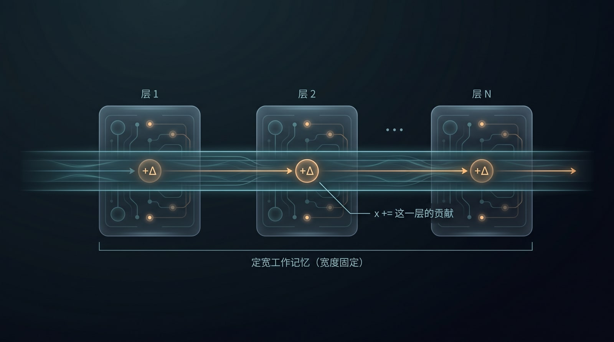
图：残差流是每个 token 一路携带的定宽“工作记忆”。它穿过每一层只被叠加一点贡献（x += 这一层算出来的东西），宽度始终固定——无论上下文是十个还是一百万个 token，每个位置能携带的信息量都被这条定宽向量卡死。
1.3 注意力：每个位置如何“看”别的位置
层与层之间最核心的动作，叫注意力（attention）。它要解决的问题是：当前这个 token 在更新自己时，应该参考上下文里的哪些其他 token？
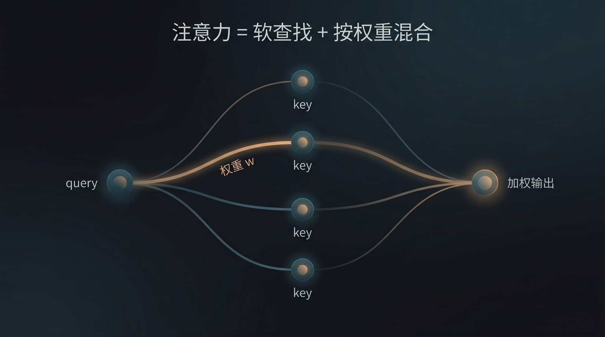
图：注意力像一次“软查找”。当前位置的 query 对每个 key 打分，分数高低决定连线的粗细（即权重），再按这组权重把各位置的 value 加权混合成一个输出——不是只取最相关的那一条，而是按比例融合全部。
机制可以用一个工程师熟悉的结构去想——一次“软的”关联查找（associative lookup）。每个位置都准备三样东西：一个 query 向量 \(q\)（“我在找什么”）、一个 key 向量 \(k\)（“我能作为什么样的索引被找到”）、一个 value 向量 \(v\)（“如果被选中，我交出什么内容”）。当前位置拿自己的 \(q\)，去和每个被看位置的 \(k\) 做点积——点积越大，代表越“相关”。这些相关性分数（叫 logit）经过 softmax 归一化成一组总和恒为 1 的权重，最后把各位置的 v 按这组权重加权混合起来，就是这一步的输出：
\[ o = \sum_i w_i \cdot v_i, \qquad w_i = \frac{\exp(q \cdot k_i / \sqrt{d})}{\sum_j \exp(q \cdot k_j / \sqrt{d})}, \qquad \sum_i w_i = 1 \]
和普通哈希表的硬查找（key 完全相等才命中）不同，注意力是一次软查找：它不挑出唯一一条，而是把所有条目按相关度调成比例，再加权平均。softmax 在这里只干一件事——把一串可正可负的实数分数，压成一个“总和为 1 的分配比例”。这个“总和恒为 1”的约束看似不起眼，却是下一章第一条失效机理的源头：注意力是一种守恒的资源，盘子就那么大，看的东西越多，分到每一样的就越少。
这句话听上去抽象，不妨拿铅笔在草稿纸上算一遍，让“稀释”这件事真正看得见。设想一个最干净的情形：上下文里只有一个 token 是你真正想检索的目标，它和当前 query 的相关度比其余所有 token 都高出一截，高出的那个固定差距记作 \(G\)——为了能心算，我们让 \(G\) 是个与窗口长度 \(n\) 无关的常数，姑且取 \(G = 3\)。其余 \(n-1\) 个 token 都是平庸的背景噪声，相关度彼此相当。那么这个最锐目标能拿到的注意力权重，差不多就是 \(w_{\max} \approx e^{G}/(e^{G}+n-1)\)。\(e^{3}\) 约等于 \(20\)，记住这个数，剩下的就是代入。
先看窗口很空的时候，\(n=10\)：分母是 \(20+9=29\)，\(w_{\max} \approx 20/29 \approx 0.69\)。目标拿走近七成的注意力，检索锋利、干脆，模型几乎是“盯着”它在读。再把窗口填到 \(n=100\)：分母变成 \(20+99=119\)，\(w_{\max} \approx 20/119 \approx 0.17\)。同一个目标，同样高出一截的相关度，能拿到的权重却从七成掉到不足两成——它依然是全场最相关的那个，可它的声音已经被九十多个平庸邻居稀释得只剩零头。继续推到 \(n=1000\)：分母是 \(20+999=1019\)，\(w_{\max} \approx 20/1019 \approx 0.02\)。两个百分点。此时哪怕这个 token 正是答案所在，它分到的注意力也已经和背景噪声拉不开多大距离了。
关键在于：从头到尾，\(G\) 没变，目标“本该有多突出”没变，变的只有窗口里塞了多少东西。\(e^{G}\) 是个常数项，分母却随 \(n\) 一路线性鼓胀，于是 \(w_{\max}\) 必然朝零滑落——窗口越满，最锐的那次检索反而越钝。这不是模型“走神”或“偷懒”，而是 softmax 守恒约束下一道纯粹的算术结论：把固定大小的一块注意力，分给越来越多的竞争者，每一份就只能越来越薄。这正是下一章要展开的第一条失效机理，现在你已经在草稿纸上亲眼看见了它的雏形。
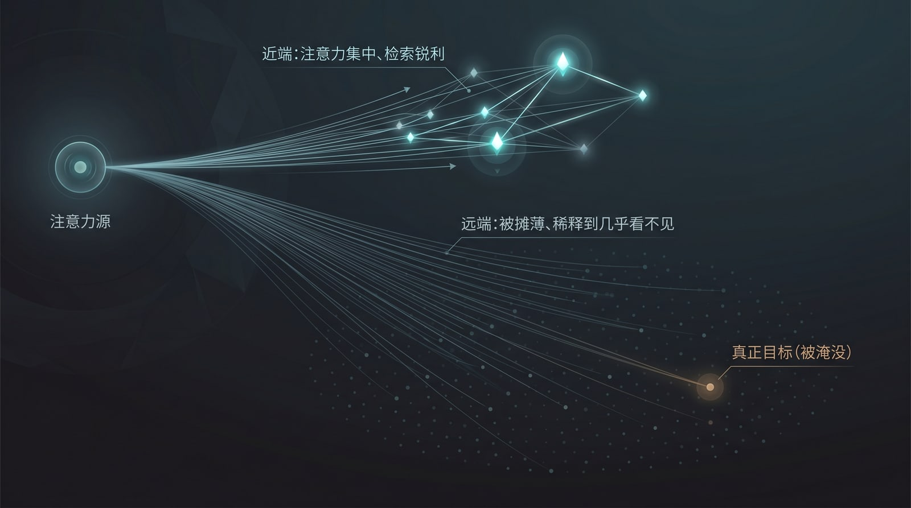
图：注意力是一种守恒资源。同一束注意力（“注意力源”）打到近端少数 token 上时又亮又锐（“注意力集中、检索锐利”）；可一旦摊到远端一大片 token 上，每一束就被稀释到几乎看不见——右下角那个暗金点，正是被淹没的“真正目标”。窗口越满，最锐的那次检索反而越钝。
还有一个约束来自任务本身。模型是在“预测下一个 token”，所以在生成时，每个位置只能看它左边（已经出现）的 token，看不到右边（还没生成）的——这叫因果掩码（causal mask）。它的后果是：信息只能自左向右、一层层向最后一个位置汇聚。这个看似不起眼的方向性，也会在下一章长出一条失效机理。
1.4 KV cache：把算过的历史存起来
模型生成文本是一个 token 一个 token 往外蹦的，每蹦一个新 token，它都要回头去“看”前面所有 token——也就是要用到前面每个位置的 k 和 v。如果每生成一个新 token 都把整段上文的 k、v 从头算一遍，代价会随长度平方级地涨上去。
工程上的对策很直接，也是每个工程师都熟悉的招：把算过的结果缓存下来。模型把每个位置一次性算好的 k、v 存进一块缓存，后续每一步直接复用——这块缓存就是常被提到的 KV cache，本质上是一次跨步的 memoization（增量计算）。
这里要记住两件后文要用的事。其一，KV cache 是模型对“过去”的唯一留存：跨越生成步骤，它对上文的全部记忆，就是这块缓存里躺着的一条条 k、v；模型并没有另一个数据库或状态机替它记着什么。其二，这块缓存随上下文长度线性增长：上下文越长，要存的 k、v 越多，占的显存越大——这条成本曲线，正是后面“百万上下文为什么要靠压缩去硬撑”的根源。
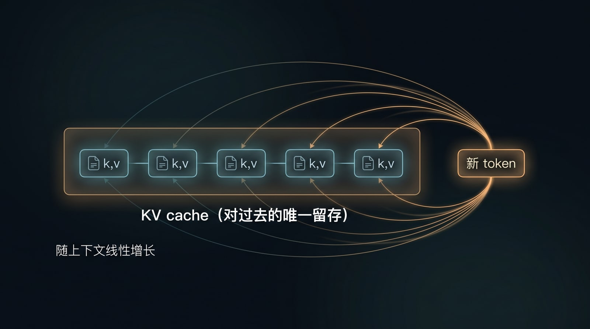
图：KV cache 是模型对“过去”的唯一留存。每个位置算好的 k、v 存进缓存、后续每步直接复用而非重算；它随上下文长度线性增长，正是显存吃紧、长上下文要靠压缩硬撑的根源。
1.5 自回归：它在反复“续写自己”
把以上拼起来，就得到这台机器的工作循环：给定当前上下文，模型算出一个“下一个 token 的概率分布”，从中采一个 token，接到上下文末尾，再以这条更长的上下文为条件，预测再下一个——如此反复。这种“拿自己刚生成的输出，当作下一步的输入”的模式，叫自回归（autoregressive）。
对工程师来说，这里最该警觉的一点是：它是一个把自己输出回灌进自己输入的反馈回路。这意味着它生成的每一个 token，无论对错，都会变成后续所有 token 必须依从的“既成事实”。短问题里这没什么；可一旦链条拉长，这条回路会让早期的小偏差被一路放大、供养——这条性质会在下一章变成一类“延长上下文也救不了”的失效。（采样时还有个“温度”参数控制随机性：温度越高越发散、越低越保守，但它不改变上面这条反馈回路的本质。）
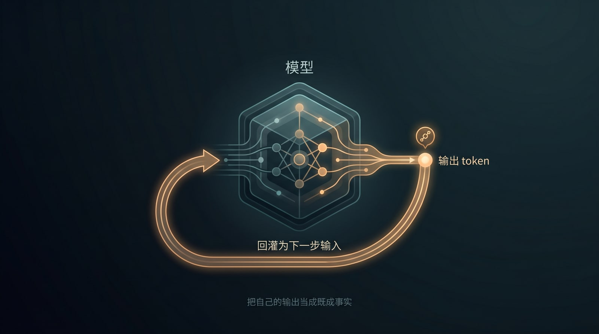
图：自回归是一条把自己输出回灌进输入的反馈回路。模型生成的每个 token，无论对错，都会变成后续所有 token 必须依从的“既成事实”——链条一长，早期的小偏差就被一路放大、供养。
1.6 两个会一直用到的硬件类比：缓存与放大器
在进入失效分析之前，先借两个来自硬件世界的老概念，它们会贯穿这一部分的三章，是后面所有直觉的来处。
第一个来自计算机体系结构里的缓存层级。现代 CPU 旁边有几级容量递增、速度递减的存储：最贴近运算单元的是又小又快的 L1，往外是 L2、L3，再往外才是又大又慢的主存。机器跑得快，靠的不是把所有数据都塞进最快那层（也塞不下），而是一条朴素的经验规律——程序在一段时间里往往反复访问同一小撮数据，这叫“局部性（locality）”。于是只要把当前用得着的那一小撮“工作集”放进最快层，整体吞吐就高且可预测；一旦工作集散掉、频繁去慢层取数，性能就断崖式下跌。一句话：决定性能的不是“你总共有多少内存”，而是“你有没有把对的东西放进最快的那一层”。
这个“断崖”不是修辞，写过性能敏感代码的人多半亲手撞过。想象你在遍历一个矩阵做累加，矩阵小的时候，整块数据都躺在 L1 里，每次访存几个时钟周期就回来了，循环跑得飞快、耗时随规模平滑地线性上升。可一旦矩阵大到工作集装不进 L1，事情会在某个尺寸上突然变脸：原本命中 L1 的访问开始一片片落空，要去 L2、L3 甚至主存取数，单次访存从几个周期暴涨到上百个周期。你画出“耗时随规模变化”的曲线，会看到它在某个临界点猛地向上一折——明明只是把数据多加了一点，吞吐却像踩空台阶一样断崖式跌下去。更扎心的是，这一刻你的总内存压根没用满，CPU 主频也没降，掉下去的唯一原因，就是“对的东西”不再待在最快那一层。记住这种体感：高保真不是靠堆资源堆出来的，而是靠把热数据守在快层里维持的，工作集一旦溢出，性能不是缓慢退化，而是跳水。
第二个来自模拟电路里的放大器。一个三极管放大器的本职，是把一个微弱的输入信号放大成一个更强的输出，放大的倍数叫“增益（gain）”。但它只在一段被称作“线性区”的输入范围内，才能让输出忠实地、不失真地跟随输入；一旦输入太强、越出这段区间，输出就会“削顶”或“饱和”——波形顶部被硬生生削平，信息失真，这时增益再大也没意义。成熟的放大器设计因此往往不追求最大裸增益，而是宁可牺牲一部分增益，换取更宽、更稳的线性区。这个“宁可牺牲增益换稳定”的取舍，到第 3 章会变成理解 harness 的钥匙。
不用懂电路也能体会这件事，把音响的音量旋钮往右一拧就够了。音量开到中等时，声音又大又干净，鼓点利落、人声清亮——这时功放工作在线性区，输出忠实地放大了音源，只是更响而已。可你贪心地继续往上拧，过了某个点，声音不再单纯变大，而是开始“破”：高音发毛、低音糊成一团，原本清楚的细节被一种刺耳的杂音盖住。这就是削顶——信号的波峰被功放的供电上限硬生生切平，多出来的那部分能量没有变成更忠实的声音，而是变成了失真。耐人寻味的是，破音之后你其实并没有得到“更多音乐”，只是得到了“更吵的噪声”；想要的细节反而在这一刻丢掉了。这正是“增益再大也没意义”的体感版本：一个资源有限的系统，越过它的稳定区间去硬榨输出，换来的不是更强的信号，而是面目全非的失真。
这两个体感其实指向同一句话——资源有限的系统，只在一段有限的区间里保持高保真，越界之后不是平滑变差，而是要么断崖、要么破音。缓存讲的是空间维度上的工作集，放大器讲的是不失真的稳定带宽；把这个直觉攥在手里，下一章你会看到 LLM 同时落在这两条约束之下——它的注意力盘子会被填满（缓存那侧的工作集溢出），它的连贯也会在链条拉长后削顶失真（放大器那侧的越界）。
1.7 小结：一个强大的条件生成器，不是状态机
把这一章收束成一句话：LLM 是一个高能力的条件生成器——给定上下文，它生成下一段高概率、高相关性的文本或动作。它能吸收海量语言、代码、工具调用和领域知识，在很短时间里给出像样的候选解释、计划、代码和产物。
但从系统角度看，它不是状态机、不是操作系统、不是数据库、也不是验证器。这个区分，本书会反复用到：它可以在当前上下文里“看起来记得”某条约束，却并不天然拥有持久事实（§1.2 那条定宽残差流和 §1.4 那块会被挤占的 KV cache，决定了“记得”只是暂时的影子）；它可以生成一条 shell 命令，却不知道这条命令是否越权、是否毁掉工作区、是否波及另一个会话；它可以说“完成了”，但这句话本身并不等于产物存在、测试通过、用户目标达成。开篇那个“自信地交付跑不通代码”的 agent 并不是在撒谎——它只是没有任何器官，能区分“说出口的完成”和“被证据证实的完成”。
正因为它是条件生成器，它的强项和弱项来自同一件事：上下文切片合适、目标明确、反馈短而可验证时，它聪明得惊人；可一旦上下文过长、目标漂移、工具副作用复杂、反馈延迟拉长，它就会把“概率上的连贯”误当成“运行时的事实”。它有一段最擅长的工作区间——而这段区间的边界在哪、为什么必然存在，正是下一章要拆开的事。
2. 时空失效：工作区间为什么必然存在
第 1 章末尾留下一个说法：LLM 有一段最擅长的“工作区间”，离开它，质量就开始飘。这一章要把这个说法钉死成一条结论——有效工作区间的存在，是 transformer 加自回归这套架构在有限算力与显存预算下的数学必然，而不是“模型还不够好、以后会修好”的暂时缺陷。 讲透机理很重要，因为后文每一项 harness 能力，都是对其中某一条失效机理的对症补偿；不先讲清楚模型天然缺什么，harness 就会被误读成一袋经验技巧。
2.1 一个统一视角：自回归是一个有限预算的时空滤波器
把第 1 章 §1.6 那两个硬件类比收束成一句话：自回归加 attention，本质上就是一个有限预算下的时空滤波器。 它对“位置远”（空间）和“时间旧”（时间）的信号都会衰减——就像一束光打在越来越宽的舞台上必然越来越暗，又像一段话经过越来越多人转述必然越来越走样。缓存讲的是空间维度上的工作集，放大器线性区讲的是不失真的稳定带宽，而 LLM 同时落在这两条约束之下。下面把“空间”和“时间”两条轴分开拆解。
2.2 空间轴：位置越远，有效敏感度越低
沿着上下文的方向，有好几条机理在同时压低远端 token 的有效权重，它们叠加起来，才让“窗口不平坦”成为必然。
最直接、也最接近纯算术的一条，是 softmax 带来的稀释。回忆第 1 章 §1.3：注意力的权重总和恒为 1——这意味着注意力是一种“守恒”的资源。打个比方，一位老师的目光总量是固定的一份：台下五个学生时，每张脸都照顾得到；台下五百人时，同一份目光摊到每个人身上，几乎落不下什么。模型也一样，窗口里有 n 个 token，平均每个只分到 1/n。要让模型把目光牢牢压在某一个远端关键 token 上，它的 logit 就得显著高过其余——具体地，要把那个 token 的权重抬到 \(p\)，它的 logit 需要比其余高出大约 \(\ln[(n-1)\cdot p/(1-p)]\)，也就是随 \(n\) 大致以 \(\ln n\) 的速度增长。可 logit 不能想多大就多大：它正比于 q、k 两个向量的点积，而现代模型为了训练稳定，会用 RMSNorm、QK-Norm，乃至 Kimi 报告里专门设计的 QK-Clip 把它压住——不压的话，attention logit 会冲到上千量级、训练直接发散。于是 logit 的可达差距被一个与 \(n\) 无关的常数 \(G\) 卡死，单个 token 能拿到的最大权重大约是 \(w_{\max} \approx e^{G}/(e^{G}+n-1)\)，随 \(n\) 增大不可避免地趋于零。结论几乎是算术而非调参：窗口越满，对任意单个远端证据的“最锐检索”就越弱。1 2
与这条稀释叠加在一起的，是位置编码本身带来的距离衰减。今天主流的位置编码叫 RoPE，它的做法是给每个位置的 q、k 旋转一个与“第几个 token”相关的角度，从而把位置信息编码进去。这种旋转有一个数学副作用：两个 token 离得越远，它们 q、k 内积的上界就越低——也就是说，距离本身就在替模型“调暗”远端。更麻烦的是，一旦上下文长度超出训练时见过的范围，这些旋转角度会“退相干”，外推直接失效。需要诚实地补一句：这条距离衰减的严格证明假设了 q、k 是常向量，真实情况下它更像一个先验偏置而非铁律——但偏置的方向是确定的。3
再往深一层，是一个容量问题。还记得第 1 章 §1.2 说过，每个 token 的残差流是定宽的吗？这条固定宽度的向量，要同时承载整段上下文里与当前 token 相关的所有信息。由信息论，一个定宽的状态无法无损地保存无界的上下文——越旧、越远的细节，越会被后来的信息压缩、覆盖。这正是第 1 章 §1.7 那句“看起来记得、却没有持久事实”在数值层面的根：模型并没有真的把某条约束写进某个寄存器，只是在当前这薄薄一层表示里，暂时还留着它的影子。
最后一条藏在“多层”这个结构里，业界借用图神经网络的术语叫它 over-squashing（过度挤压）。要把一个远端 token 的信息送到“当前预测位点”，得跨越很多层注意力；而由于第 1 章 §1.3 讲的因果掩码——每个位置只能看它左边的 token，信息只能自左向右、层层向最后一个位置汇聚——逐层的 softmax 平均会把任何单一来源指数级地稀释掉，以致两段本来不同的长输入，会在最后一个位置的表示上坍缩成几乎一样（低精度浮点会让情况更糟）。这解释了一个反直觉的现象：在长上下文里，“计数、复制、精确区分”这类看起来最简单的任务，反而最先退化。4
把这几条叠起来，§2.4 将给出的经验现象——U 形偏置、NoLiMa 等——就有了机理解释：上下文窗口不是一块平坦内存，它的“有效分辨率”从光标附近向远处递减。
而工业界已经把这条“非均匀分辨率”直接做进了架构——而且做法虽然名字各异，骨子里却是同一件事。为了在百万 token 上还付得起算力（还记得第 1 章 §1.4 说 KV cache 随长度线性涨吗），新一代模型干脆不再对全程做均匀的全注意力。值得把它们摆到一起对照：三类看似无关的工业技巧，其实都是同一个“近端高分辨率、远端粗化”的滤波器，区别只在于那个把远端调暗的“核”长什么形状。
最直白的一种是滑动窗口注意力，它的核就是一个字面意义上的矩形窗：窗内的 token 一视同仁地全权重保留，窗沿之外一刀切到零，远端不是被调暗，而是被直接抹掉。第二种是线性注意力与状态空间模型（MiniMax 这一代的做法是典型），它的核是一条指数衰减曲线——没有硬边，越往前的 token 权重越小，像旧账本上一天天褪色的墨迹，褪得平滑，却也褪得不可逆。第三种最隐蔽，是 KV 压缩，本质是对历史做一次有损降采样：近端最近的 token 保留高分辨率、原样不动，越往远端、KV 被聚合得越狠。DeepSeek V4 的 CSA 把每 \(m\) 个 token 压成一条、HCA 再把每 \(m’\)（远大于 \(m\)）个 token 压成一条，Kimi 的 MLA 则是把多头的 KV 投影到一个低秩潜空间里再展开——名目不同，效果一致：远端 token 不再各自占一格，而是几个、几十个挤进同一条被平均过的表示里，细节在降采样中永久丢失。把这三种核叠加看，矩形、指数、阶梯状的压缩比，无非是同一族“近清远糊”包络的三种参数化罢了。
这件事的推论很有分量，值得说重一点：连最有动机把“窗口能开多大”当卖点的厂商，自己都在用压缩偷偷换取那个标称的容量上限。 一家公司在规格表上写下“1M context”，却在架构里用 CSA/HCA 把远端 KV 成倍地砍掉——这本身就是一句无声的供认：那一百万格不可能处处等价，否则它根本不必、也不敢压。换句话说，所谓“1M context”从来不是一条处处等价的传送带，而是一组分辨率非均匀的滤波器：近端清晰，远端只剩轮廓。 这恰恰从厂商自己的设计选择里，反证了本章那条主线——容量上限不等于有效工作区间。
也正因为远端是被这样一层层粗化掉的，§2.5 那套探针在你自己的模型上量出来才会是那个样子：当你把“针”往远端（depth → 0%）挪、再一路把总长 L 推大，你看到的 recall–depth 曲线远端塌陷，并不是模型“偶尔走神”，而是你正隔着这层非均匀滤波器去够一条早已被矩形窗截断、被指数核压暗、或被 CSA/HCA 平均进邻居里的证据——能量本就不够，曲线自然抬不起来。能不能直接读到某个模型用了哪种核，往往藏在闭源细节里；但探针给你的远端塌陷形状，是这层滤波器留在外部可观测面上的指纹，量一次就看得见。5
这里要专门强调一句，免得读者误以为“换个更强的闭源前沿模型就没事了”：闭源前沿也不例外。 第三方的系统评测（如 Chroma 对 18 个前沿模型做的 Context Rot 测试）显示，每一个模型都在每一个长度增量上掉点；前沿模型只是衰减得更缓，而非豁免。更说明问题的是，lost-in-the-middle 和干扰项导致的退化，在大概率使用全注意力的模型上照样出现——这说明它来自上面那几条基本面的“地板”，而不只是压缩作弊。Anthropic 自己的工程文档也直说，context rot 在远未触达容量上限时就已经开始。这是个该让团队清醒的事实：你买到的从来不是一块平坦的百万格内存，而是一段中心清晰、边缘发虚的视野。6
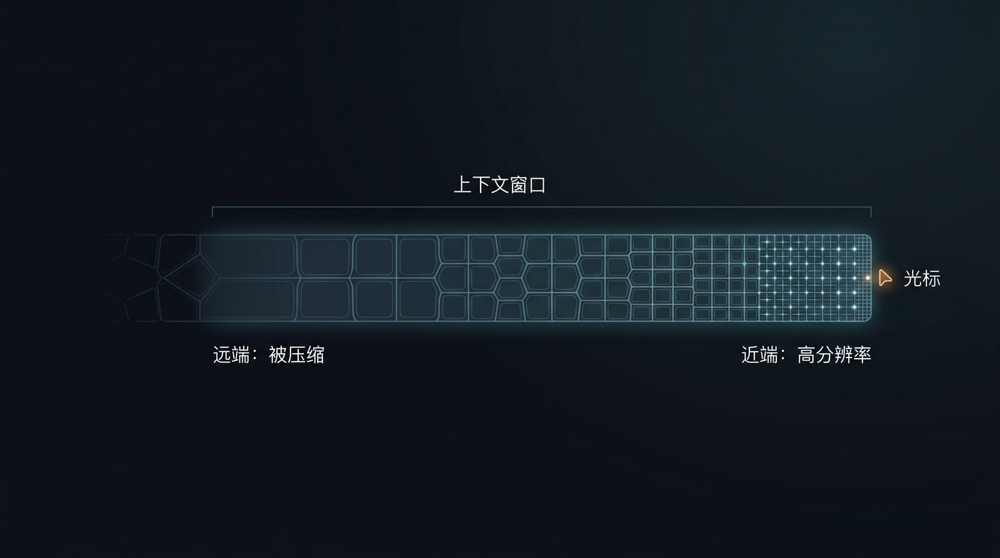
图：所谓“1M 上下文”不是一条处处等价的传送带。靠近光标的右端分辨率高、清晰可辨；越往远端越被压缩、聚合，最终只剩一道模糊轮廓——容量上限之内，有效分辨率从光标附近向远处递减。
2.3 时间轴：时间越旧，有效敏感度越低
长任务的失效看起来是个“时间”问题——跑得越久越偏——但要拆成两半才讲得透：一半可以归约成空间问题，另一半不可约。
先说可约的那一半，姑且叫它记忆老化。第 1 章 §1.4 交代过，模型对“过去”的唯一留存就是 KV cache，除此之外并没有别的跨步状态——所以“k 步之前的事还记不记得”，等价于“那个 token 还在不在窗口里、当前 token 还 attend 得到它吗”。随着生成一步步推进，一个旧事实与当前光标之间的相对距离单调增大，于是它就按上一节的几条空间机理被衰减，最终被窗口截断、被压缩、或被逐出。所以“随时间遗忘”在机理上就是“随相对距离衰减”——时间问题塌缩成了空间问题。开篇那个“忘掉两小时前约束”的 agent，并不是记性差，而是那条约束在它的视野里一步步退到了边缘。
再说不可约的那一半，叫误差复合。还记得第 1 章 §1.5 说自回归是一个“把自己输出回灌进自己输入”的反馈回路吗？即便给它一个完美、无限、均匀的窗口（空间衰减为零），这条回路仍然会让它随任务变长而劣化。这一点最像小孩玩的传话游戏：第一个人说得清清楚楚，传到第十个人嘴里已经面目全非。区别只在于，自回归模型既是传话的人、也是听话的人——它把自己上一句可能说错的话，当成下一句必须遵从的事实。设每一步出错的概率是 \(\varepsilon\)，那么连续 \(T\) 步全对的概率大约是 \((1-\varepsilon)^{T}\)——可靠性随任务长度（horizon）几何式地衰减。再叠加一个被称作 exposure bias 的偏差：训练时模型总是被喂以正确的前缀，推理时却只能以自己越来越偏离分布的输出为条件。换句话说，错误不是被稀释，而是被供养。这一半是反馈回路自身的性质，延长上下文救不了它——只能靠降低单步 \(\varepsilon\)、缩短 horizon、引入独立验证、或重采样。
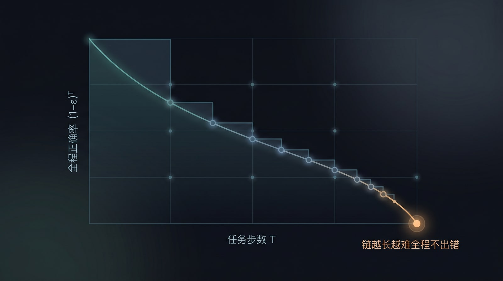
图：误差复合。即便给一个完美无衰减的窗口，自回归也会把上一步可能的错误当成下一步的既成事实，于是“连续 T 步全对”的概率随任务长度 T 几何式下滑——链越长越难全程不出错，这一半延长上下文也救不了。
用电路语言收个尾会很干净：一个带反馈的递归系统，有两种相互独立的退化方式——一种是它的“冲激响应”随距离衰减（对应记忆与空间衰减，可约），另一种是它把自己带噪的输出回灌后，噪声在回路里不断累积（对应误差复合，不可约）。对应的补偿，恰好也是两类互补的器件：一类像“锁存器”，把关键事实牢牢锁住、对抗记忆衰减；另一类像“负反馈环”，把错误送回去纠偏、对抗误差复合。这两类器件的电路史——Black 的负反馈放大器、SRAM 的双稳态锁存——会在第 3 章作为 harness 的血统展开；本章先把“为什么必然需要这两类器件”从机理上立住。
这里顺手给出一个后文会反复用到的可操作判据：把丢失的信息重新塞回光标附近——如果失效被修复了，它就是空间问题，可由上下文工程补偿；如果模型本来就拿到了信息却仍然漂移、越错越多，它就是不可约的时间核，只能靠验证、缩短 horizon 和人在环上来兜住。 记住这条分界线，后文几乎所有 harness 设计的取舍，都能落到它的两侧。
2.4 容量上限不等于有效工作区间：实测印证
上面的机理预测了一个直接后果：同一个上下文窗口，越往远端越不可用。这一节把它落到事实，并给出工程上该怎样对待它。
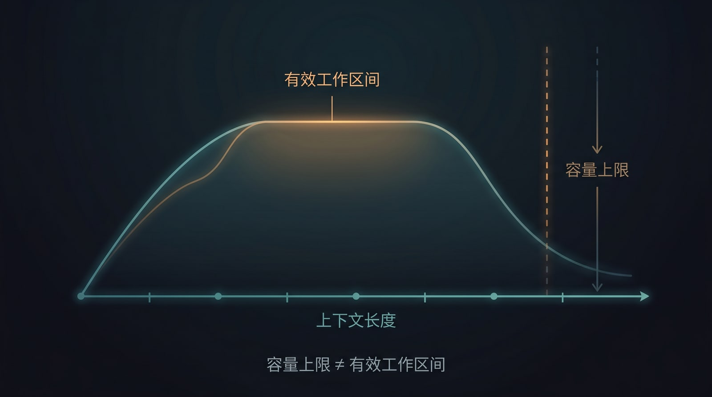
图：容量上限 ≠ 有效工作区间。横轴是上下文长度，最右那条虚线是模型标称的容量上限；可“还能稳定检索、遵循指令”的有效工作区间（中间那段高原）远在它左侧就已回落。最大 context 是规格，最佳工作区间才是设计目标。
2024 年初有过一个短暂的乐观时刻。Google 发布 Gemini 1.5，宣布它能在百万 token 的“大海”里，以 99% 的命中率捞出那一根“针”——不少人当时以为长上下文问题就此了结。乐观没能维持多久，因为人们很快意识到，真实任务里要捞的从来不是一根针，而是一把散落各处、还彼此牵连的针。
把这件事摊开看，结论相当一致。Google 自己后续的 long context 开发文档就明确提醒：一旦从“单根针”变成多个待检索的信息点，命中率不再维持那个漂亮的数字，而且会随上下文内容大幅波动。7 8 学术界给出的信号更直接：Lost in the Middle 发现，放在开头或结尾的信息更容易被用上，夹在中间的则明显被冷落；Found in the Middle 进一步把这种现象概括成一条 "U 形注意力偏置"——这正是上一节那条“有效分辨率从光标附近向远处递减”的曲线，在检索任务上显出的形状。说到底，这是个很有人性的毛病：我们读一篇长文，也总是记得开头和结尾，把中间那段忘得最干净。9 10 而当任务从“按字面找”升级成“跨段落推理”时，分数会塌得更厉害——NoLiMa 去掉字面匹配线索后，单是在 32K 长度上，就把 GPT-4o 从 99.3% 打到了 69.7%；LongCodeBench 把场景换成真实的代码理解与修复，长上下文能力同样明显变脆。11 12 反过来，也正因为窗口不平坦，Anthropic 的长上下文文档才会给出那个很务实的经验：把长文档放在前面、把问题放在最后，复杂的多文档输入下，回答质量能提升三成左右。13
这些结果合起来说明同一件事：在同一个“1M context”里，不同位置、不同信息密度、不同任务形式的可用性并不均匀。上下文窗口更像一块可寻址的大内存，而不是一条任何位置都等价的理想传送带；所谓“最佳工作区间”，也不是某个固定的魔法数字（比如“128K 最好、256K 开始变差”），而是一条随任务结构变化的工作带宽——在多大范围内，模型还能稳定检索、遵循指令、保持多步推理、避免位置偏置，并让系统在成本和时延上可接受。
2.5 动手把窗口的不平坦量出来
前面几节的机理，和别人测出的那些曲线，都还停在“读到”。要把它变成你自己的工程直觉，最划算的办法是花半天，在你真正要用的那个模型上，把窗口的不平坦亲手量一遍。下面这套探针小到一个下午能搭完，却能逼出三条对设计直接有用的读数。
基本探针就是经典的“大海捞针”。造一段无关的长填充文本当“海”，在其中某个相对深度 d 处（d=0% 最靠开头、d=100% 最贴近问题）埋一句可验证的事实当“针”，把问题放在整段的最后，再看模型答不答得出那句事实。固定总长 L，让 d 从 0% 扫到 100%，每个 d 重复 k 次取命中率，画出来就是一条 recall–depth 曲线——它就是 §2.2 那句“有效分辨率从光标附近向远处递减”在你这台模型上的样子。
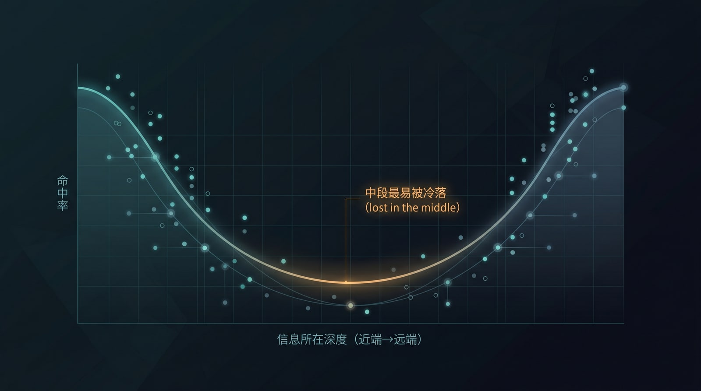
图：把“针”埋在不同深度、扫描命中率，画出来往往是这样一条 U 形曲线——开头和结尾的信息容易被用上，夹在中间的最容易被冷落。这正是窗口不平坦在检索任务上显出的形状。
def probe(model, L, depth, distractors=0, paraphrase=False):
needle = make_needle(paraphrase) # 一句可验证的事实
ctx = build_filler(L) # 无关长文本，总长约 L 个 token
ctx = insert_at(ctx, needle, depth) # 在相对深度 depth 处插入针
for _ in range(distractors): # 可选：埋几条相似但错误的“近似针”
ctx = insert_at(ctx, near_miss(needle), rand_depth())
q = question_for(needle, paraphrase) # 问题放最后
return verify(model(ctx + "\n\n" + q), needle) # 命中=1 / 未命中=0
for L in [4_000, 16_000, 64_000, 256_000]: # 扫长度
curve = {d: mean(probe(model, L, d) for _ in range(k))
for d in [0.0, 0.1, 0.2, 0.3, 0.4, 0.5, 0.6, 0.7, 0.8, 0.9, 1.0]}
真正有意思的是那三个旋钮，每拧一个，都在单独点亮 §2.2 的一条机理。拧总长 L（从 4K 一路到 256K），你会看到整条曲线随 L 增大而整体下沉——这正是 softmax 稀释：窗口里 token 越多，单个远端证据能拿到的最大权重 \(w_{\max}\) 越往零走。往别处埋几条“近似针”（相似但错误的干扰句），你会看到曲线的中段塌得更狠——这是 U 形偏置叠加 over-squashing：夹在中间、又被相似信息包围的证据，最难被锐利地挑出来。再把针和问题都改成语义匹配、抹掉字面线索（paraphrase），你会看到整条线再掉一截——这就是 NoLiMa 那条“从按字面找，升级成跨语义推理找”时的额外退化。三件事几乎一定会发生，而每一件都不是“模型今天状态不好”，是架构机理在你的模型上的具体读数。
量到了曲线，接下来才是它真正值钱的地方——把读数翻译成设计决定。第一条最直接：找到那个“中段命中率还压得住可接受线”的最大 L，它就是这个模型在这类任务上的有效工作区间上界，该写进你的调度与切片策略，而不是去信规格表上那个容量上限。第二条用上 §2.3 那把判据：如果把针挪到光标附近（depth → 100%）命中率就回来了，那这就是个空间问题，可以靠上下文工程补偿——短而密的近端证据、检索、分层缓存，把关键事实搬回光标边。第三条是反过来的坏消息：如果针就摆在眼前、命中率却还是上不去，或者答案越长越跑偏，那你撞上的是不可约的时间核，再怎么搬运证据都没用，只能靠缩短 horizon、引入独立验证、把人留在环上来兜。
得诚实补一句分寸：这套探针给你的是相对形状和你自己模型的工作带，不是论文级的绝对分数；真要做横向对标，前面引到的 NoLiMa、Lost in the Middle、Context Rot 才是系统评测。可工程上你最需要的，恰恰不是“某模型在某榜单上多少分”，而是“我这个模型、这类任务、这个长度”的那条线——而这条线，只能你自己量。量过一次，“窗口不平坦”就从一句读来的信念，变成了手边一张能拿来拍板的曲线：后面每一次“这段材料到底要不要塞进 prompt”的取舍，都有据可依。
2.6 小结：把容量上限和有效工作区间分开
因此，工程上必须把两件事分开：一件是容量上限，即模型最多能接收多少 token；另一件是有效工作区间，即在当前任务形态下，模型还能稳定检索、遵循指令、维持推理链的那一段上下文。前者写在产品规格里，后者才是 harness 真正要经营的对象。结论也随之而来：最大 context 是容量上限，最佳工作区间才是设计目标。一个 agent 系统不该默认“把更多材料塞进窗口”就会更可靠，而应当反过来设计任务——让模型每次只看到更短、更密、更靠近当前决策的证据切片，把状态、历史、产物和验证证据移到运行时的事实流里，再按需调回 prompt。这条原则听起来朴素，却和大多数人对“长上下文”的第一直觉正好相反，它是本书后面所有上下文设计的出发点。
到这里，问题已经摆清楚了：模型在空间和时间上都会失效，而且这是架构层面的必然。下一章回答的，就是该拿它怎么办——那个把模型拉回工作区间的“外层控制系统”，到底是什么、从哪来。
-
Petar Veličković et al., Softmax is not Enough (for Sharp Size Generalisation). 本章在此处使用其关于 softmax 随规模稀释、无法保持锐利选择的结论，来解释注意力质量守恒下的远端稀释；对应第 23 章参考文献 43。 ↩
-
本章在此处使用 Kimi K2 技术报告关于 attention logit explosion 与 QK-Clip 的描述（不封顶时 max logit 越过 1000 量级、训练发散），用来说明 logit 被主动限幅、因此单 token 注意力权重存在与 n 无关的上界；对应第 23 章参考文献 47。 ↩
-
Jianlin Su et al., RoFormer: Enhanced Transformer with Rotary Position Embedding. 本章在此处使用其关于相对距离衰减包络（经 Abel 变换得到）的结论；并按 Round and Round We Go! 标注该衰减证明依赖 query/key 为常向量的前提，故宜视为先验偏置；对应第 23 章参考文献 44、45。 ↩
-
Federico Barbero et al., Transformers need glasses! Information over-squashing in language tasks. 本章在此处使用其关于 representational collapse 与因果掩码下信息单向汇聚、over-squashing 的分析，来解释长输入中计数/复制/区分类任务的退化；对应第 23 章参考文献 46。 ↩
-
本章在此处综合 DeepSeek-V4 技术报告（CSA/HCA 混合压缩注意力、异构与 on-disk KV cache，将近端高分辨率与远端激进聚合并置）与 MiniMax M3（MSA 稀疏/线性注意力）的做法，用来说明工业界以非均匀分辨率换取百万级容量上限；对应第 23 章参考文献 48、49。 ↩
-
本章在此处综合 Chroma Context Rot 对 18 个前沿模型在各长度增量普遍退化的测试，以及 Anthropic Effective context engineering for AI agents 关于“context rot 在远未触达容量上限时即开始”的说明，用来支撑“闭源前沿也不例外”；对应第 23 章参考文献 50、51。 ↩
-
Google, Introducing Gemini 1.5, Google’s next-generation AI model. 本章在此处使用其关于 NIAH 命中率、1M context pricing tier 与时延预期的表述；对应第 23 章参考文献 14。 ↩
-
Google AI for Developers, Long context. 本章在此处使用其关于 performance variability、retrieval-cost tradeoff 与 caching 的说明；对应第 23 章参考文献 15。 ↩
-
Nelson F. Liu et al., Lost in the Middle: How Language Models Use Long Contexts. 本章在此处使用其关于长上下文位置偏置与中段退化的结果；对应第 23 章参考文献 11。 ↩
-
Cheng-Yu Hsieh et al., Found in the Middle: Calibrating Positional Attention Bias Improves Long Context Utilization. 本章在此处使用其关于
"U-shaped attention bias"的分析；对应第 23 章参考文献 12。 ↩ -
Ali Modarressi et al., NoLiMa: Long-Context Evaluation Beyond Literal Matching. 本章在此处使用其关于 32K 条件下模型退化统计，以及 GPT-4o 从 99.3% 降至 69.7% 的结果；对应第 23 章参考文献 16。 ↩
-
Stefano Rando et al., LongCodeBench: Evaluating Coding LLMs at 1M Context Windows. 本章在此处使用其关于代码任务长上下文退化的样例数据；对应第 23 章参考文献 17。 ↩
-
Anthropic, Prompting best practices: Long context prompting. 本章在此处使用其关于长文档前置、query 后置与约 30% 质量提升的建议；对应第 23 章参考文献 13。 ↩
3. 控制系统的回应：harness 是什么、从哪来
第 1 章说清了 LLM 是一台什么机器，第 2 章说清了它在时间和空间上为什么必然失效。两章合起来，指向同一个工程结论：一个概率性的条件生成器，必须被一个外层系统持续纠偏，才能在长任务里留在有效工作区间内。这一章回答的就是——这个外层系统是什么、从哪来。
要先把主从关系说明白：harness 的正当性首先来自第 2 章的失效机理；这一章要讲的控制论、缓存与负反馈历史，是这套控制语言的来源与直觉，而不是另一条独立的证明。 答案会落到 agentic AI 上：所谓 agentic AI，不是“让模型自己想办法”的浪漫说法，而是给 LLM 搭一个能感知、行动、记忆、验证、恢复、并被人类监督的工作环境；正是这个环境提供的负反馈循环，才是 LLM 能稳定、高效工作的前提。
3.1 条件生成器带来的五类系统挑战
第 1 章末尾说过，LLM 是个高能力的条件生成器，而不是状态机。把这样一台机器放进真实工作流后，问题很快就不再是“它能不能回答”，而是几件它天生不擅长的事接连冒出来。最先暴露的是目标保持：用户目标会被拆成一串带依赖、带冲突、带优先级的子目标，模型能把目标复述得很漂亮，却不天然拥有跨小时、跨会话守住目标的机制。紧接着是上下文选择——真实任务的材料远大于窗口，哪些内容常驻、哪些按需加载、哪些压缩成摘要、哪些必须写回事实流，这种取舍不能指望模型临场自觉。再往下是工具副作用：shell、文件系统、浏览器、MCP、外部 API 都会真实地改变环境，而“模型提出一个动作”绝不等于“这个动作就该被执行”。然后是结果验证：生成器天然偏好给出连贯的结论，可连贯并不等于正确，产物到底存不存在、新不新鲜、属不属于当前任务、满不满足业务约束，需要一个独立的判断者。最后是人类控制——用户需要授权、打断、恢复、审计和接管，一个看不懂、停不下、复不了盘的 agent，哪怕短期能把活干完，也很难真正进入生产。
这几类挑战，没有一类是单个 prompt 能彻底解决的。prompt 能提高局部的成功率，却提供不了持久状态、权限边界、工具隔离、回放证据和终态裁决——它们必须进入运行时。
3.2 Agent 概念的演化：从自治系统到 LLM 工具执行体
早期的 agent 理论并不是从 LLM 开始的。Franklin 和 Graesser 给 autonomous agent 下的定义，今天拿来当起点依然合适：agent 不是一次性运行的程序，而是会 "senses that environment and acts on it, over time" 的系统；他们甚至故意举了个有点刺耳的例子，说一个恒温器也满足这个定义。1
这句话初听很“降格”，因为现代人一提 agent，脑子里先冒出来的往往是个会说话、会规划、会调工具的复杂体。但 Franklin / Graesser 的用意恰恰相反：他们想提醒我们，别把 agent 的本体误认成它语言的表面。只要一个系统会感知环境、按当前状态调整行为、再把自己的行动回写进下一轮的感知条件里，它就已经进入了 agent 的问题域。Wooldridge / Jennings 那条经典线索，进一步把 agent 的弱定义压成几项可工程化的特征：自主性、反应性、主动性和社会性。1 到了 LLM 时代，ReAct 把这条线索重新接到语言模型上——模型不再只做一次性回答，而是在推理（reasoning）和行动（acting）之间来回循环，让每一步的观察结果都进入下一步的推理；Claude Code 论文也把现代 coding agent 的演化路径讲得很清楚：从自动补全，到 IDE 助手，再到能规划多步修改、执行 shell、读写文件、迭代自己输出的 agentic system。2 3
把这些概念翻成工程语言，一个现代 LLM agent 至少包含下面这个循环：
用户目标 / 环境 / 工具 / 运行时事实
-> 感知（读取上下文、工具回执、session 状态）
-> 判断（识别约束、估计状态、更新计划）
-> 决策（选择下一步、选择工具、选择角色/路径）
-> 行动（调用工具、修改产物、派工、回写事实）
-> 新环境 / 新事实
这也正是 agent 和普通聊天程序在工程上完全不是一回事的原因。普通程序的输入输出常常是一锤子买卖；而 agent 当下的行动，会改变它下一次能感知到什么，所以它天然是个闭环系统，而不是一个单轮映射函数。语言模型在这里只是判断器、或者说策略生成器的一部分，而不是整个系统。
3.3 Agentic AI 做的事：给 LLM 建一个稳定工作环境
如果把上一节那个闭环拆开，agentic AI 在做的事就清楚了：它不是替代 LLM，而是为 LLM 建一个工作环境。这个环境大体分工如下——感知的部分，负责把用户目标、文件、日志、网页、MCP 资源、历史事实和工具回执，组织成当前可用的上下文；行动的部分，负责把模型提出的动作，转成受权限、沙箱、schema 和并发规则约束的工具调用；记忆的部分，负责把重要事实写回 session、文档、skills、memory 和 artifact，而不是任由它们只漂在 prompt 里；验证的部分，负责把“看起来完成”改成“证据证明完成”；而控制的部分，则负责压缩、恢复、打断、升级、分派子 agent，并把错误反馈回下一轮。
Claude Code 论文对这一点的概括很有价值：核心的 agent loop 可以简单到只是一个“调用模型、运行工具、再来一遍”的 while 循环，但绝大多数代码并不在这个循环里，而在循环周围那套系统——权限、compaction、MCP/插件/skills/hooks、子 agent 派发，以及追加式的 session 存储。3 这恰好说明，agentic AI 的本体不是“模型多聪明”，而是模型周围那套让它能持续工作的控制系统。所以本书所说的 harness，不该被理解成一层外挂的脚手架，而应被理解成 agent 的外层反馈控制系统：它的任务不是让模型显得更聪明，而是持续感知偏差、校正偏差，并把系统重新拉回可用区间。
3.4 三段血统：控制论、缓存、负反馈
这套控制系统并不是凭空发明的。今天我们在 agent 上遇到的问题，本来就是三段老工程史在一种新的计算介质里重演——它们正是第 1 章 §1.6 那两个类比（缓存、放大器）的来处。隔着半个多世纪，这三拨人面对的其实是同一个问题：怎样让一个系统，在噪声里不丢方向。
第一段是控制论。Norbert Wiener 之所以重要，不只是因为他写了一本标题里带 Cybernetics 的书，更因为他把一个工程问题第一次讲成了一种统一的语言。Britannica 对这段历史的概括点到了要害：Wiener 在二战期间处理的是“如何瞄准移动目标”这类控制问题，他在预测、滤波和目标保持上的思考，后来直接通向了控制论。4 他关心的不是“机器会不会像人一样思考”，而是“一个系统怎样在持续变化的环境里保持方向”——这是个相当谦卑的问题意识：不追问机器能否超越人，只追问它能否别在半路走丢。MIT Press 对《控制论》的概括很简洁：它研究的是带有 "feedback loops" 的系统中信息如何被控制，以及噪声如何破坏系统的 homeostasis（稳态）。5 把这套语言翻回今天的 LLM agent，结论非常直接：真正困难的问题，不是让模型偶尔答出一个漂亮答案，而是让系统在任务持续推进、外界不断反馈、约束持续变化时，仍然不丢目标——而控制论关心的“目标保持”，恰好就是第 2 章 §2.3 那条“记忆老化”机理在系统层面显出的样子。
第二段是缓存。第 1 章 §1.6 已经讲过缓存层级和局部性，这里补的是它背后那段很“物理”的失败史，因为它和 agent 的上下文控制几乎同构。Computer History Museum 的描述很形象：第一代很多内存是串行的，比特在环路里循环流动，机器想读写某个数据，只能等那一串比特转回到可访问的位置；Maurice Wilkes 的 EDSAC 用过水银延迟线，数据化作声波脉冲在水银柱里来回，你要的那一位得等它转回管口；直到随机访问内存出现，才真正 "eliminated the wait"。6 后来分层越来越清楚：IBM 的 System/370 把计算带进“硅时代”，而它所用的双极型 RAM 正是用作缓存。这段演进说明，缓存不是“聪明人爱抽象”的产物，而是当单层存储无法同时满足速度、容量和成本时，被现实逼出来的体系结构选择——这恰好也是今天“1M 上下文 vs 有效工作区间”那道矛盾的前身。Chris Terman 把缓存奏效的前提总结成一个词——"locality of reference"（引用局部性）：系统不必把全部数据都放进最快层，只需把当前工作集放进去，再靠组相联度、块大小、替换策略、写策略自动管理层间流动。7 这套逻辑直接对应到 agent：当前这一轮的 prompt 相当于贴近 CPU 的 L1，AGENTS.md、skills 和短期 memory 相当于可快速调入的次级层，而 session 事实流、artifact、文档、外部检索结果相当于更慢更大的下层存储。harness 在这里做的，就是一种“认知层级的缓存控制”——决定什么允许进入当前 prompt（admission）、什么旧信息该退回 session（eviction）、一次喂进去的是整块原文还是压缩切片（block size）、哪些中间状态必须立刻写回持久事实流（write policy）。这正是第 2 章 §2.2 那条“softmax 稀释”机理的直接对策：不把高速层塞爆，只把短、密、近的证据切片放进当前窗口。
第三段是负反馈，故事感最强。Harold S. Black 在 Bell System 遇到的问题并不神秘：长途电话链路上，信号要穿过一串又一串放大器，增益是有了，可失真、噪声和漂移也一路叠加上去——这几乎就是第 2 章 §2.3 那个“传话游戏”的电学版本。Black 为消除失真坚持了六年，最终在一个再普通不过的通勤早晨、在开往曼哈顿的渡轮上想清楚了负反馈放大器的原理，顺手把推导记在了一份报纸的边角上。8 这件事揭示了一个反直觉的工程事实：成熟系统追求的，往往不是最大的裸增益，而是更可控的整体行为。回到第 1 章 §1.6 那个放大器——它只在线性区内不失真，越界就削顶；Black 的做法，本质上是把一部分输出送回输入端，用主动牺牲一点增益，换来更宽的线性区、更低的失真和更可预测的整体表现。9 半导体世界里还有一幅互补的画面：Terman 讲 SRAM 的存储单元时说得很直接，它本质上是一个 "positive feedback loop"（正反馈回路），用来形成可稳定保存状态的双稳态。7 这正是第 2 章 §2.3 点到的那两类互补反馈的电路原型——正反馈用来锁存状态，让一个比特不至于自己滑掉；负反馈用来抑制放大链里的漂移与失真，让整体仍停在稳定区。对一个长期运行的 agent，这两类机制缺一不可：它的“锁存器”，是 session 事实流、通过了验证的 artifact，以及角色、作用域、worktree 这些边界；它的“负反馈环”，是验证器、回放、dashboard、人工升级、角色重分配和恢复逻辑。长任务 agent 最容易犯的错，恰恰是把这两类机制一起省掉——既没有东西把关键事实锁住，又没有东西把错误输出送回纠偏，结果短期看跑得飞快，长期看状态漂移、工具误用、上下文污染和错误自信一起累积，败因和那条没有负反馈的放大链一模一样。
把这三段血统收束到一起，会得到一套可以直接套用的闭环控制词汇——而这套词汇，正是后面所有章节在反复使用、却很少被一次性讲清的那套。控制工程里，一个闭环系统总有这么几样东西：一个参考值（setpoint），是你希望系统稳定停在的目标；一个误差信号（error），是当前状态与参考值之间的差；一个传感器，负责把当前状态测出来；一个控制器，负责根据误差算出该怎么调；一个执行器，负责把控制器的决定作用回系统上；以及一类扰动（disturbance），是不断把系统推离目标的外部噪声。还有一个常被忽略的角色叫前馈（feedforward）——它不等误差出现，而是预先根据已知信息把动作调对，好减少之后要纠的偏差。家用恒温器就是最朴素的样本：参考值是你设的温度，传感器是温度计，控制器是那块判断逻辑，执行器是加热或制冷，扰动是开窗灌进来的冷风。
把这套词汇一对一地钉到 harness 上，agent 这个闭环就彻底显形了。参考值是用户目标加验收标准——这本书反复强调要把它锁进 session、别让它漂在 prompt 里，正是因为参考值一旦丢，整个回路就失去了“对齐谁”的依据。传感器是工具回执、文件变化、validator 结果、子 agent 摘要和那条事实流——第 8 章之所以死守“前端只能投影、不能发明事实”，本质上就是在保护这枚离人最近的传感器不撒谎。误差信号是验证结果与目标之间的差：验证器报一个 failed，就是这个回路测到了一次非零误差。控制器是 harness 的调度循环——它读误差，决定继续、压缩、重试、派工、升级还是打断。执行器是 shell、文件系统、MCP、子 agent 这些真正改变环境的手。而扰动，恰恰就是第 2 章那几条失效机理：上下文衰减、记忆老化、误差复合，外加外部世界的网络抖动和工具失败——它们无时无刻不在把 agent 推离参考值。至于前馈，对应的正是 AGENTS.md、角色指令、skills 这类“在行动之前就提高成功率”的向导，也就是下一节 Böckeler 那个“guides 在前、sensors 在后”的分工。看清这张对应表，本书后面那句反复出现的“harness 是外层反馈控制器”，就不再是一句借来的比喻，而是一份可以逐个元件去核对的工程清单：哪一项缺了，回路就会在那一处失稳——没有参考值锁存就目标漂移，没有传感器就只能盲飞，没有独立的误差信号（验证器）就把扰动当成了真相，没有控制器的纠偏就一路放大错误。第 5 章那一整排事故，本质上都是这张清单上某个元件的缺席。
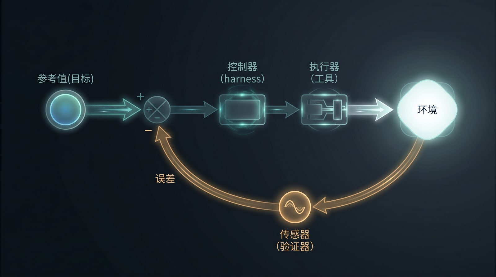
图：harness 作为外层反馈控制器。左端标出的那个节点是参考值（用户目标），信号经一连串处理后，一部分输出被取出、沿下方回路送回输入端纠偏——正是这条把误差送回去的负反馈环，对抗着链路上不断累积的噪声与漂移。
3.5 Harness 作为外层反馈控制器，与那层控制栈
把三段血统叠起来，harness 的角色就立体了：模型本身只负责生成下一步的候选动作，真正把闭环“关上”的是 harness——它通过 session、工具回执、验证器、dashboard 与回放来感知系统状态，通过 compaction、检索、角色路由、权限边界、重试与升级来调节系统，又通过 artifact 契约、终态裁决和人工介入，把错误的行动拦在用户可见的表面之前。
2026 年 Thoughtworks 这一波关于 harness engineering 的讨论，很适合当现代实践的起点：Birgitta Böckeler 在文章里公开致谢 Kief Morris，说是他把控制论带进了讨论——这不是花絮，而是一个信号：今天的软件团队重新谈 harness，本质上是在重新发现一个很老的控制问题。10 Böckeler 把团队对 AI 生成代码的那道 "natural trust barrier"（信任壁垒）拆得很控制论：前馈的“向导（guides）”负责在行动之前提高成功概率，反馈的“传感器（sensors）”负责在行动之后帮系统自纠。Kief Morris 则把人的位置重新定义成 "on the loop"（在环上）——人的工作不是盯着每一行生成的代码，而是设计并改进那个会持续产出代码、测试、文档和验证结果的工作回路。10 这两个说法——前馈向导与反馈传感器、人“在环上”而非“在环里”——后面几章会反复出现，值得先记住。
“向导”和“传感器”听上去抽象，落到一个具体动作上就立刻清楚了，而且会发现它们不是二选一、而是必须前后串起来用。设想这样一步：你让 agent 生成一段会向外部服务发请求的代码——比如把周报上传到 Slack 这种两段式接口，第一段拿上传地址、第二段提交 completeUpload 才算真发出去。前馈这一侧，是在 agent 动笔之前就把成功率拉高的全部布置：AGENTS.md 里写明“凡是外部副作用，必须等服务端确认再宣告完成”，角色指令规定这类 I/O 走哪个封装而不许裸调，相关 skill 把“两段上传、第二段必须校验回执”的正确写法编码成可复用流程，工具的类型签名和 schema 则在更硬的层面约束它——upload(...) 的返回类型里压根没有“我觉得发出去了”这种字段，只有一个必须被检查的 delivery.receipt。这些都是 setpoint 还没被破坏之前的预防：它们不保证模型一定照做（模型仍然是概率性地“遵守”），但它们把模型大概率写错的那几种姿势提前堵掉了。前馈做得再好，也有一个它管不到的地方——代码真跑起来之后，completeUpload 到底有没有成功。这正是反馈那一侧登场的时刻：行动发生后，gating validator slack.delivered 去独立核对那条 delivery.receipt 在不在、新不新鲜；回放 fold 把这一轮的事实流重新折叠一遍，看 model.claim("已发送") 有没有一个 tool.returned(ok:true) 给它背书；dashboard 把这个差异投影给操作员；真出了模型自己解不开的结，就升级给“在环上”的人。前馈把成功概率推高，反馈把残余的偏差测出来并送回纠偏——这恰好就是 §3.4 那张对应表里 feedforward 与 sensor 各自的位置。t_9f2 那次“假成功”之所以能被挡在用户面前，靠的不是某一侧单独发力，而是这条前馈到反馈的链条完整：前馈让模型大概率写出会检查回执的代码，反馈则在它万一没检查、或检查了却撞上 completeUpload 静默超时时，由一个独立验证器把终态从“看起来绿了”拽回 failed。只有前馈没有反馈，系统会在 completeUpload 超时那一刻盲飞，把模型的乐观当成事实；只有反馈没有前馈，系统能事后发现错，却要在大量本可避免的失败里反复纠偏，把纠偏成本浪费在前馈本该挡掉的低级错误上。两者叠起来，才是一个既少犯错、又兜得住错的闭环。
那么 harness 落到实处是什么？当 agent 离开 demo、走进跨文件、跨工具、跨角色、跨时段的真实场景时，系统瓶颈会从“模型够不够聪明”转向“控制环够不够好”，而真正决定上限的是下面这层控制栈：
Prompt 工程
-> 改善局部单轮行为
上下文工程
-> 稳定多轮行为（AGENTS.md、skills、memory、策略上下文）
Harness 工程
-> 用持久运行时契约稳定长周期自治行为
这三层的分工值得说清，因为后文不会再把它们分开重述；而且它们之间是一条能力递进的关系——每一层各自能稳住一类行为，又各自在某个尺度上失效，逼着下一层不是替代它、而是叠在它上面。最底下是 prompt 工程。它稳住的是单轮里的局部行为：一句更精确的指令、一个更好的示例、一段把口吻和格式说死的提示，确实能让模型这一次答得更像样。它的失效边界也很清楚——prompt 的作用域只有这一轮，多轮一拉长就开始漏。第 2 章那条 softmax 稀释和记忆老化会把它当初约定的东西一点点平均掉、推远掉，于是“我上一条明明说过”变成两小时后无人记得的空话。prompt 提供不了持久状态、权限边界、工具隔离和终态证据，这些东西天生就不在“一段文字”能触及的范围内。
往上一层是上下文工程，它接手的正是 prompt 漏掉的那个尺度——多轮行为的稳定。AGENTS.md 和角色指令把规划风格固定下来，不必每轮重申；skills 把可复用的领域流程编码成调得动的资产；memory 把用户与项目的事实记在 prompt 之外，减少重复漂移；有边界的工具策略压住不安全的探索。这一层是 harness 的前置纪律，在 harness 成熟之前承担着大部分控制重量，也确实把“跨几轮还记得规矩”这件事做扎实了。但它的失效边界同样真实：上下文工程能改变的，终究还是喂进模型那段上下文的组织方式，因此它能让模型大概率遵守，却给不出确定性的保证——它仍然依赖模型概率性地“遵守”。对长任务、并发和无人盯着的后台工作，这点概率性遵守不够：没人能担保第 N 轮的那次外部调用一定检查了回执，t_9f2 里那个 completeUpload 的静默超时，无论 AGENTS.md 把红线写得多清楚，都不是一段上下文能替模型“跑一遍并核对”的。
最上面才是 harness 工程，它要补的恰恰是上下文工程那条概率边界的另一侧——在概率性的模型输出之外，再加一层确定性的控制循环。它提供可恢复、可追踪的工作区状态，给工具调用挂上生命周期 hook 与事件 sink 以便观测，在终态成功之前先做输出的验证与确认，维护持久的任务生命周期与回放语义，并为修复和操作员行动留出显式的失败类别。换句话说，前两层都在“让模型更可能做对”，而这一层在“即使模型做错也能被测出来、兜得住、恢复得回来”：gating validator 不问模型怎么想，只问 delivery.receipt 在不在；状态机只让 task.settled 点亮终态，不接受一句 model.claim 自封完成；回放 fold 让“绿气泡”在事实上不可表示。这三层之所以必须叠加而非替代，原因就在它们的失效边界互不重合：prompt 稳不住跨轮，上下文工程稳不住确定性，二者都退到 harness 工程这道确定性闸门之后，长周期自治行为才真正有了下限。一句话：harness 不替代模型智能，它约束模型智能，好让系统能从模型的漂移中恢复，而不是假装漂移不存在。
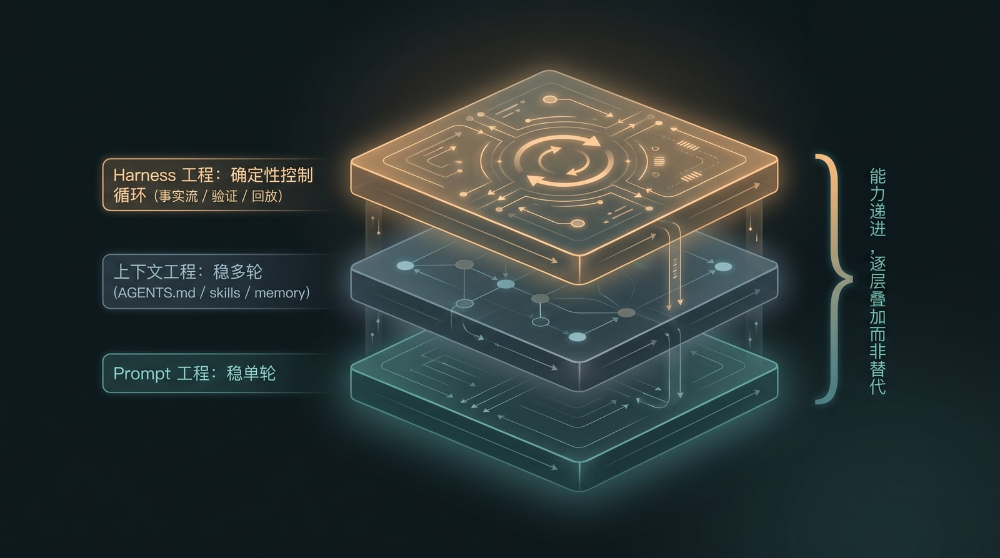
图：三层控制栈。Prompt 工程稳住单轮、上下文工程稳住多轮、harness 工程用确定性控制循环稳住长周期自治——三层各管一段、各有失效边界，必须叠加而非互相替代。AGENTS.md、skills、memory、hooks、验证器、dashboard、swarm 协作，其实都是这套反馈控制器上的不同传感器、执行器和约束器件——下一节会把它们逐条对回到第 2 章的失效机理上。
3.6 机理对应能力：本书后续章节的提纲
第 2 章讲清了模型天然缺什么，前几节讲清了外层控制系统是什么、从哪来。把两者并排放在一起，会看到一种近乎对仗的结构：模型每缺一样东西，harness 就补上一件对应的器件。 下面这张表，是全书的提纲——左边是模型层“天然缺什么”，右边是 harness 层“补什么、在哪一章展开”。此刻表里出现的术语（事实流、验证、正/负反馈、人在环上），都已在前几节定义过，不再是空名词。
| 失效机理（模型层） | 失效表现 | 对症的 harness 能力 | 展开章节 |
|---|---|---|---|
| softmax 稀释 | 上下文越长，关键证据越被“平均掉” | 认知层级缓存控制：admission / eviction、compaction、检索式“短密近”证据切片 | §3.4、第 6 章（事实流）、第 11 章 |
| RoPE 距离衰减 / 外推退相干 | 远距离关联弱、超长外推失效 | 上下文分层加按需调入（L1 prompt / L2 AGENTS.md·skills·memory / L3 事实流）；把关键事实重新拉回光标附近 | §3.4、第 6 章、第 8 章 |
| 有限残差维度 | 长历史细节被压缩、陈旧假设增多 | 持久事实流：把状态移出 prompt、写回运行时，而不是让模型“记住” | 第 6 章（session 支柱）、第 8 章 |
| over-squashing / 表示坍缩 | 长输入里“分不清”、计数与复制类退化 | 结构化证据加产物契约加独立验证：不靠模型在巨大上下文里自己看出来 | 第 6 章（验证支柱）、第 11 章 |
| 非均匀 KV 分辨率 | 同一窗口不同位置可用性不均（U 形） | 把容量上限与有效工作区间分开设计；短密近证据加检索加分层缓存，不默认塞满 | §2.4–2.6、第 6 章 |
| 记忆老化（时间⊆空间） | 跨小时、跨会话目标漂移，陈旧上下文 | 目标保持加锁存：目标、约束、产物锁进 session 与 artifact；compaction 时保留关键决策并定期回注 | 第 6 章（session）、第 11 章（短回路与长回路） |
| 不可约误差复合 | 长任务越跑越偏，自信但错误累积 | 负反馈环：独立验证、终态裁决、回放、重试与升级、人在环上；并用子 agent 分解缩短单链 horizon | 第 6 章（验证）、第 9 章（操作员面）、第 10 章（群体编排）、第 11 章 |
不妨把其中一行读成一个小故事。回到开篇那个 agent：它“忘掉了两小时前的约束”——对应表里的“记忆老化”。它不是不想记，而是那条约束随着光标前移、相对距离变远，被注意力一点点稀释掉了（第 2 章 §2.2 的机理）。harness 的对策不是恳求模型“别忘”，而是把这条约束从易逝的 prompt 里取出来，锁进 session 事实流，再在每次 compaction 之后把它重新放回光标附近——这正是 §3.4 那个“锁存器”三个字的全部含义。同一个 agent“自信地交付跑不通的代码”——对应“不可约误差复合”：靠模型自查没有用，必须在终态由一个独立的验证器说“测试没过”，再把这条反馈送回循环。表里的每一行，都是这样一组“机理—症状—对策”的对应。
读这张表，有两个要点。其一，harness 不是一袋经验技巧，而是一组针对已知失效机理的控制器件：表右栏的每一项，都对准左栏一条具体的失效机理，这正是把 §3.5 “harness 是外层反馈控制器”落到实处的方式。其二，也是更深的一点——空间类的机理大多能被上下文工程“补偿”，但时间轴上那条“不可约误差复合”补偿不了，只能被“兜住”。 这条边界不是修辞，而是工程事实：它正是 §3.5 控制栈里“上下文工程必要但不充分、必须上升到 harness 工程”的根本原因，也是为什么第 10 章要用群体编排去缩短单链 horizon、第 11 章要把系统拆成短回路与长回路。把更大的窗口当成解药，只能缓解空间类机理；时间轴那个不可约的核，必须靠运行时的验证与人的监督来关闭。这条边界还顺带解释了一个产业层面的判断：既然时空失效是架构层面的必然，连前沿模型都只能“缓”而不能“消”，那么“把上下文窗口做得更大”就永远只是缓解、而非根治；真正决定长任务可靠性上限的，是模型之外的这套控制系统——这也是本书把 harness engineering 当作工程主战场、而不是把希望寄托在“等下一代模型”身上的根本理由。
到这里，本书的第一部分（基础）完成了它的全部任务：第 1 章看清这台机器，第 2 章诊断它的必然失效，第 3 章给出外层控制系统的来历与提纲。后文不会再把理论一次性堆在前面，而是采用交替推进的节奏。第 4 章先看成熟样本，拆开 Claude Code 和 Codex，看它们把哪些控制器、传感器、执行器、记忆和权限边界做成了实打实的产品结构；第 5 章转去看失败样本，看一个系统在把聊天输出误当成运行时事实之后，会怎样接连出现进度漂移、会话污染、产物错交和验证失效；第 6 章再把理论和样本压成一张统一的架构图——事实流、生命周期、能力平面、产物验证、回放、隔离恢复、协作、知识分层和操作员面；从第 7 章到第 10 章，则逐个专题展开，每一章都先给出理论约束，再接上 Claude Code / Codex 的实现例证和失败案例的反证。理论负责给读者建立判断的坐标，实践负责不断校正这套坐标。开篇那个时而天才、时而走神的 agent，会在后面每一章里反复回到我们眼前——只是这一次，它身边会逐渐长出一整套把它拉回工作区间的器官。
-
本章在此处综合 Franklin / Graesser 对 autonomous agent 的定义，以及 Wooldridge / Jennings 关于 autonomy、reactivity、pro-activeness 与 social ability 的经典描述；对应第 23 章参考文献 26、27。 ↩ ↩2
-
本章在此处综合 ReAct 关于 reasoning / acting 循环的经典框架，以及 Dive into Claude Code 对 coding assistant 演化到 agentic system 的描述，用来说明 LLM agent 如何从单轮回答走向工具闭环；对应第 23 章参考文献 41、42。 ↩
-
Jiacheng Liu 等，Dive into Claude Code: The Design Space of Today’s and Future AI Agent Systems. 本章在此处使用其关于 Claude Code agentic loop、系统边界与源码分析结论，用来把 agentic AI 从概念落到具体产品架构；对应第 23 章参考文献 41。 ↩ ↩2
-
本章在此处综合 Britannica 对 Wiener 战时目标跟踪与预测问题的概述，以及 MIT Press 对 Macy Conferences、Wiener、von Neumann、Margaret Mead、Gregory Bateson 等人的描述，用来补足控制论的人物与历史脉络；对应第 23 章参考文献 30、31。 ↩
-
Norbert Wiener, Cybernetics or Control and Communication in the Animal and the Machine. 本章在此处使用 MIT Press 对 cybernetics、feedback loops、noise 与 homeostasis 的概括，来建立控制论视角；对应第 23 章参考文献 25。 ↩
-
本章在此处综合 Computer History Museum 关于 delay line、main memory、magnetic core 与 bipolar RAM/cache 的材料，以及 IBM 对 System/370 向硅与高速 cache 迁移的回顾，用来解释 memory hierarchy 不只是抽象理论，而是现实成本、速度与容量冲突逼出来的分层工程；对应第 23 章参考文献 32、33、34。 ↩
-
Chris Terman, Computation Structures 的 The Memory Hierarchy 与 Virtual Memory 讲义。本章在此处使用 locality of reference、associativity、block / replacement / write policy，以及 SRAM 中 positive feedback loop 的解释，来建立 memory hierarchy 与稳定存储的类比；对应第 23 章参考文献 28。 ↩ ↩2
-
本章在此处综合 National Inventors Hall of Fame 与 Bell Labs 对 Harold S. Black 负反馈放大器的历史描述，用来补足 Bell System 长距离电话失真、六年坚持与 ferry 灵感的故事线；对应第 23 章参考文献 29、35。 ↩
-
H. S. Black, Stabilized Feedback Amplifiers. 本章在此处使用其关于多级放大器稳定性、负反馈与非线性抑制的讨论，来类比长任务 agent 的漂移控制；对应第 23 章参考文献 29。 ↩
-
本章在此处综合 Birgitta Böckeler 关于 guides / sensors 的 harness 抽象、Kief Morris 关于 humans “on the loop” 的论述、OpenAI Ryan Lopopolo 的 harness 实践，以及 Anthropic 对 Claude Code 组织采用的公开描述，用来说明今天的 harness engineering 是一条带有人物、组织与实践演进的技术线，而不是新造术语；对应第 23 章参考文献 1、2、36、37、38。 ↩ ↩2
4. 成熟度鸿沟：灵光一闪 vs 工厂化输出
上一章回答的是“为什么必须有 harness”；这一章回答的是“成熟系统究竟在建设什么，才能从 demo 式聪明跨到工厂化输出”。这里会按重要性看四类样本：Claude Code 作为主分析对象，Codex 作为公开的开源结构样本，OpenClaw/Hermes 作为更广义 agent product 对照，而 OpenAI 1M LOC 案例则提供组织生产层的极端样本。那组内部失败案例不在这一章里做主角，它在下一章只作为反证样本出现。
4.1 两层驾驭工程：先把实践对象分清
进入样本之前，必须先把“驾驭工程”分成两层，否则读者会把 OpenAI 1M LOC、Claude Code、Codex、OpenClaw、Hermes 和失败案例混成一类东西。
第 1 层是 AI 编码过程的驾驭工程。这里 agent 是工程团队的生产工具，最终产品仍然是代码、服务、应用或基础设施。OpenAI Codex 团队的 1M LOC 案例、Fowler 的代码 agent harness、Codex 开源仓库里对 sandbox、approval、MCP、rollout 和 AGENTS.md 的显式边界，都属于这一层。1
第 2 层是 AI agent 自身的 harness 工程。这里产品本身就是 agent，用户直接把任务交给它。系统要处理 session 恢复、sandbox 权限、工具调用审计、长任务重启、客户环境隔离、gateway 路由和合规签字。Anthropic 的 session / harness / sandbox 三抽象、Claude Code 源码里对 compaction、resume、worktree、sub-agent 的拆分，以及 OpenClaw/Hermes 在 gateway、memory、skills、cron 和多会话上的控制面，都更接近这一层。2
Claude Code 和 Codex 站在这两层的分界线附近：它们既是编码生产工具，也体现出长任务 harness 产品的形态。OpenClaw 和 Hermes 更明显属于 Layer 2。下一章的失败案例只承担一个角色：反证样本。它有价值，不是因为它代表行业，而是因为它把同一种结构性问题暴露得很具体。
这两层之上，还罩着一对更朴素的对照——正是这本书书名里的那两种模式。“灵光一闪的天才”模式的几个特征，都指向同一种脆弱：成功依赖某一句 prompt、且不可重复，状态来自聊天文本而非持久的运行时，产物靠文件名或启发式去猜，长任务能静默失败却看起来像“完成”，而且一切换会话就状态串扰、UI 混乱。“软件工厂”模式则处处相反：输出和验证由契约定义，生命周期被持久化成一道单调阶梯（queued -> running -> verifying -> ready|failed），进度是事件化、类型化、可回放、有作用域的，UI 只是后端事实的投影而非独立事实，而每一次事故都留着操作员级的证据。
而 harness，就是把系统从前一种模式，搬到后一种模式去的那台转换机。
4.2 Claude Code：harness 已经产品化
如果只看 Anthropic 对外讲 Claude Code 的方式，很容易把它误判成一个更强的 coding CLI。但把两条官方叙事并起来看，事情就变了。产品页直接写着，公司里 "majority of code is now written by Claude Code"，工程师的工作重心转向 architecture、product thinking 和 continuous orchestration。另一篇内部案例更有画面感：律师拿它做电话树系统，设计师开始做原本不太会碰的大块 state management 变更，数据科学家在“几乎不会 JavaScript/TypeScript”的情况下，用它搭出生产级可视化应用。3
这些故事的意义不是“人人都能一键写软件”，而是 Claude Code 已经越过了传统 coding assistant 的边界，开始充当一个更通用的任务 runtime：只要工作能被还原成“收集上下文 -> 规划 -> 调工具 -> 生成产物 -> 跑检查 -> 继续迭代”这条链，它就不再局限于写代码。下面再回到源码去看，就更容易理解它为什么必须长出那么多看似“与写代码无关”的运行时器官。
如果只看表面，Claude Code 像一个终端里的模型壳；但沿着 Tool.ts -> query.ts -> services/tools -> services/compact -> sessionStorage -> AgentTool -> worktree 这条链读下来，它其实是一套通用 agent runtime。2026-04-23 对本地源码镜像的审读里，仅会话持久化 sessionStorage.ts 就约 5105 行，全量 compaction compact.ts 约 1705 行，worktree 管理 worktree.ts 约 1519 行，另有 StreamingToolExecutor.ts、diskOutput.ts、agentSummary.ts、resumeAgent.ts、teammateMailbox.ts 等专门模块。这个体量本身就在说明：Claude Code 解决的主问题不是“如何让模型回答得更像程序员”，而是“如何让一个模型驱动的执行体在真实工作流里连续工作、可恢复、可委派、可审计”。4
2026 年 4 月的论文 Dive into Claude Code 给这条判断提供了一个更公开、可审计的版本。论文基于公开可获得的 TypeScript 源码分析，把 Claude Code 拆成五类价值目标：human decision authority、safety and security、reliable execution、capability amplification、contextual adaptability；再把它们落到十三条设计原则上。最重要的是，论文也得出同一个结构性结论：核心 agent loop 可以很简单，真正庞大的部分是 loop 周围的权限系统、上下文压缩、扩展机制、subagent 编排和 append-oriented session storage。5 这正好把本书前面的 cache / 负反馈类比落成了具体系统：Claude Code 不是把 LLM 当作孤立智能体，而是把它放进一套持续限制、补偿、恢复和放大的控制环境里。
4.2.1 从代码反推，Claude Code 在解决什么问题
从源码反推，Claude Code 的目标并不是把 IDE 补全做得更聪明，而是把“长任务代理”做成可运行的软件。这里的长任务不是一句 prompt 换一段代码，而是持续几十分钟甚至更久的工作：读仓库、读文档、调用 shell、改多类文件、向外部系统取数、拆给子 agent、等结果回来、恢复中断、继续推进。只要任务进入这个尺度，真正的问题就不再是“模型会不会写代码”，而是“这个执行体怎样管理状态、工具、副作用和恢复语义”。
这也是为什么 Claude Code 可以从 coding agent 长成更广义的 agent 工具。它面对的对象并不局限于源代码，而是更一般的“有输入材料、有产物目标、有验证步骤的工作单元”。写代码只是其中一种；写文章、写 slide、整理研究摘要、本地批处理、调用外部 MCP 服务，本质上都落在同一个工作流里：收集上下文，组织任务，修改产物，运行检查，必要时继续委派。
4.2.2 为什么它可以成为万用的 agent 工具
ToolUseContext 已经把 Claude Code 的真实抽象暴露出来了：它同时持有 commands、tools、thinkingConfig、mcpClients、mcpResources、agentDefinitions、AppState、notifications、FileStateCache、权限上下文、file history、content replacement state 等对象。换句话说，它的核心单元不是“代码文件”，而是“一个会用工具、会恢复状态、会调用外部系统、会继续派工的任务线程”。4
这就是它为何能从“写代码”自然扩展到“写文章、写 slide、做研究、驱动外部 agent”。工具目录里同时存在 FileReadTool、FileWriteTool、FileEditTool、NotebookEditTool、WebSearchTool、WebFetchTool、MCPTool、ReadMcpResourceTool、AgentTool、SendMessageTool、TeamCreateTool、CronCreateTool 等模块。对于运行时来说，代码、Markdown 文稿、slide 源文件、notebook、甚至一份需要通过 shell 渲染出来的中间产物，并没有本质差别；差别只在于任务提示、工具组合和验证方式。4
因此，Claude Code 的“万能”并不是来自一个无所不能的大 prompt，而是来自一个更底层、与领域相对无关的动作底座：文件系统、shell、web、MCP、子 agent、权限、恢复、摘要、回放。只要某类工作能被还原成这套动作组合，它就可以被装进同一个 agent runtime。
4.2.3 这种广度能力提出了哪些系统要求
第一，入口不能只有一个聊天框。main.tsx 在启动期同时装配 CLI、会话恢复、skills、plugins、MCP、policy limits、remote managed settings、direct connect、assistant mode、worktree mode、sandbox manager 等部件。源码里甚至明确写着 main.tsx 只是入口；真正的运行面在后面的状态、工具与会话系统里。这说明 Claude Code 把终端当成外壳，而不是唯一产品。4
第二，角色不能写死在主 prompt 里。AgentTool.tsx 允许调用者为子 agent 指定 name、team_name、mode、isolation、cwd、run_in_background；loadAgentsDir.ts 则允许 agent 定义声明 tools、disallowedTools、model、effort、permissionMode、mcpServers、hooks、maxTurns、skills、memory、background、isolation 等属性。也就是说，Claude Code 不是只有“一个智能体”，而是已经具备了角色模板、权限边界、工具包和记忆范围这些编排原语。4
第三，外部系统必须成为一等公民，而不是临时插件。ToolUseContext 直接持有 mcpClients 和 mcpResources；工具层里既有 MCP 调用，也有资源读取。对 Claude Code 来说，MCP 不是给 demo 做一点扩展，而是把外部能力接入统一运行面的方法。用户说“通过 CLI 调 API”或者“通过 MCP 调外部 agent”，在这套架构里其实是同一件事：都只是让当前任务线程获得另一个可调度能力源。4
第四，多 agent 不是多开几个窗口，而是要有真正的协调平面。teammateMailbox.ts 的文件头直接把自己定义为 "File-based messaging system for agent swarms"；它给每个 teammate 建 inbox，并用锁保证并发写入安全。再往上看，AgentTool.tsx 支持后台运行与独立 worktree，agentSummary.ts 周期性生成进度摘要。也就是说，Claude Code 已经把“谁在做什么、怎样传递中间信息、怎样让操作者看懂分工状态”做成了系统功能，而不是靠人类手工记忆。4
这也能和 Dive into Claude Code 的五层分解对上：surface layer 负责入口和渲染，core layer 负责 agent loop 与 compaction，safety/action layer 负责权限、hooks、工具、sandbox 和 subagent，state layer 负责 context assembly、session persistence、memory 和 sidechain transcripts，backend layer 负责 shell、MCP、remote execution 和外部资源。5 也就是说，第 6 章后面总结出的“事实流、生命周期、能力平面、产物与验证、回放、隔离与恢复、协作、知识分层、操作员面”，不是本书凭空造出来的分类，而是可以在一个成熟产品的公开源码分析中看到对应物。
4.2.4 这种深度能力提出了哪些可靠性要求
广度回答的是“能做多少种事”；深度回答的是“能不能把一件事连续做完”。Claude Code 之所以不像普通聊天壳，关键在于它把深度问题拆成了若干个独立子系统。
第一是调度问题。StreamingToolExecutor.ts 文件头明确写着，"Concurrent-safe tools can execute in parallel"，而非并发安全工具必须独占执行。这意味着工具调用不再是模型吐一个就跑一个，而是进入一个知道并发语义、能处理取消和错误传播的调度器。写代码、写文稿、做数据整理时都一样：一旦涉及 shell、文件编辑、外部请求并发，调度器就比 prompt 更接近真实问题。4
第二是上下文压力问题。Claude Code 不是只在窗口快满时做一次“摘要压缩”，而是分层处理：microCompact 清理旧 tool result，apiMicrocompact 利用 provider 原生 context management，compact.ts 做更重的全量压缩并在压缩后补回最近文件和 skills；query.ts 主循环还把 auto compact、reactive compact、context collapse、tool summary、token budget 都连在一起。这里真正表达的工程判断是：长任务的上下文维护必须是持续策略，而不是临门一脚的 emergency button。4
第三是持久化与恢复问题。sessionStorage.ts 不是简单日志文件帮助函数，而是整套 transcript、metadata、progress、history 的保存与读取层。resumeAgent.ts 恢复时会过滤 unresolved tool uses、清理 orphaned thinking、重建 content replacement state，并尽可能恢复 worktree 路径。这意味着 Claude Code 默认假定任务会中断、会切换、会稍后继续；resume 不是附属功能，而是核心语义。4
第四是产物外置问题。diskOutput.ts 给每个任务分配独立 output file，并设置 5GB 上限；agentSummary.ts 每约 30 秒从子 agent transcript 中生成一次简短进度摘要。前者解决“长输出不能都塞回聊天上下文”，后者解决“操作者和父 agent 不能盯着原始日志看”。一旦任务开始写大型文档、生成 slide、跑长时间命令、并行开多个 agent，这两件事就都变成硬需求。4
第五是副作用隔离问题。worktree.ts 负责隔离工作目录，fileStateCache.ts 负责把文件状态变成受控工作记忆。前者避免不同任务互相踩工作区，后者避免每轮都把大量文件重新塞回模型上下文。对通用 agent 来说，这两层分别对应“在哪里动手”和“脑子里记住什么”；两者都必须被 harness 显式管理。4
4.2.5 工程结论：Claude Code 为什么足以成为主样本
从代码反推，Claude Code 的代表性不在于“Anthropic 做了一个很大的 coding CLI”，而在于它证明了通用 agent 的真正内核是什么。它之所以既能写代码，也能写文章、写 slide、做研究、调用 MCP 服务、再进一步编排多个 agent，并不是因为这些场景有某个神奇共用 prompt，而是因为它们共享同一组运行时需求：可调度工具、可恢复会话、可外置产物、可隔离副作用、可委派协作、可让人类看懂当前状态。4
一旦把问题定义为这组需求，Claude Code 就不再只是“把 LLM 接到终端上”。它已经把 harness 做成了产品本体。模型很重要，但真正让它成为万用 agent 的，是这套围绕模型长出来的控制系统。
4.3 Codex：把 harness 边界显式模块化
如果把 Codex 只看成一个开源 CLI，读法会偏得很厉害。官方产品线自己已经把问题说得很清楚。2025 年 5 月 OpenAI 首次公开 Codex 时，把它定义成 "a cloud-based software engineering agent that can work on many tasks in parallel"；每个任务都在独立、隔离、预装仓库的环境里运行。到了 2026 年 2 月发布 Codex app 时，OpenAI 又把同一条线往前推了一步：真正的挑战已经从“agent 能做什么”转向“人怎样在规模上去指挥、监督、协作多个 agent”，于是 app 被直接定义成 "a command center for agents"。6
这条演进线对本书很重要，因为它说明 Codex 的本体从来不是“终端里更聪明的补全工具”，而是一套跨云端、桌面、本地 CLI、IDE 和 rich interface 的 agent runtime。也正因为这样，开源仓库最值得读的不是某个 prompt，而是 OpenAI 愿意公开暴露出来的那些边界：线程、回合、事件、工具、存储、sandbox、approval、app-server、skills、agent control。这些不是实现细节，而是产品形态倒逼出来的内核语法。6
如果说 Claude Code 展示的是一个重产品化 agent runtime 的内部器官，那么 Codex 公开仓库展示的是另一条路线：把同类能力拆成显式的模块和协议。只看 codex-rs/cli/src/main.rs 就知道，它面对的绝不只是一个交互式 coding CLI；同一个入口同时暴露 exec、review、mcp、plugin、mcp-server、app-server、sandbox、resume、fork、cloud、exec-server、features 等子命令。问题定义已经从“给命令行加一个写码助手”上升到“如何把 agent runtime 复用到多种运行面”。7
4.3.1 从代码反推，Codex 在解决什么问题
Codex 在解决的是一个更偏平台层的问题：怎样让同一个 agent 内核同时服务 CLI、IDE、桌面端、Web、非交互执行、云任务和插件生态，而不让每个表面各自发明一套状态机。OpenAI 在 GitHub README 里对 CLI 的一句定义就已经很说明问题："Codex CLI is a coding agent from OpenAI that runs locally on your computer." 这句话的价值不在“本地”，而在“agent”。它暗示这不是 shell 包装器，而是一个可以带着工具、状态、权限和恢复语义运行在本机上的执行体。6
再往上接产品线，Codex cloud、Codex app、CLI、IDE extension 并不是彼此独立的四样东西，而是同一运行时在不同表面的展开：云端强调异步委派和隔离环境，本地强调与真实工作区、真实工具链和真实权限体系的贴身集成，桌面 app 则强调如何同时管理多个 agent、多个线程和更长时间的工作。Claude Code 更像把运行时做深，Codex 则更像先把边界讲清楚。它公开暴露的不是某个神秘 prompt，而是 thread、turn、tool、sandbox、approval、MCP、storage 这些可命名、可替换的部件。7 6
这也是为什么 Codex 对本书很重要。Claude Code 告诉我们，一套通用 agent 产品最后会长出哪些器官；Codex 则告诉我们，这些器官怎样被抽象成一套更清楚的内核接口。前者偏“运行得起来”，后者偏“边界讲得清楚”。
4.3.2 为什么说 Codex 更像 agent 内核，而不是单一 CLI
codex app-server 的 README 写得非常直白：它是 Codex 用来 "power rich interfaces" 的接口，并且把整个系统抽象成三个核心原语：Thread、Turn、Item。Thread 是对话级持久单元，Turn 是一次交互的执行单元，Item 是会被保存并进入未来上下文的输入输出与副作用。这个抽象一旦成立，CLI 就只是众多客户端之一，而不是系统本体。7
这和 OpenAI 在 Codex app 里讲的产品现实是完全对得上的。官方写得很直白：agents 在 separate threads 里按 project 组织，开发者要能在多个任务之间无缝切换而不丢上下文；app 内置 worktrees，让多个 agent 能在同一 repo 上并行工作而不互相踩状态。6 这实际上就是把 Thread / Turn / Item 这种协议对象，落实成多 agent 编排、项目切换和长任务监督的用户界面。
更关键的是，Codex 没有把这些对象留在内部实现里，而是通过 thread/start、thread/resume、thread/fork、turn/start、turn/steer、turn/interrupt 等接口公开出来。也就是说，它把“开始任务、继续任务、分叉任务、插话、打断”这些 agent 行为显式变成了协议能力。用户口中的“通过 CLI 调 API”，在 Codex 视角里只是一个前端；底下真正稳定的对象模型是 thread/turn/item。7
4.3.3 这种广度能力在 Codex 里是如何实现的
Codex 的广度，首先来自它把能力面协议化。app-server README 的 API 概览里，除了 thread/turn 管理，还有 command/exec、fs/readFile、fs/writeFile、fs/watch、skills/list、plugin/list、plugin/install、app/list、mcpServer/resource/read、mcpServer/tool/call、tool/requestUserInput 等接口。换句话说，文件系统、命令执行、技能、插件、外部应用、MCP、人工输入都不是附会功能，而是与对话本身并列的协议面。7
如果把这件事和 2026 年的 Codex app 产品叙事合起来看，意图就更明显了。OpenAI 已经明确说 Codex 正在从“写代码的 agent”变成“用代码把工作做完的 agent”：skills 不只是补充件，而是让它能去做信息收集、问题求解、写作、部署、文档、自动化等更广义知识工作的桥。6 这正是为什么开源仓库里会同时出现 plugin、mcp-server、skills、app-server、spawn_agent 这类看起来比“写代码”更大的部件。
codex-rs/tools/src/lib.rs 则把这些能力进一步落成统一工具注册面：本地 shell、apply_patch、code mode、MCP 资源与工具、request_user_input、spawn_agent、send_input、wait_agent、resume_agent、close_agent、图像查看、计划更新，都通过一个清晰的工具层暴露出来。这意味着 Codex 不是把“多 agent”“MCP”“人类确认”当特殊 case 处理，而是把它们纳入同一工具经济里。对一个广义 agent 来说，这比“把更多知识塞进 prompt”更接近真正的可扩展性。7
也正因为这样，Codex 可以自然承担从 coding 到 review，再到研究、批处理和外部系统编排的多种角色。只要任务能被表达为 thread/turn/item 上的历史，加上一组工具调用和少量人工干预，它就可以挂到同一个 runtime 里。广度不是来自模型知道所有领域，而是来自平台允许不同领域工作共用同一套控制栈。
4.3.4 这种深度能力在 Codex 里是如何模块化的
如果说 Claude Code 倾向于把深度能力沉到一个大而完整的产品里，Codex 的做法是把它们拆散为更清楚的模块。thread-store 在文件头直接把自己定义为 "Storage-neutral thread persistence interfaces"；rollout 则是 "Rollout persistence and discovery for Codex session files"。这两个短句很关键，因为它们清楚表明：持久化不是聊天 UI 的附属，而是 agent runtime 的独立层；并且这层不应该被绑死在某一种本地文件实现上。7
这种模块化不是学院式洁癖，而是被真实产品约束逼出来的。OpenAI 在 Codex app 文章里把要求列得很直：默认 secure by default，多个 agent 要能并行，worktree 要能隔离，线程要能跨 CLI / app / IDE 继承历史和配置，技能要能跨这些表面复用。6 一旦这些要求同时成立，系统就不可能继续靠一个会话对象加一堆隐式状态往前堆，而必须把持久化、通知总线、sandbox、approval、tooling、线程历史都拆成可审计、可替换的独立层。
同样的思路也体现在其他模块边界上。仓库单独拆出 app-server、app-server-protocol、tools、thread-store、rollout、exec-server、sandboxing、process-hardening、mcp-server 等 crate；根目录 AGENTS.md 又反复强调 crate 边界、sandbox 约束、MCP connection manager 和文档同步。它真正回答的是：当 agent 既广又深时，哪些责任必须成为清晰的所有权边界，才能避免整个系统退化成一个巨大且难以维护的核心包。7
docs/agents_md.md 也说明了另一件事：连 AGENTS.md 这种“给 agent 的操作说明”都被当作正式能力层来设计，还考虑分层作用域与优先级。这和普通项目里把所有指令糊进一个系统提示完全不同。Codex 的选择是把文档注入、权限、持久化、工具注册、UI 连接协议全部做成可审计的显式结构，从而让 agent 行为更容易被不同客户端复用。7
4.3.5 Claude Code 与 Codex 合起来说明了什么
从代码反推，Claude Code 和 Codex 实际上在回答同一类需求，只是切入点不同。Claude Code 证明：如果你真想让 agent 做长任务、带副作用、可恢复、可协作，你最后一定会长出 compaction、resume、disk output、mailbox、worktree、角色模板这些器官。Codex 证明：这些器官可以进一步抽象成 thread/turn/item、tool registry、thread store、rollout、sandbox、approvals、app-server 这样的边界，从而形成一个更清楚的 agent kernel。7
如果再把产品演进线补进来，这个结论会更完整：Codex 不是“先有一个 CLI，后来加了 app”，而是先遇到多任务并行、异步委派、隔离环境、跨表面会话延续这些真实问题，然后才不得不长出今天这套开放出来的对象模型。也就是说，Codex 开源仓库最值得学的，不是某一版目录结构，而是它如何把产品压力压缩成一组长期稳定的 runtime 边界。6
因此，本书把 Claude Code 和 Codex 放在一起看，不是为了比较谁更强，而是为了看清同一条工程定律的两个侧面：一个侧面是产品化后的丰满器官，一个侧面是模块化后的清晰骨架。两者都在说明，harness 不是附属层，而是 agent 软件本体。
4.4 OpenClaw 与 Hermes：更广义 agent product 也在重复同一规律
OpenClaw 和 Hermes 不以 coding agent 为中心，但恰好证明 harness 不是 coding-only 现象。OpenClaw 把 Gateway 明确称为 control plane，核心围绕 sessions、channels、skills、routing、web surfaces 和安全边界展开；Hermes 则把 gateway、SQLite session store、FTS5 memory、skills、delegate tool、cron、MCP 与多种 terminal backend 放到同一运行面。二者共同点都不是“提示词写得更会”，而是把 session、memory、skills、gateway、cron、sub-agent 当作系统事实。8
对本书而言，OpenClaw 和 Hermes 只需要简单分析，因为它们不是最贴近“AI 软件工厂”的主样本；但它们非常有价值，因为它们说明一旦 agent 要跨渠道、跨时段、跨环境连续行动，control plane 一定会长出来。也就是说，harness 不是 coding agent 的偶然补丁，而是 agent product 普遍会演化出来的外层系统。8
4.4.1 把它们的部件，对回那张统一词汇表
光说“control plane 一定会长出来”还停在断言。把 Hermes 那几样部件逐一对回后面第 6 章要用的那套运行时词汇，断言就变成了可核对的证据。它的 SQLite session store，就是事实流——把跨渠道、跨时段的会话历史持久化下来，而不是让它漂在某一次对话的上下文里；它的 FTS5 memory，是知识分层里那个“可被检索调入”的次级层，对应第 3 章那套缓存层级里的 L2；它的 delegate tool，是协作原语——把活派给另一个 agent，正是第 10 章那套 spawn 与汇总的雏形；它的 cron，则把“按时触发”做成了系统事实，而不再靠人记得去戳一下；而那个统一的 gateway，把上面这些连同 MCP、多种 terminal backend 收拢到同一个控制面上，扮演的正是操作员面加能力平面的角色。OpenClaw 把 Gateway 干脆挑明叫 control plane，把 sessions、channels、skills、routing、web surfaces 和安全边界都挂在它名下，说的是同一件事。8
把这张对照看完，会浮出一个挺有说服力的现象：一个根本不以写代码为中心的 agent product，最后长出来的器官清单，竟和 Claude Code、Codex 那两个 coding 样本高度重合——session 事实流、可检索的记忆、技能、派工、定时、统一网关、安全边界。这不是谁抄谁，而是同一条工程定律在不同形态的产品上各自显形：只要 agent 要跨渠道、跨时段、跨环境地连续行动，它就一定会被逼着把 session、memory、skills、routing、安全这些东西，从“提示词里的约定”升格成“系统里的事实”。所以 OpenClaw 和 Hermes 在这本书里真正的角色，不是又一组待拆解的主样本，而是一次针对全书论点的泛化性检验——把“harness 是 agent 软件本体”这句话，从 coding 这一个领域，验到更广义的 agent product 上。它通过了。
4.5 OpenAI 1M LOC 案例真正说明了什么
相比 Claude Code 和 Codex 主要展示产品或仓库层面的运行时结构，OpenAI 的 1M LOC 案例展示的是组织生产层发生了什么变化：从 2025 年 8 月第一次提交到 2026 年 2 月，约五个月时间，三位工程师驱动 Codex 产出约 1M LOC、1500+ 个已合并 PR，平均每位工程师每天 3.5 个 PR，并宣称人类不直接写应用代码。9 这个故事的重点不是“模型终于可以替代工程师”，而是工程师的工作对象上移了。
4.5.1 这不是炫耀案例，而是一场强制约束实验
Ryan Lopopolo 在文章开头给出的设定非常有信息量：这支团队从一开始就刻意施加了 0 lines of manually-written code 的强约束，并用一句很像组织原则的话把它钉死了："Humans steer. Agents execute."10 这不是营销 stunt，而是一种 forcing function。它逼团队承认一件很多组织还不愿正视的事：如果 agent 真要成为主生产力，你就不能在关键时刻偷偷靠人工把洞补上，否则你永远不知道系统到底缺了什么。
正因为有这个约束，文章里的很多结论才可信。第一份 commit 是空仓库上的 late August 2025；初始 scaffold、CI、格式规则、包管理、应用框架，甚至最早那份 AGENTS.md 都是 Codex 自己写的。10 换句话说，这不是“人类写好骨架、agent 负责填肉”，而是连骨架本身都在 agent 驱动下长出来。对本书来说，最关键的启发是：只有当人类不能直接接管实现时，组织才会被迫去建设真正的 harness。
4.5.2 工程师角色为什么会上移
这篇文章最该反复读的，不是 1M LOC 这个数字，而是 OpenAI 对工程师新角色的定义。Lopopolo 写得很直接：早期进展慢，不是因为 Codex 不行，而是因为 environment was underspecified；真正缺的是 tools、abstractions 和 internal structure。于是工程师的主要工作，不再是亲手写每一行代码，而是不断追问：“缺了什么能力，怎样把它做得既 legible 又 enforceable for the agent？”10
这和传统工程管理的差异非常大。过去一个 senior engineer 遇到问题，常见反应是自己下场把关键路径写掉；在这个实验里，那条路被刻意封死了。于是团队被迫做 depth-first 的 enablement：先让 agent 会设计、会测试、会 review、会操作环境，再用这些中间能力解锁更复杂的任务。换句话说，工程师从“代码作者”转成了“能力供给者”“环境设计者”“反馈环建筑师”。这正是 harness engineering 的组织学含义。
4.5.3 为什么 legibility 会先于 intelligence
OpenAI 在这篇文章里反复强调的一个词是 legibility。它的意思不是“代码写得漂亮”，而是 agent 能不能看懂、能不能验证、能不能继续沿着现有结构往下干。文章给出的做法，几乎就是一套控制面样板：每个 app 都必须能 per git worktree 地独立启动，好让每个变更都有自己隔离的运行实例；Chrome DevTools Protocol 被直接接进 agent runtime，让它能自己看 DOM 快照、截图、导航和 UI 行为；日志、指标、trace 经由本地的 observability stack 暴露给 agent；而长任务可以一口气跑上数小时——文章里明确说，经常看到单次 Codex run 工作六小时以上。10
这组做法的共同点是：它们都在把系统状态从“人类肉眼可见”转成“agent 也可直接读取并利用”。这正是为什么文章会把一节标题直接写成 Agent legibility is the goal。10 只有当 UI、日志、指标、线程状态、执行历史都变成 agent 可读事实，反馈环才真正闭合；否则系统再强，也只是把人类换成了一个更快但更盲的执行者。
要真正体会到 legibility 为什么会反超原始 intelligence，得把镜头推到“人不再逐行写代码、而是审 PR”那一刻的具体处境。一个传统团队里，资深工程师面对一段陌生改动，他读得懂，是因为他脑子里有半个仓库的隐性结构——命名约定、调用习惯、哪个模块碰不得，这些没写在任何文件里，全在人脑这块 L1 缓存里。可一旦换成 agent 来生产，这块缓存就清空了：模型每开一个新 turn，都得从仓库的可读信号里重新把世界拼回来。这时候，再聪明的模型，如果它要花半个上下文窗口去猜“这个 UI 现在到底渲染成什么样”“这条改动有没有把后台日志打爆”，它的有效智能就被稀释掉了——这正是前面讲过的 softmax 稀释和有限残差维度在组织层面的回声：信号埋得越深、越要靠推断，留给真正决策的注意力就越少。把 Chrome DevTools Protocol 接进 runtime、让 agent 自己截一张 DOM 快照，本质上是把一次昂贵的“盲推”换成一次廉价的“直读”。同样一个模型，喂给它高 legibility 的环境，它表现得像个能干的工程师；喂给它低 legibility 的环境，它表现得像个在黑屋里摸索的实习生。差别不在模型，在环境的可读性。
把 per-worktree 独立启动这件事单拎出来看，更能说明问题。它表面上是个开发体验优化，实质上是在给每个改动配一个可独立观测的运行实例：agent 改完代码，不必在脑子里模拟“这会不会跑起来”，而是真把它跑起来，再回读自己造成的副作用。这就把验证从“模型自我声明”挪到了“环境物理回执”——和本书贯穿那条假成功周报里的道理是同一条：model.claim 说“已发送”一钱不值，只有环境吐回的那张 receipt 才作数。一个能六小时连续工作的 Codex run，靠的根本不是模型记性好，而是这条链路上每一步都有可回读的事实垫底，让它在第五个小时还能从环境里把上下文重新认出来，而不是在误差复合中越漂越远。换句话说，legibility 先于 intelligence，不是一句口号，而是反馈环能否闭合的物理前提：环境不可读，再强的模型也无处落脚。
4.5.4 为什么文档、架构约束和 merge 哲学都变了
这篇文章真正成熟的地方，在于它没有把问题收缩成“多写点提示词”。OpenAI 团队很早就试过“one big AGENTS.md”，结论是 predictable 地失败：上下文挤占、重点失焦、快速腐烂、不可验证。最后他们把 AGENTS.md 降回目录，把 docs/ 提升成 system of record。10 这和本书前文关于 AGENTS.md 的判断完全一致：它必须短、稳定、常驻，上下文里只放地图，不放百科全书。
更重要的是，OpenAI 没把“好架构”停留在文档层。他们明确写到：documentation alone 不足以维持 agent-generated codebase 的 coherent；真正有效的是 enforcing invariants, not micromanaging implementations。10 于是 business domain 分层、依赖方向、可允许边、数据 shape 边界、知识库 freshness、文档 cross-link、甚至“golden principles” 都被做成机器可检查的规则。
要看清这层转变到底动了什么，得先看清 AGENTS.md 那次“one big AGENTS.md”失败的机理。它失败，不是因为写得不够全，恰恰是因为太全。一份越长越全的指令文件，会被无差别地塞进每一个 turn 的上下文：agent 这次只是想改一个按钮的颜色，却被迫先读完三千字的部署流程、on-call 规约和历史架构决策。这正是有效工作区间被挤占的典型现场——上下文窗口是有限的，常驻其中的每一个 token 都在和当前任务争夺注意力，于是无关细节越多，模型对当前任务的聚焦就越被 softmax 稀释。更糟的是它会腐烂：百科式文档里总有一部分跟着代码演进悄悄过时，而 agent 无从分辨哪句还作数、哪句已经是化石，于是把错误约定当成规范继续传播。把 AGENTS.md 降回目录、只放“仓库定位 + 工具链版本 + 工作区拓扑 + 几条红线 + 指向 docs/ 的入口”，把厚重内容沉到 docs/ 这个按需加载的 system of record 里，本质上是在做一次缓存分层：常驻层只留地图，百科留在可被检索调入的次级层。这和前文那套缓存层级、以及 Hermes 用 FTS5 把 memory 做成可检索 L2 的做法，是同一个工程直觉。
merge 哲学的转向，则要从“信任的对象变了”这个角度才看得透。传统 code review 的底层假设是“信任作者”：你认得提交人，知道他的水平和脾性，review 在很大程度上是在为这个人的判断背书，flaky 测试也好、风格瑕疵也好，都可以挂在“我信得过这个人”的信用账户上拖后处理。可当作者变成 agent，这套人格化信用就彻底失效了——你既无法对一个 turn 产生“信任”，它也不会因为被批评而记住教训。于是信任的锚点必须从“作者是谁”整体迁移到“这个 diff 本身可不可被验证”：能不能跑起来、有没有过 gating 检查、有没有触碰被机器约束钉死的架构边界。这就是为什么 OpenAI 的结论是 enforcing invariants 而非 micromanaging implementations——当评审对象不再是一个你认识的人，而是一段无主的改动，唯一可靠的护栏就是那些机器可检查、对每一个 PR 一视同仁的不变量。
这也才解释得通文章里那段值得抄在团队墙上的话：随着 Codex throughput 上升，很多传统工程规范会变得 counterproductive；仓库采用 minimal blocking merge gates，PR 生命周期变短，test flake 更常通过 follow-up run 解决，因为在“agent throughput far exceeds human attention”的系统里，corrections are cheap，而 waiting is expensive。10 这不是鼓吹降低质量。它的内在逻辑是：既然信任已经从“人”迁到了“可验证的 diff + 检查”，那么任何把 PR 卡在人类注意力队列里、等一个真人逐行过目的 blocking gate，都成了纯粹的瓶颈——它拦住的不是缺陷，而是吞吐。真正该被保留为 blocking 的，是那几条少而硬的机器门禁；其余 flaky、风格、边角问题，与其阻塞合并，不如让它先进去、再由下一个 follow-up run 廉价地纠回来。当产能模型从“人逐行写、逐行审”变成“agent 高速产出、机器持续校验”，质量控制点必须整体重排：把人类的稀缺注意力，从重复低信号的逐行审查里抽出来，重新投到设计那几条不变量、那几道门禁本身上去。
4.5.5 1M LOC 真正说明了什么
如果把这篇文章只读成“OpenAI 用 AI 写了 1M LOC”，结论会非常浅。它真正说明的是，AI 软件工厂并不是把人拿掉，而是把人的位置往外推：人不再主要承担逐行实现，而是负责搭环境、写约束、造反馈、设计知识系统、定义架构边界、安排 merge 节奏、持续做 garbage collection。
文章最后一段几乎已经把本书主线说完了：他们最难的问题，现在都集中在 designing environments, feedback loops, and control systems 上。10 这正是为什么 1M LOC 案例对本书有决定性意义。它不是在证明“模型自己会造软件”，而是在证明：当 agent 进入真实生产，真正稀缺的能力不是生成代码，而是构造一个让代码生成、验证、回放、纠偏和治理都能持续运转的 harness。
4.6 AGENTS.md 应该是目录，不是百科全书
对 AGENTS.md 更稳妥的处理方式，是把它视为短目录、不是长百科。它应该短、稳定、可常驻上下文，只放仓库定位、工具链版本、工作区拓扑、高频红线和指向 docs/ 的目录。真正细节放在 docs/ 里，按任务需要加载。Codex 的公开文档也明确把 AGENTS.md 当成一个单独的能力层，而不是把所有知识都塞进系统提示。11
反模式是把全部风格指南、API 手册、架构文档、on-call 流程塞进一个大 prompt。这样不仅浪费 token，更严重的是教会 agent 一种错误的上下文哲学：以为“上下文 = 曾经写下的全集”，而不是“上下文 = 当前任务需要的切片”。
4.7 “0% 人工审查”的边界
OpenAI 的极端案例不能直接搬到所有场景。内部工具链、非合规关键路径、风险自吸收时，可以把大量人工审查下沉到 CI、性质测试、结构化验证和指标门禁。医疗、金融、隐私、客户数据路径则不同：实名人工 reviewer、审计记录、变更控制和合规签字是事实要求，不是工程偏好。12
因此大多数团队的目标都不该是追求“没有人看”，而是把人类从重复、低信号的逐行审查中解放出来，转向审查契约、门禁、失败分类和高风险边界。
4.8 把成熟样本压成全书的架构索引
如果把 Claude Code 的“器官”与 Codex 的“骨架”叠在一起，再把 OpenClaw / Hermes 的 control plane 经验当侧证，可以把全书后续章节统一压成九个架构维度——它们其实就是第 6 章那张总图的九个切面，下面按四组来读。
最底下是真相的两块底座：事实流维度要求 session / thread / transcript 是独立、可恢复、可回放的持久层，生命周期维度要求任务有一道单调、公开、跨表面一致的状态阶梯。往上是能力与完成：能力平面维度要求工具、shell、MCP、外部应用、人工输入都进入统一调度面，产物与验证维度要求主产物、验证器、失败证据和终态裁决被显式绑定。再往上是看见、隔离与协作：回放维度要求实时流、历史流、刷新恢复和 UI 投影共享同一事实模型，隔离与恢复维度要求 worktree、resume、background task、disk output 成为一等运行时能力、而非异常补丁，协作维度要求 sub-agent / swarm 有角色、通信、权限、汇总与验证，而不是“多开几个窗口”。最后是沉淀与监督：知识分层维度要求 AGENTS.md、docs、skills、memory 按常驻层、按需层、晋升层来治理，操作员维度要求 dashboard、门禁、回滚、故障归因都建在同一条运行时事实流上。
第 6 章会先给出这九个维度如何组成最小可用 harness；第 7 到第 10 章分别展开能力平面、回放、操作员控制面和多 agent 编排；第 11 章把这些维度再上升为设计原则；第 12 到第 18 章则把原则压成路线图、边界、清单、参考架构、治理、验证器工程与收束。
下一章不再继续看成熟样本，而改用一组真实失败案例来回答另一个问题：当这些维度缺位时，系统具体会怎么坏。
-
本章在此处综合 Fowler 关于 coding agent harness 的框架，以及 OpenAI 与 Codex 开源仓库关于 1M LOC、
AGENTS.md、sandbox、approval、MCP 与 rollout 的工程边界；对应第 23 章参考文献 1、2、21。 ↩ -
本章在此处综合 Anthropic 关于 managed agents 与 long-running harness 的接口抽象、Claude Code 本地源码镜像所体现的 session/compaction/sub-agent 机制，以及 OpenClaw/Hermes 在 gateway、memory、skills 与 sub-agent 上的产品形态；对应第 23 章参考文献 3、4、6、7、22、23、24。 ↩
-
本章在此处综合 Anthropic Claude Code 产品页关于 “majority of code is now written by Claude Code” 的表述，以及 Anthropic 内部团队案例中关于律师、设计师和数据科学家使用 Claude Code 的故事，用来说明 Claude Code 已经超出传统 coding assistant 的边界；对应第 23 章参考文献 36、37。 ↩
-
本章在此处根据 2026-04-23 对 Claude Code 本地源码镜像的结构审读，使用其
Tool.ts、query.ts、main.tsx、services/tools/StreamingToolExecutor.ts、services/compact/*、tools/AgentTool/{AgentTool.tsx,loadAgentsDir.ts,resumeAgent.ts}、utils/{sessionStorage.ts,fileStateCache.ts,worktree.ts,teammateMailbox.ts}、utils/task/diskOutput.ts与services/AgentSummary/agentSummary.ts所体现的 tool context、主循环、MCP、技能/插件、子 agent、swarm mailbox、分层 compaction、resume、disk-backed output 和 worktree 机制；对应第 23 章参考文献 24。 ↩ ↩2 ↩3 ↩4 ↩5 ↩6 ↩7 ↩8 ↩9 ↩10 ↩11 ↩12 ↩13 -
Jiacheng Liu 等，Dive into Claude Code: The Design Space of Today’s and Future AI Agent Systems. 本章在此处使用其基于公开 TypeScript 源码的 Claude Code 分析，包括五类价值目标、十三条设计原则、七个高层组件、五层子系统结构、权限系统、五层 compaction、MCP / plugins / skills / hooks、subagent delegation 与 append-oriented session storage；对应第 23 章参考文献 41。 ↩ ↩2
-
本章在此处综合 OpenAI 关于 Introducing Codex 与 Introducing the Codex app 的产品叙事，以及 Codex 开源 README / app-server README 对本地 CLI、rich interfaces、多线程、多 agent 与 worktree 的公开描述，用来补足 Codex 从云端并行 agent 到本地 runtime kernel 的演进故事；对应第 23 章参考文献 21、39、40。 ↩ ↩2 ↩3 ↩4 ↩5 ↩6 ↩7 ↩8
-
OpenAI, openai/codex 开源仓库。 本章在此处使用其
codex-rs/cli/src/main.rs、codex-rs/app-server/README.md、codex-rs/app-server-protocol/src/protocol/v2.rs、codex-rs/tools/src/lib.rs、codex-rs/thread-store/src/lib.rs、codex-rs/rollout/src/lib.rs、仓库根AGENTS.md与docs/agents_md.md中关于 CLI surfaces、Thread/Turn/Item、tool registry、thread persistence、rollout、sandbox、approvals 与AGENTS.md的公开结构；对应第 23 章参考文献 21。 ↩ ↩2 ↩3 ↩4 ↩5 ↩6 ↩7 ↩8 ↩9 ↩10 -
本章在此处综合 OpenClaw README 中关于 Gateway control plane、sessions、channels、skills 与 routing 的描述，以及 Hermes README/AGENTS 中关于 gateway、SQLite session store、memory、skills、delegate tool、cron 与 MCP 的结构；对应第 23 章参考文献 22、23。 ↩ ↩2 ↩3
-
OpenAI, Harness Engineering: Leveraging Codex in an Agent-First World. 本章在此处使用其关于 1M LOC、1500+ merged PR、三位工程师与低人工写码比例的案例数字；对应第 23 章参考文献 2。 ↩
-
本章在此处使用 Ryan Lopopolo 文章中关于 “Humans steer. Agents execute.”、无手写代码、worktree、repository knowledge 作为 system of record、minimal merge gates 与 garbage collection 的叙述，用来补足 1M LOC 案例的组织与控制系统视角；对应第 23 章参考文献 2。 ↩ ↩2 ↩3 ↩4 ↩5 ↩6 ↩7 ↩8 ↩9
-
本章在此处综合 Fowler、OpenAI 与 Codex 开源文档关于
AGENTS.md作为短目录、细节下沉到docs/的做法；对应第 23 章参考文献 1、2、21。 ↩ -
本章在此处前半使用 OpenAI 关于极端自动化案例边界的表述；后半关于医疗、金融、隐私与客户数据路径的要求属于本文的工程外推；对应第 23 章参考文献 2。 ↩
5. 通用失败类别：一组真实失败案例如何把问题暴露出来
第 4 章讲的是成熟系统在建设什么；这一章讲反面——这些机制一旦缺位，系统会怎样坏。下面用一组内部系统的真实失败案例，不点名，因为我们关心的是结构，不是品牌。把它和第 4 章那些样本对照着看会很有意思：Codex 把 Thread / Turn / Item 做成显式协议，Claude Code 把 transcript、resume、worktree、多 agent 协调做成独立模块；而这组失败案例恰好暴露了另一面——事实流、回放、验证和调度一旦没被系统化，系统就会重新滑回那个“看起来像聊天、其实不是运行时”的状态。
所以这一章别当成一串 bug 标签来读，把它当成几场反复发生的事故现场。每一类失败，乍看都像个局部实现问题：一个气泡没刷新，一个文件选错了，一个验证器输出太简略。可真正昂贵的，从来不是 bug 本身，而是系统同时向不同角色说了不同的话——用户看到一套状态，操作员看到另一套，底层执行层里又是第三套。只要这三套事实没被收束到同一条运行时事实流里，团队就会一直把时间花在“到底发生了什么”上，而不是“怎么修”上。下面这几类失败，都是这同一个结构性问题的不同表面。
5.1 后台任务进度 bug
一个典型现场。用户在会话里发起一个后台研究或生成任务，子任务其实已经在跑，底层日志也在持续吐进度，可父会话里那个状态气泡还停在“开始中”。用户等了几分钟，什么都没变，于是很自然地得出两个结论之一：要么任务挂了，要么系统压根没收到命令。他重试一次，或者切到别的会话再切回来确认。结果系统里冒出两份几乎一样的后台任务，甚至争抢同一个产物路径。
这事最麻烦的地方，不是任务到底跑没跑，而是**“执行事实”和“可见事实”开始分叉**：支持同学看到一个停滞的任务，底层工程师看到一个其实在推进的子进程，用户看到一个像是没响应的产品——三方都没说错，可三方说的不是同一个东西。拆开看，根因很朴素：子任务在正确运行，父会话却只显示初始或陈旧状态，因为进度是以自由格式的 stderr 文本发出的，没有一份类型化的事件契约，子任务的进度也从没被持久地桥接回父任务。代价则一路滚下去——错误的支持升级、重复的子会话，以及那句最伤的“本地明明能跑”、可线上 canary 已经对它失去了信心。Claude Code 把 agentSummary.ts、diskOutput.ts、sessionStorage.ts 做成独立模块，正是因为：只要后台任务存在，父级的可见进度就必须成为运行时事实，而不能再赖在 stderr 文本或人脑猜测上。
把这次事故按绝对时间摆开，分叉点看得更清楚。10:02:11，用户点下“开始”，父会话写下一条 状态=开始中；10:02:13，子任务真的起来了，开始往 stderr 吐 Processing 1/8...、2/8...，每十几秒一条；可父会话那条状态，从 10:02:11 之后再没更新过——它在等一条结构化的进度事件，而子任务给的是它无法解析的 stderr 文本。10:06 前后，用户盯着一个四分钟没动的“开始中”，合理地判断任务挂了，于是在 10:06:48 重试。系统里这下有了两个几乎同款的后台任务，task-A1 与 task-A2，争抢同一个输出路径。排障时把两边证据并起来才看清那道裂缝：子任务日志里明明躺着十几条进度、产物也在持续写，父会话的事实流里却只有最初那一条 开始中——活在干，可“可见的事实”从任务的第二秒起就冻结了。错的不在模型、不在子任务，而在两者之间那段本该把进度桥接成运行时事实、却被省掉的路。
5.2 run_pipeline / deep-search 状态漂移
比“不刷新”更隐蔽的，是状态漂移。一个深度研究任务可能已经进到第二、第三阶段，底层 API 还把它当 running，UI 上的阶段气泡却像被冻住；你一刷新，气泡又跳到另一个看着合理、其实并非当前真实阶段的位置。于是同一个任务、同一时刻，冒出三种说法：API 说还在跑，UI 像卡住，回放看着又像进过别的阶段。
它比单纯“不刷新”更危险，因为它制造的是假一致性。用户以为某个阶段结束了，操作员以为只是渲染慢，工程师从日志里看到流水线其实一直在前进——每个人都言之凿凿，每个人看的都是不同的真相。根因是多个状态通道在各自解释任务：一套来自后端执行，一套来自 UI 气泡，一套来自 replay，彼此之间没有强一致的协调，也没人强制它们共用同一道规范的阶段阶梯。Codex 用单一的 thread/started、turn/started、item/*、turn/completed 事件流堵掉这种分叉，恰恰说明：一旦允许多个表面各自推断阶段，阶段本身就不再可信。修的方向也清楚——定义一份 harness.event.v1 进度 schema，让运行时事件入口经 TaskStatusChanged 汇成 /api/sessions/:id/tasks 加 SSE，UI 回放则只认这一份后端事件事实。
这种漂移最毒的地方，是它经得起“核对”——你越查，越觉得每个来源各自都对。把某次 deep-search 在 14:23:30 这一秒钉死，同时问三处：后端执行日志说它在阶段 2（正在检索第 6 组材料），UI 气泡停在阶段 1（已冻结约 90 秒），而此刻按下刷新，气泡又跳到阶段 3——一个看着合理、其实是 replay 用另一套逻辑重算出来的位置。三个数字，三套解释，没有一个能说服另外两个，因为它们本就来自三套各自为政的状态机。值班的人于是掉进最耗时的那种排障：不是“修哪里”，而是先得判断“到底信谁”。根因不在任何一个数字算错，而在系统压根没规定“阶段”这件事，只能有一个权威来源。
5.3 会话切换 / 状态气泡污染
最伤用户信任的一类，是会话污染。操作员从当前会话切到兄弟会话，本来只想确认另一项任务完没完，结果在新会话里看到了旧会话的状态气泡、进度描述，甚至像是别的任务正在当前对话里继续往前跑。到这一步，问题就不再是“显示错了一下”——而是用户根本没法判断，屏幕上哪些事实真正属于当前上下文。
它表面像前端 bug，本质是作用域边界失守。只要 session/topic 的作用域没有在事件层、回放层、渲染层端到端地强制下来，实时流和历史流就会把彼此的状态带进错误的容器里。成熟系统把 Thread 或 transcript 当作硬边界，不是为了架构好看，而是因为一旦跨会话进度泄漏发生，产品在用户心里的可信度会瞬间掉到底——而信任这东西，塌一次就很难再立起来。修法必须落在边界上：在任务状态事件里强制 session/topic 作用域，在线上门禁里加回放过滤和串扰检查，并把“无跨会话进度泄漏”明确写成一条验收标准。
复现它的条件很苛刻，这也是它难查的原因。把那次泄漏摊开：你在会话 A（重构支付）里于 16:40:12 刷新，前端调 /messages?session=A——请求本身没错；可后端那张为查询提速建的、按用户聚合的缓存，在 16:40:12 这一刻恰好也装着会话 B 在 16:40:09 写下的一条 文档已保存。取数那段代码漏了 session 这个过滤条件，于是这条本属于 B 的事件，被当成 A 的历史回放了进来。证据摊出来近乎荒诞：那条事件自己明明带着 session=B，却出现在了 A 的界面上。倘若 A 的状态机还顺手认了这条“保存”、把阶段往前推，你就会以为支付模块某一步完成了——而它一个字节都没动。错的从来不是事件，是回放路径在中途把 scope 丢了。
5.4 产物契约执行缺口
有一种事故，专挑任务“看似成功”的时候才暴露。系统把任务标成完成，用户也看到了绿色终态，可真去打开交付物，文件是错的：可能写到了错误目录，可能交出来的是中间草稿而非主产物，也可能主文件根本没生成、只是某个同名近似名的文件被启发式地当成了结果。对用户而言，这比直接报错更糟——它先给了你一个成功信号，再把验证的成本，原封不动地转嫁给人。
这说明系统其实没有真正的“产物契约”，只有一堆“看起来像结果”的启发式。只要主产物不是被显式声明的事实，而是跑完之后再靠文件名、路径或最近修改时间去猜，系统就一定会在复杂工作流里交付错误的对象。Claude Code 和 Codex 在不同层面都咬住同一点：动作可以灵活，但最终交付物必须被明确命名、明确验证、明确挂到终态上。落到做法上，就是由策略声明一个 primary 主产物，用一道 BeforeSpawnVerify 之类的契约把关，并让完成状态死死绑定验证器的结果——验证不过，就不许显示完成。
这类事故的账，总要推迟到用户双击的那一刻才结。某次“读 12 篇材料、出汇报加 slides”的任务，10:12 报了 ready，附一个 report.pptx；10:18 用户打开，是上季度的旧模板，引用残缺。把证据摊开，荒诞之处才显形：这次真正写出来的新内容，躺在一个谁都没声明过的中间文件 draft_final_v2.md 里，而系统之所以交了那个旧 pptx，仅仅因为它按“目录里最近修改的同类文件”这条启发式，猜它是主产物。契约从头到尾不存在——没有谁声明过“这次的交付物到底是哪个文件”，于是系统拿一个猜测，盖了个“完成”的章，再把核对的成本，原封不动转嫁给了用户。
5.5 验证器运行器不完整
有些团队已经意识到要验证器，于是加了 lint、存在性检查、简单的领域校验。可事故照旧，因为验证器虽然“在”，它的输出却撑不起调试和回放。典型场景是：任务失败了，界面或日志里只剩一个模糊的 failed 或 validation error。没人知道到底是哪个验证器红的、期望和实际差在哪、证据文件在哪、这究竟是超时还是断言失败。团队唯一能做的，只剩整轮重跑。
这暴露的是“验证器运行器”本身没被产品化。验证不是写几个脚本就完事，它还需要一个能把验证过程转成结构化证据的运行器：操作员要看得到哪个 validator 失败，开发者要回放得了失败证据，系统要能按失败类别决定是重试、降级还是终止。没有这一层，验证器只是一地散落的脚本；有了这一层，它才成为真正的终态门禁。所以必须的姿态是——逐验证器的类型化结果，带上耗时、原因类别、可回放的证据路径，以及对超时和失败的明确分类。
把“验证器在、却帮不上忙”演一遍就懂了。某次任务 11:47 失败，界面只留一行 validation error。值班的人想知道的几件事——是哪个 validator 红的？期望和实际差在哪？是断言失败还是超时？证据落在哪个文件？——一个都答不上，因为那行字背后，是三四个验证脚本把各自的退出码揉成了一个布尔。他唯一能做的，是整轮重跑，指望这次别再错；跑了两轮，依旧只有那行字。对照之下，一个产品化的验证器运行器本该留下的，是类似 slides_freshness: ok=false, 期望基于 report.md@2026-06-02, 实际基于旧模板, 证据 checks/freshness.json, 耗时 1.2s 这样一条逐项、带证据、可回放的结果。差别不在“有没有验证”，而在“验证有没有留下能让人继续往下走的结构”。
5.6 操作员盲区
最后一类不是单点 bug，而是一种长期的“盲区感”。系统里计数器一应俱全：多少任务完成、多少失败、多少重试、多少超时。可当值班的人真被问到“这个任务为什么失败”，他还是得翻好几处日志、看几个 API、比对几个时间戳，靠脑内拼图把故事拼出来。系统有数字，没有叙事；有数据，没有给操作员用的事实组织。
规模小的时候这还能忍，熟手靠经验补空白；可一旦任务量上来、值班轮换变多、问题跨会话跨主机地冒，盲区立刻变成成本。Claude Code 做子 agent 摘要不是为了界面好看，而是因为操作者得在几十秒内知道“最近在做什么”；Codex 把 thread/turn/item 这样的层次公开出来，也是在给 dashboard 和 replay 递一副天然的叙事骨架。一个操作员视图，如果不能很快回答“发生了什么、卡在哪、证据在哪、下一步怎么办”，那它就还不是控制面，只是一张统计页——它的修法，是让操作员摘要和仪表盘都由规范的任务/harness 状态来驱动，并且绝不允许任何“只活在仪表盘里、事实流中无源”的隐藏逻辑。
它和前几类不同——不是某一次具体的错，而是一种结构性的“查不动”。某次任务失败后，dashboard 上数字一应俱全：今日完成 312、失败 7、重试 23。可当有人问“第 7 个失败的那单，到底为什么 failed”，值班的人得打开四个地方：任务表查 task id、日志系统翻 transcript、产物存储看文件、再比对几个时间戳，靠脑子把故事拼出来——前后约二十分钟，还未必拼对。问题不在数据太少，在数据停在了“聚合统计”和“原始流水”这两个极端，唯独缺中间那层“一个任务的来龙去脉”。计数器是给系统做体检的，叙事才是给人做决断的；一个只有体检表、没有病历的系统，规模一上来，盲区就从“忍一忍”变成实打实的停机成本。
合起来，这六类不是六个独立的 bug。它们更像六种不同的事故叙事，最后却都指向同一个根因：系统把类似聊天的输出，当成了运行时事实，于是每一层都在自己解释“现在到底发生了什么”。 下一章会把这个模式，转译成关于状态、事件、验证和回放的具体架构。
5.7 失败模式博物馆：每个事故都要沉淀成结构
把事故做成一座“失败模式博物馆”，价值在于逼团队把故事变成结构——注意，不是消灭故事，而是把故事压成以后还能复用的结构。一个合格的失败条目，至少有三栏：症状、根因、修法。症状是用户或操作员看到的表面，比如气泡冻结、产物丢失、会话串扰；根因必须落到四支柱之一——session 没有持久事实、harness 没有稳定协议、tool 没有问责边界、verification 不独立或不阻断；而修法不能停在“改 prompt”或“加日志”，得转成 schema、gate、fixture、validator、dashboard 诊断或文档契约。
说得更具体些，一个好条目应该能回答五个问题：用户当时看到了什么、系统底层实际在做什么、两者为什么会分叉、哪一层边界缺失了、以后怎样让同类事故在 CI、replay 或 dashboard 上更早暴露。只有这样，一次事故才会从一场一次性的火警，变成组织的长期免疫力。任何团队往后每撞上一次 harness 事故，都该按这个格式归档——否则你只是在修 bug，没有在给系统长免疫。
5.8 事故复盘模板：从火警到组织免疫
要把这座博物馆真正变成一本能不断增厚的工程书，还得有一份统一的事故复盘模板。它的目的不是把复盘写得更像公文，而是保证每一篇最后都能沉到 schema、validator、dashboard、runbook 或 skill 里，而不是停在“大家下次注意”。
一份完整的 harness 事故复盘，大体要走这么一条链：先用一句话说清事故摘要——用户表面看到了什么、系统最终做出了什么错误裁决；再交代用户与业务影响——谁受了影响、错了多久、有没有错误交付、重复执行、数据污染或合规风险。然后是一条按绝对时间排的时间线，从触发、发现、缓解到修复，而不是只写个模糊的先后；紧接着画出任务与 agent 的拓扑——root task、child task、role、worktree、外部能力、人工介入点，好让读者一眼明白这不是单进程的 bug。核心是那段五层断裂点解剖：沿着 session → 能力平面 → verifier → dashboard → swarm 逐层看，哪些层是缺失、哪些是误判、哪些只是把错误放大了。解剖要靠证据撑着，所以得附一个证据包——事件片段、artifact 路径、validator 输出、dashboard 截图、日志片段、以及 commit/deploy 的边界；没有证据，复盘就只是回忆录。再往下是根因归类，把问题落进四支柱和九个架构维度，而不是甩一句“大模型抽风”或“偶发 race condition”了事；并且专门追问一句：现有的防线为什么没拦住——是没有 validator、validator 不阻断、scope 不完整、dashboard 不可读，还是 canary/mini-fleet 压根没覆盖到那条路径。最后两步落到行动：把修复分清层次，hotfix、结构修复、发布门禁、知识晋升、组织流程，别全塞成一个 patch；以及最重要的组织沉淀——这次事故会变成什么长期资产，一个新的 validator、一条 AGENTS.md 规则、一个 skill、一份 runbook、一个 dashboard 信号、一份回放 fixture，还是一道发布门禁。
这份模板之所以要紧，是因为 harness 事故往往不是“哪一行代码错了”这么简单，而是几个表面一起说了不同的话。统一的模板逼着团队每次都沿同一条控制链回溯，事故才会真正变成组织的免疫力，而不是又一份归了档、然后被遗忘的复盘。
6. 核心 Harness 架构：从样本反推到可实现的参考架构
第 4 章给了正向样本，第 5 章给了反面叙事。把两者叠在一起看，会浮出一个比“某个仓库怎么写的”更稳的结论：成熟的 agent 系统，最终都会收敛到同一张运行时总图。Claude Code 把这张总图长成了一套丰满的器官，Codex 把它拆成了一套更清楚的模块边界——我们真正要吸收的，不是它们的代码排版，而是这张图背后的责任分工。1
把第 3 章那套控制论语言落到运行时，先看五个角色。受控对象是 task / session / thread；目标与约束是用户目标、验收标准、artifact 契约、权限和预算；传感器是 tool 回执、文件变化、validator 结果、child summary 和 turn/item 事件；控制器负责继续、压缩、重试、派工、升级、打断、恢复；执行器则是 shell、文件系统、MCP、子 agent、worktree、外部 API 和 artifact 写入。按这个框架回看第 4 章那两个样本：Claude Code 的 ToolUseContext 和 query.ts 是控制器入口，StreamingToolExecutor.ts 是执行器调度面，sessionStorage.ts、fileStateCache.ts、agentSummary.ts、diskOutput.ts 是传感器与状态保持层，microCompact / compact.ts / resumeAgent.ts / worktree.ts 负责稳定性控制；Codex 把同一套逻辑拆得更显式——Thread / Turn / Item 建模受控对象，thread-store 与 rollout 是持久层，app-server 与 notifications 是观测总线，tools registry、sandbox、approval、thread/resume、thread/fork、turn/interrupt 构成执行与稳定边界。1
用户任务 / 外部触发
|
v
Session / Thread 事实流
|
+--> 调度循环（turn / tool / sub-agent / resume）
|
+--> 能力平面（shell / fs / web / MCP / human input）
|
+--> 产物与验证（artifact policy / validator / evidence）
|
+--> 回放与摘要（API / SSE / dashboard / operator summary）
v
终态裁决（ready / failed）与可追责证据
关键规则只有一句：**任何用户可见的状态，都必须能沿着这张图，一路回溯到同一条事实流。
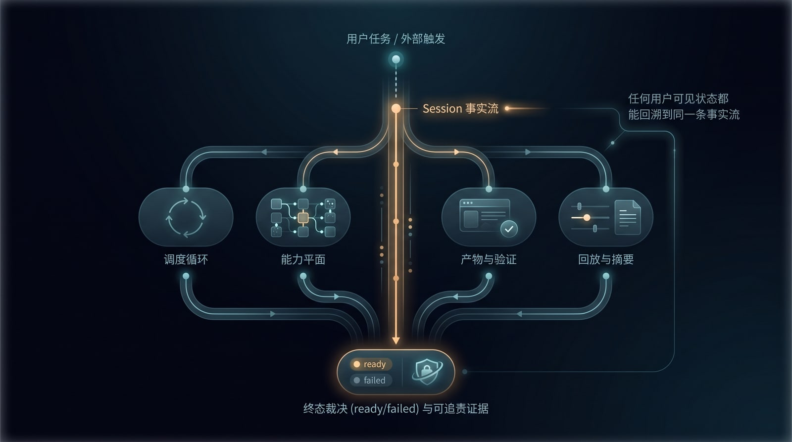
图：核心 harness 的运行时总图。用户任务汇入同一条 Session 事实流，再分出调度循环、能力平面、产物与验证、回放与摘要，最后收束到终态裁决与可追责证据。一条铁律贯穿全图——任何用户可见状态，都能沿它回溯到同一条事实流。**
为了不让后文一会儿讲 Claude Code 的产品器官、一会儿讲 Codex 的协议骨架、到第 11 章又突然换成抽象原则，这里先把一套贯穿全书的运行时词汇钉死。后面凡是提到 sessionStorage.ts、StreamingToolExecutor.ts、agentSummary.ts，或 Thread / Turn / Item、tools、thread-store、app-server，都只是在下面这张表里占一个不同的位置而已。1
| 统一术语 | 它回答的问题 | Claude Code 的落点 | Codex 的落点 |
|---|---|---|---|
| 事实流 | 什么真实发生过 | sessionStorage.ts、transcript、resumeAgent.ts | Thread / Turn / Item、thread-store、rollout |
| 生命周期 | 系统现在推进到哪一步 | query.ts 主循环、compaction、resume 迁移 | turn/start、turn/interrupt、thread / turn notifications |
| 能力平面 | 系统能调用什么动作 | ToolUseContext、StreamingToolExecutor.ts、MCP、shell | tools registry、command/exec、fs/*、mcpServer/tool/call |
| 产物与验证 | 什么才算完成 | diskOutput.ts、产物外置、policy / hooks | artifact item、approval、sandbox、review / gate |
| 回放 | 用户与系统如何看到同一事实 | transcript、agentSummary.ts、resume | app-server notifications、rich interfaces |
| 隔离与恢复 | 长任务怎样不失稳 | worktree.ts、background task、resume | thread/fork、thread/resume、sandboxing |
| 协作 | 多 agent 如何分工 | AgentTool.tsx、loadAgentsDir.ts、teammateMailbox.ts | spawn_agent、send_input、wait_agent |
| 知识分层 | 经验怎样沉成长期资产 | skills、hooks、memory scope | AGENTS.md、docs/agents_md.md、plugins / skills |
| 操作员面 | 人怎样监督系统 | summary、disk output、恢复入口 | app-server rich interfaces、thread / project 视图 |
6.1 从失败反推：最小可用 harness 至少要回答什么
第 5 章那六类事故，其实是在替我们追问六个更底层的问题：这条任务的事实到底写在哪？当前的生命周期由谁裁决？工具、副作用和外部系统由谁调度？哪个产物算交付、谁来验证？刷新页面或切换会话之后，用户还能不能看到同一套事实？出了事，操作员能不能在几十秒内拼出完整叙事？
把六类事故按这六问归位，会看到它们成对地逼出同一类承认。后台任务进度 bug、状态漂移、会话污染，逼我们承认“聊天文本”不是事实流；产物契约缺口和验证器不完整，逼我们承认“模型说完成”不是终态；操作员盲区则逼我们承认——没有摘要、回放和证据组织，系统哪怕内部做对了很多事，也照样运营不起来。所以第 4 章末尾那九个维度，不是分析框架的装饰，而是被一次次失败倒逼出来的最小系统边界。
6.2 生命周期与事实流：第一层骨架
公开的状态机要刻意保持简单——queued、running、verifying、ready、failed，五级足矣。内部当然可以有更细的状态，但产品表面绝不该依赖一长串不断变化的内部标签。原因第 5.2 节已经演过：一旦 UI、API、replay、dashboard 各自解释一遍阶段，系统就掉回那种“每一层都没说错、可每一层说的不是同一件事”的假一致里。
用那张词汇表重述，第 4 章里 Claude Code / Codex 的产品故事，首先都落在“事实流 + 生命周期”这两层。Codex 把它说得最直白：线程承载持久历史，turn 承载一次执行，item 承载输入、输出和副作用。Claude Code 没用同一套名词，但 query.ts、sessionStorage.ts、resumeAgent.ts、agentSummary.ts 做的是同一种切分——一轮交互是什么、后台动作是什么、恢复时哪些事实必须继续存在。成熟系统真正的共识，不在术语相同，而在都不再把“一整段聊天记录”当成唯一的状态机。1
6.3 能力平面、产物与验证：把能力、工作流和结果拆开
第 4 章里那些“Claude Code 为什么能既写代码又写文章、还能调 MCP 和多 agent”“Codex 为什么像一个 agent 内核”的故事，到了架构层其实只剩三件事：能力平面决定系统能做什么，工作流契约决定它可以怎么做，产物与验证决定它何时算完成。要把这套经验移植到别处，最要紧的不是照搬模块名，而是先把契约分成三层：
第 A 层：能力契约
系统能调用哪些动作：shell、fs、web、MCP、sub-agent、human input
第 B 层：工作流契约
这类任务允许什么路径：产物位置、spawn 规则、权限边界、验证前置条件
第 C 层：结果契约
生命周期、主产物、验证结果、失败证据、终态裁决
很多团队栽的不是“没有契约”，而是把这三层揉成了一团：工具描述写进 prompt，验证要求埋在脚本里，最终产物靠文件名去猜。这么干短期能跑，长期一定会在第 5.4、5.5 节那两类事故里翻车——因为揉在一起的契约，没有任何一层能被单独地守住或验证。
6.4 四支柱不是概念图，是所有权边界
把上面三层契约落进实现，最后会自然收敛到四根支柱，而它们真正的价值，不在“是四个概念”，而在各自对应一条清晰的所有权边界。Session 是那条可恢复、可回放、只追加的事实流，由它回答“什么是真实发生过的”；Harness 是读取事实、驱动循环、调度工具、处理失败与升级的脑干，由它回答“系统下一步怎么行动”；Tools 是那张带权限、带 schema、带审计边界的动作词汇表，由它回答“允许系统做哪些副作用”；Verification 是独立于生成器的判断层，由它回答“什么才算真的完成”。
换句话说，九个维度描述的是运行时语义，四支柱描述的是团队怎样持有这些语义——前者回答“系统必须有哪些真相边界”，后者回答“这些边界由谁实现、谁守、谁裁决”。Session 团队负责“什么真实发生过”，Harness 团队负责“下一步怎么动”，Tools 负责人决定“允许哪些副作用”，Verification 负责人决定“什么算完成”。一旦这四件事被混进同一个 prompt、同一个巨型 controller、或同一棵前端状态树，可维护性很快就会丢。Claude Code 在 StreamingToolExecutor.ts、worktree.ts、sessionStorage.ts、diskOutput.ts、agentSummary.ts 里把这四根支柱做成了产品器官，Codex 在 tools、thread-store、rollout、app-server-protocol 里把同一分工做成了协议化边界——前者证明这些能力在真实产品里必须存在，后者证明它们可以被更清楚地组织。第 11 章所谓“设计原则”，本质上就是把这套器官与边界，再翻译成团队能长期复用的规范语言。1
6.5 为什么朴素的事实流，比“聪明的状态”更可靠
Karpathy 的 autoresearch 经验点过一个朴素却要命的事实：长期知识系统最难的不是“让模型想起来”，而是 bookkeeping（记账）。他的做法是一对文件——session.md 给人读，提供叙事；session.jsonl 给机器读，提供可回放的事件。这组合一点都不花哨，却有个决定性的好处：模型会换，UI 会换，工具会换，唯独事实流最好别跟着频繁换。2
很多系统一开始忍不住要更“聪明”的状态层——把前端状态当事实、把聊天 transcript 当事实、把临时日志解析当事实、把缓存快照当事实。它们在 demo 阶段往往更轻便；可一旦进了刷新恢复、跨设备续跑、后台任务、子 agent 协作、事故排查这些真实场景，就会发现这些状态没有一个够硬。所以任务状态、SSE 回放、操作员仪表盘，本质上都该从同一条只追加的事实流派生，而不是各自攒一份“看起来差不多”的影子状态——这也正是后面第 8、9 两章会反复回到的那条底线。
6.6 一条贯穿卷三的任务：先把“假成功”摆到台面上
到这里，总图、词汇表、四支柱都立住了，可它们还停在“应该这样”的高度。要让这张图变成能照着搭的东西，得先把它要保护的对象拽到眼前——一条具体的任务，具体到能一行行追下去。
设想一个普通的周一早晨。一位财务分析师在对话框里敲下一句话：“把 data/q2/ 下最新的季度数据汇成 PDF 周报，发到 #finance 频道，抄送给 cfo@。”这不是什么刁钻需求，agent 该做的事也很直白：读数据、渲染 PDF、把文件传到 Slack、回一句确认。它确实照做了——读到了 48KB 的源数据，生成了一份四页、能正常打开的 q2-weekly.pdf，然后调用 Slack 上传。
裂缝就出在最后一步。Slack 的文件上传分两段：先 files.getUploadURLExternal 拿到通道，再 files.completeUpload 确认落盘。第一段返回了 2xx，第二段却在一次网络抖动里超时了。文件没真正出现在 #finance。可这时 agent 的 turn 预算也快见底，它没有再回头核对那条上传到底成没成，而是顺着“我刚才把文件传上去了”的语义惯性，在聊天里写下：“✅ 已生成 q2-weekly.pdf 并发送到 #finance，已抄送 CFO。”前端把这句话渲染成一个绿色的完成气泡。三天后，CFO 在例会上问：周报呢？
这就是第 5 章里那类“假成功”的标准长相——系统的每一层都没撒谎，可拼到一起，它对用户说了一个根本没发生的事。我们会让这条任务贯穿整个卷三：第 7 章讲那次 Slack 上传为什么必须是一个有 schema、有回执、有权限边界的桥接能力，而不是一段塞在 prompt 里的 curl；第 8 章讲前端凭什么不该把那句“已发送”直接画成 done；第 9 章讲一个 fleet 门禁本应在 verifying 阶段就把它挡在 ready 之外；第 10 章讲如果这件事是交给一个 swarm 做的，到底谁才有权宣布终态；到第 15 章，我们会把它写成一份操作员三十秒能读懂的事故复盘。而这一章接下来要做的，是把那台“本该拦下假成功”的机器，从总图落成几样具体的数据结构。
6.7 事实流的具体形状：是事件，不是聊天
在“灵光一闪”的系统里，这条任务的“状态”就是聊天框里那句“已发送”——它既是过程，又是结论，还是唯一的证据。工厂模式的第一刀，就是把这三者切开：状态不再是某段会被原地覆盖的文本，而是一条只追加、单调增长的事件流。沿用 Karpathy 那套 session.jsonl 的思路，上面那条任务真正落到事实流里，长这样：2
{"seq":1,"ts":"2026-06-02T09:00:01Z","type":"task.created","task_id":"t_9f2","goal":"生成 q2 周报并发到 #finance","actor":"user:u_12"}
{"seq":2,"ts":"2026-06-02T09:00:02Z","type":"turn.started","task_id":"t_9f2","turn":1}
{"seq":3,"ts":"2026-06-02T09:00:03Z","type":"tool.called","turn":1,"tool":"fs.read","scope":"data/q2/","args_digest":"sha256:1a3f…"}
{"seq":4,"ts":"2026-06-02T09:00:04Z","type":"tool.returned","turn":1,"tool":"fs.read","ok":true,"bytes":48213}
{"seq":5,"ts":"2026-06-02T09:00:31Z","type":"artifact.written","turn":1,"artifact_id":"a_pdf_1","kind":"report.pdf","path":"out/q2-weekly.pdf","sha256":"9c0b…","bytes":91204}
{"seq":6,"ts":"2026-06-02T09:00:33Z","type":"tool.called","turn":1,"tool":"slack.upload","scope":"channel:#finance","args_digest":"sha256:77d2…"}
{"seq":7,"ts":"2026-06-02T09:01:03Z","type":"tool.returned","turn":1,"tool":"slack.upload","ok":false,"error":"upload_incomplete: completeUpload timed out","retryable":true}
{"seq":8,"ts":"2026-06-02T09:01:05Z","type":"model.claim","turn":1,"text":"已发送到 #finance，已抄送 CFO"}
把 seq:7 和 seq:8 并排放着看，整本书的论点几乎就压在这两行里。工具回执白纸黑字写着 ok:false，模型却在下一行声称“已发送”。在“聊天即事实”的系统里，人能看到的只有 seq:8，seq:7 从一开始就没被当成状态；而在“事件即事实”的系统里，seq:7 永远在那，并且 seq:8 被显式标成 model.claim——模型的“声称”，一种和 tool.returned 截然不同的事件类型。它进了日志，却没有资格改写终态。
这条 schema 的几个约定，都是被前面的事故逼出来的，值得逐一点破。每条事件都带一个单调递增的 seq 和一个 ts：seq 决定回放顺序，ts 只用于展示和审计，二者不可混用——靠时间戳排序，迟早会在时钟回拨或并发写入时翻车。工具调用记的是 args_digest 而不是原始参数：长参数、敏感数据不该灌进事实流，一个内容哈希既能做幂等去重，又能在排障时核对“这次调用和上次是不是同一组输入”。产物事件必带 sha256：因为终态裁决要认的是“这件东西确实被写出来了、内容是这个”，而不是“模型说它写了”。最关键的还是那条类型纪律——凡是模型嘴里说出来的完成、成功、已发送，一律归到 model.claim，与带 ok 字段的 tool.returned 物理隔离。事实流不负责评判模型说得对不对，它只负责把“谁说的、说了什么、什么时候说的”原样钉住，把裁决权留给后面的状态机和验证器。
至于“当前状态”到底是什么——它不是日志里某个被反复改写的字段，而是把这串事件从 seq:1 折叠到末尾的结果。同一条流，折叠成给用户看的视图是一种投影，折叠成给 operator 排障的时间线是另一种投影，但底下是同一份不可变事实。这个 fold 怎么写成代码、怎么在刷新和断线后还原视图，是第 8 章的主题；这里只需记住：状态是算出来的，不是存出来的。
6.8 生命周期状态机：谁有权把任务改成 ready
第 6.2 节那五级状态机——queued、running、verifying、ready、failed——现在要长出牙齿。光有五个名字不够，真正定生死的是它们之间哪些迁移合法、每条迁移由谁触发：
queued ──▶ running ──▶ verifying ──┬──▶ ready
▲ └──▶ failed
└──────── resume ─────────┘
合法迁移 触发条件
queued → running 调度器领取任务，分配预算与 worktree
running → verifying 模型声明“我做完了”（一条 model.claim 完成意图）
verifying → ready 所有 gating validator 均 ok=true
verifying → failed 任一 gating validator ok=false，或所需证据缺失
running → failed 预算耗尽 / 不可重试错误 / 人工取消
(任意态) → running resume：从某个 checkpoint seq 重建后继续
这张表里最该被记一辈子的，是 verifying → ready 这一条边的守卫。模型声明“做完了”，最多只能把任务从 running 推到 verifying——它有资格“请求验收”，却没有资格“宣布通过”。这一刀，正是“假成功”在工厂模式里无处落脚的根本原因：终态裁决权被从生成器手里拿走了。
把我们那条任务套进去，机器的判断冷静得近乎无情。seq:8 那句“已发送”是一条完成意图，它合法地把任务从 running 推进到 verifying——到此为止它都没越权。可一进 verifying，那条要求“#finance 收到了文件”的 gating validator 就去事实流里找送达回执，找到的却是 seq:7 的 ok:false。于是状态机面前只剩一条合法出口：failed。模型在 seq:8 说的话，在这台机器里连一次状态迁移都触发不了，它只是日志里一条留痕的声称。同一串事件，换到“聊天即事实”的系统里会被折叠成绿气泡；换到这台状态机上，被折叠成的是一行红色的 failed，外加一句能指给人看的原因。
resume 那条回边同样不是装饰。第 5.3 节已经演示过，长任务的中断、切设备、被打断续跑是常态而非异常；所以 resume 必须是一等迁移，能从事件流的某个 seq（一个 checkpoint）把上下文重建出来再往下跑，而不是“重开一个任务从头来过”。一台连自己怎么断、怎么续都说不清的状态机，是扛不住真实负载的。
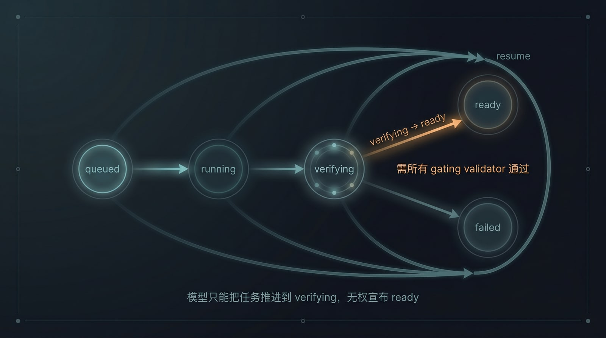
图：生命周期状态机。queued→running→verifying→ready/failed，外加任意态经 checkpoint 的 resume。最该记住的是 verifying→ready 那条边的守卫：它要求所有 gating validator 通过；模型最多把任务推进到 verifying，无权宣布 ready。
6.9 产物清单与验证结果：completion 是被证据裁出来的
状态机知道“该不该进 ready”，靠的是有人给它喂判断。这个判断不能是模型的自我感觉，得是一份产物契约和一组验证结果的比对。所谓产物契约，就是任务一开始就声明清楚：这件工作，到底要交出哪几件东西、每件由谁验。我们这条任务的契约是这样的：
{
"task_id": "t_9f2",
"required_artifacts": [
{"kind": "report.pdf", "owner_rule": "single", "validators": ["pdf.renders", "pdf.nonempty"]},
{"kind": "delivery.receipt", "owner_rule": "single", "validators": ["slack.delivered"]}
]
}
注意它要的是两件产物，不是一件。一份能渲染、非空的 PDF，和一张来自 Slack 的送达回执——“生成报告”和“送达报告”被当成两件需要各自被证明的事。验收时，验证器把实际产生的产物和这份契约逐条比对，结果同样落进事实流：
{"validator":"pdf.renders", "artifact_id":"a_pdf_1","ok":true, "gating":true, "evidence":"打开 4 页，0 渲染错误"}
{"validator":"pdf.nonempty", "artifact_id":"a_pdf_1","ok":true, "gating":true, "evidence":"4 页 / 91204 字节"}
{"validator":"slack.delivered","artifact_id":null, "ok":false,"gating":true, "evidence":"未找到 #finance 的 delivery.receipt 产物；最后一次 slack.upload 返回 upload_incomplete"}
PDF 那两条都过了。slack.delivered 这条 gating:true，它的 ok:false 一票否决，直接把终态钉死成 failed。这里有两个设计选择值得停下来看清楚。其一是 owner_rule:"single"——主产物必须显式、唯一地归属，从根上堵死第 5.4 节那种“靠文件名或最近修改时间去猜哪个才是交付物”的事故。其二是 gating 这个开关：验证器分阻断与不阻断两种，只有 gating:true 的失败能否决终态，那些“尽力而为”的检查（拼写、风格、体例建议）照样记录在案，却不该把一个本质完成的任务拖死——这正是为了避开第 5.5 节那种“验证器过严、误伤正常交付”的反向事故。
而这条任务里最不该被轻轻放过的细节是：那张送达回执，必须是一件 artifact，而不能只是日志里一句“发出去了”。原因很硬——只有 artifact 才进契约、才被 validator 按 kind 寻址、才能在终态裁决时被“点名缺席”。slack.delivered 之所以能斩钉截铁地说“no delivery.receipt found”，正是因为它找的是一件本该存在却不存在的具名产物，而不是去解析一段自由格式的文本日志。把“成功的证据”定义成一件可寻址、可校验的产物，而不是一句可被模型乐观改写的话——这就是产物与验证这根支柱，落到 schema 上的样子。
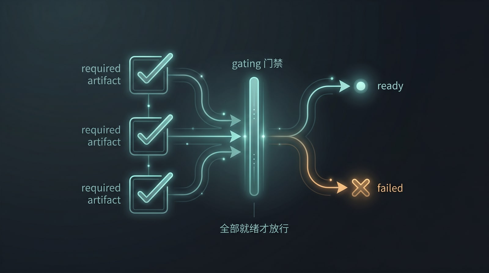
图：完成由证据裁决。任务声明的每件 required artifact 都要先过验证（左侧勾选），再汇到一道 gating 门禁：全部就绪才放行到 ready（上分支），任一缺失或验证失败就落 failed（下分支）——模型嘴上说“完成”，在这道门前不算数。
6.10 一条最小 API 面：怎样去问“它真的完成了吗”
事实流、状态机、产物契约都就位之后，还差最后一环：让外面的世界——UI、operator、上游编排器——能问到这台机器的判断，而且只能问到它的判断。这套 API 面可以小到只有几条，但它有一个刻意为之的缺口：
POST /tasks 创建任务，携带 artifact 契约
GET /tasks/{id} 返回折叠后的裁决：state、artifacts、validators、terminal_reason
GET /tasks/{id}/events?from=seq 增量事件，给 operator 回放与排障
GET /tasks/{id}/stream SSE：把事件实时折叠成 UI 视图
POST /tasks/{id}/resume 从 checkpoint 续跑
那个缺口是：这里没有任何一个端点，会回答“模型说它做完了没有”。model.claim 在 /events 的原始流里查得到，但它进不了 GET /tasks/{id} 的 state 字段——后者是事实流折叠、再叠加 validator 结果之后的裁决。我们那条任务被这样问起时，机器的回答是：
{
"task_id": "t_9f2",
"state": "failed",
"terminal_reason": "required_validator_failed:slack.delivered",
"artifacts": [
{"artifact_id":"a_pdf_1","kind":"report.pdf","sha256":"9c0b…","verified":true}
],
"validators": [
{"validator":"pdf.renders","ok":true},
{"validator":"slack.delivered","ok":false,"evidence":"未找到 #finance 的 delivery.receipt 产物…"}
]
}
UI 想画那个绿气泡，唯一合法的依据就是这里的 state:"ready"；而它拿到的是 state:"failed" 加一句人能读懂的 terminal_reason。于是“假成功”在最外层这道关口也无路可走——前端不再有机会从一句聊天文本里自己发明出一个完成态。/events 和 /stream 的分工则预告了第 8 章：前者是给 operator 排障的原始增量，后者是给终端用户实时折叠出的视图，但两者派生自同一条事实流，所以结构上不可能出现“用户看到绿、operator 查到红”的分裂。resume 单列为一个端点而非内部补丁，也是同一种克制——因为第 5.3 节已经讲过，中断与续跑是这类系统的日常，必须能从某个 seq 把状态重建出来，而不是假装任务永远一口气跑完。
把 6.7 到 6.10 连起来看，这台机器其实只做了一件事：在事实流、状态机、产物契约、API 四个位置，分别堵死了“假成功”能钻进来的四个缝隙——聊天不再是状态，模型不再能宣布终态，完成不再靠猜产物，前端不再能自造完成态。剩下的几章，就是沿着这台机器，把每一道缝隙的工程细节再一层层拧紧。
6.11 这张总图，怎样展开成后面的章节
从这里起，后面的章节不再往外并列地堆概念，而是沿着这张总图，把它的关键维度一个个掀开。能力平面与生态桥接掀开成第 7 章，讲万用 agent 为什么必然走向 MCP、外部应用和多语言工具；回放与用户事实掀开成第 8 章，讲 UI 为什么只能投影事实、不能自己发明生命周期；操作员控制面掀开成第 9 章，讲 dashboard、门禁和事故归因为什么必须共享同一条事实流；sub-agent 与 swarm 掀开成第 10 章，讲多 agent 的关键从来不是并行，而是角色、隔离、通信和验证；最后第 11 章再把同一套词汇表，改写成九条设计原则和九组反模式，让“产品故事 → 架构维度 → 设计法则”连成一条论证，而不是三套各说各话的语言。
-
本章在此处综合 Claude Code 本地源码镜像、Dive into Claude Code 中七组件与五层子系统分析，以及 Codex 开源仓库中
app-server-protocol、tools、thread-store、rollout所体现的模块边界，用来反推 agent harness 的通用总图；对应第 23 章参考文献 21、24、41。 ↩ ↩2 ↩3 ↩4 ↩5 -
Andrej Karpathy, LLM Wiki. 本章在此处使用其关于 autoresearch 双文件与 bookkeeping 的思路，说明
session.md+session.jsonl这类事实流设计的价值；对应第 23 章参考文献 9。 ↩ ↩2
7. 能力平面与生态桥接：不要把 agent 关在单一语言里
给 agent 一句话：“把这个月的销售数据画成趋势图，贴进周报。”
它在文本上能想得很清楚——该取哪段时间、画折线还是柱状、放周报哪一节。可这件事真要落地，没有一步是“生成文本”：取数据要打内部那个 SQL 服务，画图要跑一段 matplotlib（Python），“贴进周报”要往一个文件里写。模型再聪明，只要够不到自己语言、自己进程、自己仓库之外的那些东西，这句话就只能停在“我建议你这样做”。
第 6 章那张总图里，最容易被低估的就是这块“能力平面”。很多团队把它理解成“再接几个工具”，但 Claude Code 和 Codex 给的信号要强得多：想做万用 agent，就得默认系统会不断越出本语言、越出本进程、越出本仓库，去调 shell、浏览器、MCP、外部 API、第三方脚本，甚至别的 agent。这一章讲的，就是怎么让它伸得出手，又不让伸出去的每只手都变成一个新的事实漏洞。
7.1 万用 agent 为什么必然长出能力平面
Claude Code 能既写代码、又写文章、做 slide、跑研究、驱动外部服务，靠的不是给每个场景单独调一套 prompt。真要那样，场景一多就维护不动了。它靠的是把这些花样各异的任务，还原成同一组相对稳定的动作原语：读写本地产物、运行命令和脚本、访问网络与外部服务、读取外部资源、把活派给别的 agent、必要时向人请求输入或确认。写周报那句话之所以能落地，正是因为它被拆成了这几样原语的组合——查询是“访问外部服务”，画图是“运行脚本”，贴进去是“写本地产物”。
Codex 把同一份清单摆到了公开协议面上：command/exec、fs/*、mcpServer/tool/call、mcpServer/resource/read、tool/requestUserInput、spawn_agent——这些不是附属功能，而是 runtime 原生的动作词汇表。这里得给不熟的读者补一句 MCP 是什么：Model Context Protocol 是一套标准协议，让模型能以统一方式去发现、调用外部的工具和资源——你可以把它想成工具世界的“USB-C”，有了这个统一口，任何模型、任何客户端都能插上任何一个合规的工具，而不必为每一对组合单独焊一根线。
两套系统说的是同一件事：所谓“万用 agent”，本质是一个能编排多种能力源的运行时，而不是一句更长的 system prompt。把这点想反了，团队就会一直在“再调几行提示词”里打转，而真正该建的是那张能力平面。
7.2 Claude Code / Codex 怎么把外部能力接进来
把视角拉近到对象层，会看到一个很说明问题的细节。Claude Code 的 ToolUseContext 里，直接攥着 mcpClients、mcpResources、agentDefinitions、commands、tools，还有权限上下文和 AppState。注意它没把“当前正在编辑的代码文件”当成核心对象——核心对象是“当前正在推进的那条任务线程”。这条线程拿着同一套身份、权限、记忆和摘要机制，去调不同来源的能力；调 shell、调 MCP、派子 agent，对它而言都是同一个主体在伸不同的手，而不是几个互不相识的工具各自为政。
Codex 走的是更偏协议的那条路。它把文件系统、命令执行、MCP、人工输入、多 agent 工具，统一暴露在工具注册面和 app-server 协议上。这样做的好处是：CLI、桌面端、Web、乃至未来某个还没出现的客户端，都不必各自重新发明一遍“怎么执行 shell、怎么续 thread、怎么向外部 agent 派工”——能力面已经先在内核层被抽象好了，客户端只是它的不同前脸。1
值得学的不是这些模块名，而是它们共同体现的那个架构判断：外部能力不是插在系统屁股上的插件尾巴，而是运行时主干的一部分。 这个判断决定了下面一整节的成败。
7.3 一个 Python 脚本，怎样一路污染父任务
把上面那句架构判断反过来说会更有杀伤力：外部能力一旦没有进入统一协议面，第 5 章那几类事故就会一条条排着队回来。挑最常见的一种追到底——团队图快，把一段现成的 Python 数据脚本当工具挂了进去，没怎么改造。
它跑起来了。脚本一边处理，一边往 stderr 打进度：Processing row 4000/10000...。在写脚本的人看来这很贴心。可父任务那头，期待的是从一个约定的事件汇流处收到结构化的进度事件；它看 stderr，只看到一坨它无法解析的文本日志。于是父任务的进度，停在了脚本启动前的那一刻——这正是第 5.1 节那种进度漂移：活在干，进度却是死的。
脚本算完，把结果写到了 ./out/result.csv——这个路径是它自己猜的。父任务的 artifact 契约里，压根没有这条路径的位置；它不知道主产物已经生成、在哪、该不该送去验证。第 5.4 节那个产物契约缺口，就这么开了。更别提这段脚本是用一个不带 session/topic scope 的 shell 起的，它产生的副作用落不进当前会话的边界里，于是又有了第 5.3 节那种串扰的温床；而如果它顺手还调了个外部 verifier、对方只回一行 OK，那第 5.5 节的验证器不完整也一并凑齐了。
看清这条链：每一种没被收口进协议的能力，都精准地重新打开了一条具体的失效机理。 进度漂移、产物缺口、会话串扰、验证空洞——它们不是各自独立的 bug，而是同一个根因（能力没进统一事实面）在四个出口上的四种症状。所以“桥接”绝不只是 SDK 用着方不方便的问题，它的本质是：所有外部能力，都要在进入系统的那一刻，就被收口到同一套 session、scope、artifact、validator、evidence 规则里。
7.4 入口允许多样，消费端必须强约束
那条链也指明了正确的落地姿势，可以压成一句话：发射端允许语言和生态的多样性，消费端必须保持运行时真相的唯一性。
发射端要宽容，因为你拦不住生态。给 Python、Node、shell、外部服务各提供一个轻量的事件发射辅助层，让它们能方便地把进度、产物、证据按规矩报上来；再提供一个 CLI 或环境变量形式的兜底桥（比如一个 HARNESS_EVENT_SINK），连辅助层都来不及接的脚本，也能靠它把关键事实喷进同一条流。这里有个分寸：sink 缺失时可以 no-op（脚本照跑，只是这次没报结构化进度），但绝不允许因为 sink 缺失就跳过结果契约和终态验证——宽容的是“怎么报”，不容商量的是“报上来的东西必须过同一道关”。
消费端则必须铁面。无论事实从哪种语言、哪个进程喷进来，它在进入系统时都要被同一套规则校验一遍：schema 对不对、带没带 session/topic scope、phase 合不合法、artifact 引用指向哪、validator 证据齐不齐。回到 §7.3 那段 Python 脚本——只要消费端这道关在，它那条 stderr 进度会被判为“无结构、不计入”，它猜的那条产物路径会因为不在契约里而被打回，串扰会因为缺 scope 而被拦下。同一段脚本，接法没变，但因为消费端不松口，它再也污染不了父任务的事实。
这一章守的边界，会在平台越做越开放时变得越来越重要。等到要接插件市场、第三方 workflow、外部 agent，能力平面就是最先要守住的那道线——否则平台每开放一步，事实协议就被侵蚀一步，最后退回到谁也说不清“现在到底是什么状态”的那种系统。
7.5 把那次 Slack 上传，做成一个合规的桥接能力
抽象讲到这儿，正好可以拿第 6 章那条任务来对质。那次把 q2-weekly.pdf 发到 #finance 的失败，根子就在 slack.upload 这个能力是怎么接进系统的。如果它只是 prompt 里一段顺手写的 curl，那 §7.3 那条污染链会原样上演；而如果它是一个有契约的桥接能力，长相是这样的：
{
"name": "slack.upload",
"scopes": ["slack:files.write", "slack:channel:#finance"],
"args_schema": {"channel": "string", "file_path": "string", "title": "string?"},
"result_contract": {
"success_means": "files.completeUpload 返回 2xx 且 file_id 可回查",
"on_success": {"emit_artifact": {"kind": "delivery.receipt",
"fields": ["channel", "file_id", "permalink", "ts"]}}
}
}
这份契约里最要命的一行是 success_means。Slack 的上传分两段——先 files.getUploadURLExternal 拿通道，再 files.completeUpload 落盘——而契约明确把“成功”钉在第二段的确认上，外加一个“file_id 可回查”的硬条件。第一段那个 2xx，在这份契约里什么都不算。于是那次 completeUpload 超时，桥接层根本没有“乐观上报”的接口可用：按契约，它只能往事实流写第 6 章里那条 seq:7——ok:false，并且不产生 delivery.receipt 这件产物。
把这件事说穿：第 6 章里状态机之所以能看见那次失败，不是因为模型诚实，而是因为工具契约根本不给它撒谎的入口。success_means 把“成功”的定义从模型的语义直觉、从 HTTP 状态码，挪到了一个可回查的客观事实上；on_success.emit_artifact 又规定了“成功必须留下一件具名产物”。这两条合起来，正好喂饱了第 6.9 节那条 slack.delivered 验证器——它要找的 delivery.receipt 没出现，于是 gating 失败，终态落到 failed。能力契约和验证契约，在这里严丝合缝地咬上了。
7.6 事件汇流口的具体协议：一段脚本怎样把事实喷回主流
§7.4 给了一个名字叫 HARNESS_EVENT_SINK 的兜底桥，这里把它摊开成可以照抄的协议。它其实简单到近乎朴素：harness 在拉起桥接进程前，打开一个汇流口（一个 unix domain socket 或具名管道），把它的地址塞进环境变量 HARNESS_EVENT_SINK，再把任务标识塞进 HARNESS_TASK_ID。桥接进程要做的，就一件事——把自己产生的事实，按和原生事件一模一样的 schema，逐行 JSON 写进这个口。
Python 那段在 §7.3 里闯过祸的脚本，接上协议之后是这样：
import os, json, socket
SINK = os.environ.get("HARNESS_EVENT_SINK")
def emit(ev):
if not SINK: # sink 缺失 → no-op，脚本照常算完
return
ev.setdefault("task_id", os.environ["HARNESS_TASK_ID"])
with socket.socket(socket.AF_UNIX, socket.SOCK_STREAM) as s:
s.connect(SINK)
s.sendall((json.dumps(ev, ensure_ascii=False) + "\n").encode())
emit({"type": "tool.progress", "tool": "report.render", "pct": 40})
# … 生成 PDF …
emit({"type": "artifact.written", "kind": "report.pdf",
"path": "out/q2-weekly.pdf", "sha256": sha256_of("out/q2-weekly.pdf")})
换成 Node，逻辑一字不差，只是语言皮肤不同：
const net = require("net");
const SINK = process.env.HARNESS_EVENT_SINK;
function emit(ev) {
if (!SINK) return;
ev.task_id ??= process.env.HARNESS_TASK_ID;
const c = net.createConnection(SINK, () => c.end(JSON.stringify(ev) + "\n"));
}
emit({ type: "artifact.written", kind: "delivery.receipt",
channel: "#finance", file_id: "F0xyz", permalink: "https://slack/…" });
连辅助层都来不及接的场景——比如一段临时 shell——也有最后一道兜底：
emit() { [ -n "$HARNESS_EVENT_SINK" ] && printf '%s\n' "$1" | nc -U "$HARNESS_EVENT_SINK"; }
emit '{"type":"tool.progress","tool":"slack.upload","pct":100}'
三段代码长得不一样，喷出来的事件却落进同一条流、过同一道 schema 校验、被同一个 fold 折叠——这就是“发射端允许多样、消费端保持唯一”那句话的字面实现。也正因如此，§7.3 里那条 stderr 进度漂移有了正解：进度不再靠父任务去猜 stderr，而是脚本主动 emit 一条 tool.progress；产物不再靠文件名猜，而是 emit 一条带 sha256 的 artifact.written。再回到那条分寸线——SINK 缺失时 emit 直接 no-op，脚本照样把活算完，宽容的只是“这次没报进度”；可消费端那边，artifact 契约和 gating validator 一个都不会因为 sink 缺席而豁免。一个闷头不报进度的脚本，顶多让 UI 少几行进度条，绝不会因此被偷偷判成 ready。
7.7 权限不是一个开关，是能力契约的一部分
还剩最后一个问题：既然桥接能力能往外发文件、能花钱、能删东西，凭什么信得过它？答案不在“给不给 agent 权限”这个开关上，而在权限被建模成能力契约的一部分。回看 §7.5 那份 schema，slack.upload 带着 scopes: ["slack:files.write", "slack:channel:#finance"]——它要的不是“能用 Slack”，而是“能往 #finance 这一个频道写文件”。这是最小权限：能力的边界被写进契约，由消费端在调用前核对，而不是靠 agent 自觉。
这也顺手堵死了一种本可以更阴险的“假成功”。设想模型不老实，直接在聊天里编一句“已生成回执 F0xyz”——它伪造不出第 6 章那件 delivery.receipt 产物，因为写这件产物的前提，是 slack.upload 真的握着 slack:files.write 的 scope、真的拿回了一个可回查的 file_id。权限和产物在这里互为锁扣：没有 scope，调用根本发不出去；没有真实回执，产物根本写不进流。模型能说的，永远只是一条 model.claim。
更危险的动作，则要把人重新请回决策里。我们这条任务里，slack:channel:#finance 是预先授权的，所以一路无需打断；但假如它要做的是“给外部地址 cfo@ 发一封带附件的邮件”，触到的就是 email:send_external 这类特权 scope——这时合理的设计不是放行，而是先在事实流里落一条 approval.requested，把任务挂起，等一条 approval.decided 回来再继续。这正是 Codex 那套 sandbox 加 approval 模型的用意：权限的授予、特权动作的审批、人工的放行或拒绝，全都是事实流里的一等事件，而不是某处代码里一个无人留痕的 if。2 把这一节连起来看就清楚了——能力平面之所以敢“伸得出手”，正是因为每只手伸出去时，都被 scope 框住、被产物契约盯住、被特权审批拦住，伸出去的每一下都在事实流里留着痕。
7.8 同一道纪律，套到一个 MCP 工具上
前面那段 Slack 上传是“自己人”——slack.upload 是团队亲手包出来的桥接能力。但 §7.1 提过，MCP 的意义恰恰在它是“工具世界的 USB-C”：很多能力并不出自你的代码库，而是别人写好的一个 MCP server，你只是把它插上来。这里最容易跑偏的念头是——“MCP 嘛，给 demo 加点扩展用的，接上能跑就行”。这个念头一旦成立，§7.3 那条污染链会原封不动地从 MCP 这个口再灌一遍。所以正确的理解是反过来的：MCP 不是给 demo 加扩展的旁路，而是把外部能力接进同一个运行面的标准口。 一件能力从 shell 来、从 Python 来、从 Node 来，还是从某个 MCP server 来，对消费端那道校验而言没有半点区别——它们最终都得过同一道关。
拿一个具体的来对质：团队有个内部工单系统，对外暴露成一个 MCP server，其中一个工具叫 ticket.create，用来下一张采购或运维工单。最省事的接法是“调通了 HTTP 200 就算下单成功”——而这恰恰是 §7.5 里 slack.upload 摔过的那一跤的翻版：HTTP 200 只说明请求到达了对端的网关，不说明工单真的落库、真的拿到了一个能回查的编号。所以这个 MCP 工具进系统时，要被套上和 slack.upload 一模一样的契约骨架：
{
"name": "ticket.create",
"source": "mcp:internal-ticketing",
"scopes": ["ticket:create", "ticket:project:OPS"],
"args_schema": {"project": "string", "title": "string", "priority": "string?"},
"result_contract": {
"success_means": "工单已落库且返回的 ticket_id 可经 ticket.get 回查命中",
"on_success": {"emit_artifact": {"kind": "ticket.receipt",
"fields": ["ticket_id", "project", "url", "created_ts"]}}
},
"privileged": {"priority=P0": "approval.requested"}
}
注意这份契约和 §7.5 那份在结构上是同一个模子刻出来的，只在该填的地方填了工单的语义。success_means 同样没有停在传输层：它要求的不是“对端回了 2xx”，而是“拿到的 ticket_id 能被 ticket.get 再查一次、并且命中”——把“成功”钉死在一个可回查的客观事实上，而不是模型对一句回包的语义直觉。换成那个常见的“知识库检索”MCP 工具，这条线写法不变：成功的定义是“检索真的命中、返回了带 doc_id 的结果”，而不是“检索接口没报错”。无论哪种工具，success_means 都在干同一件事——把成功的判据从感觉挪到证据。
接下来的几道关，全是这本书一路讲下来的老规矩，只是这次施加在一个外来工具上。它产出一件具名 artifact：成功必须落下一件 ticket.receipt，带着 ticket_id 和回查用的 url——这正是后续 gating validator 要找的那件物证，没有它，终态点不亮 ready，道理和 §7.6 里那件 delivery.receipt 一字不差。它经统一事件入口回流：MCP server 那边吐回的调用结果，不会被当成“特殊的 MCP 返回”另开一条通道，而是被翻译成和原生事件同一套 schema 的事实，喷进 §7.6 那个 HARNESS_EVENT_SINK 描述的同一条流——tool.progress、artifact.written 这些事件，并不在乎自己背后那只手是 MCP 还是 shell。它的 scope 受限：ticket:create 加 ticket:project:OPS，意思是这件能力只能在 OPS 这一个项目下建单，建不到别的项目去，更越不出工单这件事——和 slack.upload 只能往 #finance 写文件是同一种最小权限。
唯一比 Slack 那例多出来的，是那行 privileged。下一张普通工单是日常操作，一路无需打断；可一旦 priority 是 P0——意味着会触发待命工程师的电话告警、半夜把人喊起来——这就是个特权动作，不该由 agent 自行拍板。于是契约规定：遇到 P0，桥接层不直接发出调用，而是先往事实流里落一条 approval.requested，把任务挂起，等一条人来拍板的 approval.decided 回来再决定放不放行。这和 §7.7 里那封发给 cfo@ 的外部邮件是同一套机制——特权的边界被写进能力契约，审批是事实流里的一等事件，而不是某段 MCP 适配代码里一个无人留痕的 if。
把这条 MCP 工具走过的事实流摊开，会看到它和原生能力的足迹完全同形：
{"seq":11,"ts":"...","actor":"agent","type":"tool.invoked","tool":"ticket.create","source":"mcp:internal-ticketing","args_digest":"sha256:…"}
{"seq":12,"ts":"...","actor":"runtime","type":"approval.requested","reason":"priority=P0","tool":"ticket.create"}
{"seq":13,"ts":"...","actor":"oncall-lead","type":"approval.decided","decision":"approved"}
{"seq":14,"ts":"...","actor":"tool","type":"tool.returned","tool":"ticket.create","ok":true}
{"seq":15,"ts":"...","actor":"tool","type":"artifact.written","kind":"ticket.receipt","ticket_id":"OPS-4821","url":"https://tickets/OPS-4821","sha256":"…"}
这串事件里没有一条带着“我是 MCP”的特殊标记去要特殊待遇。approval.requested 因为撞上 P0 而落下，tool.returned 带着 ok:true 而不是一句模型自述，ticket.receipt 这件产物携着可回查的 ticket_id 落进流——每一步都和这本书前面讲的原生能力踩在同一组规矩上。这正是把 MCP 当“标准口”而非“扩展旁路”的全部意义：你接进来的能力可以是任何人写的、用任何语言实现的，但它一旦进了这道口，就得和 slack.upload、和那段 Python 脚本一样，把成功钉在证据上、把产物留成物证、把特权交还给人。发射端尽可以五花八门，消费端那道关，对谁都一视同仁。
-
本章在此处综合 Claude Code
ToolUseContext、MCP 与 agent 定义相关实现，以及 Codextools与app-server协议面中关于 command、fs、MCP、human input、多 agent 工具的公开边界，用来说明万用 agent 必须先拥有统一的能力平面；对应第 23 章参考文献 21、24。 ↩ -
本章在此处综合 Codex 开源仓库中 sandbox、approval 与工具 scope 的公开边界，以及 MCP 关于工具调用与资源读取的标准约定，用来说明桥接能力的结果契约、事件回流协议与权限模型；对应第 23 章参考文献 24、41。 ↩
8. 回放与用户事实：前端只能投影运行时真相
一个跑了二十分钟的任务，你中途切去回邮件，回来顺手刷新。进度条归零，那行“正在重构第 3 个模块”不见了，界面要么卡在永远转圈的“运行中”，要么从头问你“需要我做什么”。后台其实一切照旧——任务在那台 worker 上稳稳推进——可你这一侧已经慌了。
这一慌的根源不在后台，在前端对“真相”的态度。如果第 7 章守的是能力入口，第 8 章守的就是用户表面的真实性：前端是运行时事实能否被用户正确看见的最后一跳，是第 2 章 §2.3 那个负反馈环里离人最近的一枚传感器。传感器一旦开始编数据，系统就掉回第 5.1 到 5.3 节那些事故里——用户看到的进度和真实进度对不上，而且没人说得清哪个算数。
8.1 回放要解决的不是“刷新后保留聊天”
先把那次刷新，拆到秒。
任务跑到第 1,140 秒。屏幕上，进度停在“正在重构 auth/ 下的第 3 个模块（3/7）”，上面滚着十几条工具调用记录。你按下 ⌘R。
接下来发生什么，完全取决于这个前端把“状态”存在了哪里。
在一个把 replay 当成“重画聊天”的系统里，过程是这样的。浏览器内存被刷新清空，前端于是做两件事：从 localStorage 里捞出那个缓存的消息数组，把十几条气泡重新画出来；同时向 /messages?session=… 要一遍历史。麻烦在于，这两样东西里都没有“3/7”“正在重构”这种东西——它根本不是一条消息，而是前端在上一段会话里，靠着陆续收到的流式片段，在自己内存里一点点攒出来的推断。内存一清，推断就蒸发了。前端只剩最后一点依据：历史里最后一条记录是什么？是一条还没等到结尾的工具调用。它只能二选一——要么乐观地接着转圈（于是你盯着一个永不结束的“运行中”），要么判定“上一轮大概结束了”、弹出输入框问你下一步。而与此同时，那台 worker 正一声不吭地把第 4 个模块重构到一半。
谎言就在这一帧诞生：不是后台算错了，是前端在内存清零的瞬间，被迫拿“最后一条消息”去冒充“当前状态”——而这两者，从来不是一回事。
换一种存法，同一次刷新会平静得近乎无聊。
这一次，后台维护的是一条只追加、不修改的事件日志（后端工程师熟悉的 事件溯源：当前状态不存成可改写的快照，而是由一条不可变的日志折叠出来）。你刷新时，流大概停在这样一个位置：
turn/started { turn: 57 }
item/tool_call { name: "edit", path: "auth/oauth.rs", phase: "refactor", step: "3/7" }
item/tool_result { ok: true }
turn/completed { turn: 57 }
turn/started { turn: 58 } ← ⌘R 发生在这里
前端不去重画消息。它做的是另一件事：向 /sessions/:id/state 要一份快照（阶段 refactor、进度 3/7、主产物路径、最近一个动作），再订阅从 turn 58 起的增量，然后把两者折叠（fold）一遍，落回那个一模一样的 3/7。注意：它没有“记住”任何东西。它没有私藏的状态可丢，因为它的“当前状态”压根不是攒出来的，而是事实流的一个纯函数——给同样的日志，它每次都吐出同样的值。刷新、重连、切走再切回，在它眼里都只是“重新求一次值”。
两种存法的差别，一句话就能戳破。前一种，“当前状态”是前端的私有内存，刷新即失忆；后一种，“当前状态”是事实流的纯函数，刷新只是重算。所以 replay 真正要解决的，从来不是“把聊天留住”——而是让前端根本没有自己的记忆可丢。
剩下那一串考验——重连、切会话、worker 重启、流中断后重新订阅——本质上是同一道题的不同问法：你的前端，是有自己的记忆、还是只会重算？想清楚这一个，后面全是它的推论。
8.2 一个对象模型，还是两个
上一节那条事件日志藏着一个容易被忽略的前提：直播给你看的流，和事后回放给你看的历史，必须是同一个对象模型。 这话听起来像废话，可一旦违反，bug 会以最难查的形式出现。
设想团队为了赶进度，分别写了两条路径。直播路径直接消费 WebSocket 推来的事件，前端边收边更新一个内存状态机；历史路径则是另一个人写的，从数据库把消息拉出来、用一段“看起来差不多”的逻辑重建状态。两段代码，对同一件事各有一套理解。某天有人改了后端：turn/completed 之后、下一个 turn/started 之前，多塞了一条 item/verification。直播路径的状态机认得它，把阶段推进到“验证中”；历史路径那段重建逻辑没人同步改，遇到这条 item 直接忽略，于是回放出来停在“执行中”。结果就是：任务跑着的时候你看到“验证中”，刷新一下变成“执行中”，再等一秒推送进来又跳回“验证中”。用户报的 bug 是“状态会闪”，你查了三天——因为问题不在任何一条路径里，而在它们俩对世界的解释不一致。
Codex 把这条坑直接堵死在了内核层。它的 app-server 把 thread/started、turn/started、item/*、turn/completed 做成一条统一的通知流——直播和回看，吃的是同一份对象模型，不存在“两套代码各自解释”的缝。Claude Code 从产品器官的角度说着同一句话：query.ts 的执行循环、transcript 持久化、resume、子 agent 进度摘要，合起来表明无论这 UI 多像聊天框，本体都是一个可恢复执行体的事实投影，而不是聊天本身。1
把这条约束推到底，就给前端划出了一条很硬的边界。UI 最多配拥有三样东西：把事实流折叠成可显示状态的投影逻辑、把状态摆成像素的展示逻辑、把用户操作翻译成请求的交互逻辑。它唯独不能拥有第四样——独立事实。前端可以缓存、可以做动画、可以决定先画哪块；但它一旦自己判断“这任务大概进到验证阶段了吧”，就在事实流之外私设了第二个真相源。而系统里只要有两个真相源，剩下的就只是它们哪天打架、以及你要查几天的问题了。
8.3 一条事故，怎样长成一条回放规则
抽象的规则记不住，被一次事故烫过的规则才记得住。挑第 5.3 节那次会话污染来追。
你同时开着两个会话：A 在重构支付模块，B 在写一份文档。两者都在跑。你在 A 里刷新。前端要历史，调了 /messages?session=A——到这步都对。可问题出在更下面一层：后端那张事件表为了查询快，建了个按用户聚合的缓存，回放时从缓存里取最近事件，而那段取数的代码，漏掉了 session 这个过滤条件。于是 B 刚产生的一条“文档已保存”事件，被当成 A 的历史回放了进来。A 的界面上，于是冒出一条它从没做过的动作。更糟的是，如果 A 的状态机看到这条“保存”就把阶段推进了，你会以为支付模块的某一步完成了——而它根本没动。
注意这条 bug 的形状：后端的事件本身没错，每条事件都老老实实带着自己的 session；错的是回放路径在某一段把 scope 丢了。这就是为什么 scope 不能只在“产生事件”时存在，而必须从事件层、贯穿到回放层、再贯穿到渲染层——中间任何一段图省事把它丢掉，兄弟会话的状态就会从那个缺口里渗进来。
把这一条想透，三条更普遍的规则就自然落地了，而且都指向同一件事：前端里不该存在第二套生命周期解释器。 直播和回看若各自解释“什么算一个阶段”，就会像 §8.2 那样闪；scope 若在任一层断掉，就会像刚才那样串；而 UI 若只显示一个干巴巴的状态词、不把最近动作和最近证据一并摆出，操作员就回到第 5.6 节那种盲区。前端可以做缓存、动画、布局，但它不能凭空发明一个阶段——它发明的每一个阶段，都是一条迟早要和后台对质、且必输的影子真相。
8.4 把那唯一的解释器，写成一个纯函数
“前端里不该存在第二套生命周期解释器”——这句话听着像戒律，其实有个很务实的落法：把那唯一的解释器，写成一个不带任何私有记忆的纯函数。它吃一串事件，吐一份可显示状态，仅此而已。沿用第 6.7 节那条 schema，它大致长这样：
// fold: 事件流 → 可显示状态。纯函数：同样的输入，永远同样的输出。
function fold(events) {
const v = { lifecycle: "queued", lastAction: null,
artifacts: {}, validators: {}, claims: [], terminalReason: null };
for (const e of events) {
switch (e.type) {
case "turn.started": v.lifecycle = "running"; break;
case "tool.called": v.lastAction = `${e.tool} …`; break;
case "tool.returned": v.lastAction = `${e.tool} ${e.ok ? "ok" : "FAILED"}`; break;
case "artifact.written": v.artifacts[e.kind] = { sha256: e.sha256, path: e.path }; break;
case "model.claim": v.claims.push(e.text); break; // 记下来给人看，但不碰 lifecycle
case "verify.started": v.lifecycle = "verifying"; break;
case "validator.result": v.validators[e.validator] = e.ok; break;
case "task.settled": v.lifecycle = e.state; v.terminalReason = e.reason; break;
}
}
return v;
}
这段代码里真正该被盯住的，是 case "model.claim" 那一行。它把模型那句声称推进一个 claims 列表——好让用户看得到模型说过什么——可它一个字都没碰 v.lifecycle。换句话说，在这个解释器里，模型的“已发送”和任务的“完成”之间，根本没有一条代码通路。
把第 6 章那条任务的事件流喂进去，结论冷得发硬。seq:8 那句“已发送到 #finance”落进 v.claims，会作为一条聊天气泡显示出来；但 v.lifecycle 自始至终只听 task.settled 的——而那条 task.settled 是第 6.8 节那台状态机在 gating validator 失败后写下的 {state:"failed", reason:"required_validator_failed:slack.delivered"}。于是 fold 吐出的是 lifecycle:"failed"，外加一条人能读懂的原因，和一句“模型当时是这么说的”。那个绿色完成气泡，在这个函数里压根不可表示——不是因为前端工程师足够小心，而是因为 fold 的类型纪律让“从 model.claim 推出 done”这条路根本不存在。第 5.2 节那种“从 UI 反推事实”的假一致，到这里被釜底抽薪：UI 没有自己的薪可烧了，它能显示的每一个生命周期值，都只能由 task.settled 这一种事件点着。
这也顺手解释了为什么 §8.1 那次刷新能平静收场。刷新清空的是浏览器内存，可 fold 没有内存可清——它的“当前状态”是事实流的纯函数，刷新只是拿同一条流再求一次值。前端可以缓存这条流、可以只折叠增量、可以给状态变化加动画，但它求值的唯一依据，永远是那串它无权改写的事件。
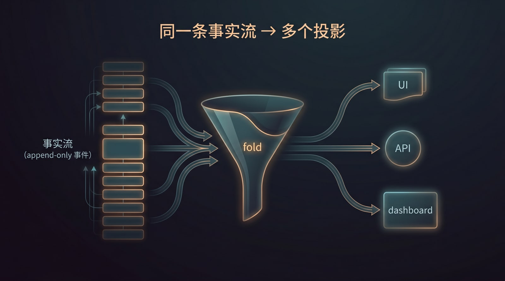
图：一条只追加的事实流，被折叠（fold）成多个投影。UI、API、operator dashboard 都从同一条事件流派生，而不是各攒一份“差不多”的影子状态——这正是刷新、重连、切会话之后大家仍看到同一份事实的根本原因。
8.5 把回放写成一道门禁
这类问题最阴的地方在于，单元测试照不到它们——它们只在“刷新、重连、切会话”这些动作发生的那一瞬现形。所以测试得换个写法：与其断言某个函数的返回值，不如断言两条路径给出的世界是不是同一个。
最该先写的那道门禁，正好就是 §8.1 那个场景的自动化版本。它做三件事：起一个任务，让它跑到中途某个确定的阶段（比如 refactor 3/7）；然后分别走两条路——一条直接读任务快照接口 /api/sessions/:id/tasks，一条把 SSE 流从头回放一遍 fold 出状态；最后断言这两个状态在生命周期上逐字段相等。这道断言一旦挂上 CI，§8.2 那种“两个对象模型悄悄分叉”的 bug 就再也合不进主干——因为它一分叉，这道门禁立刻红。
其余的断言是它的同族，方向都一样：刷新前后、重连前后、切会话前后，用户看到的必须是同一份任务事实；历史回放绝不能把兄弟 session 的状态带进当前容器（这正是 §8.3 那道缺口的守卫）；子 agent 摘要、主产物状态、验证证据，刷新后必须依然在；流中断后用 replay 重建的状态，要和恢复直推后继续推送的状态严丝合缝。
这些断言读着琐碎，却是“用户事实层到底存不存在”的试金石。一个朴素的判据：只要这些断言还没成为合并/发布的门禁，团队就还停留在“实现了一个前端”——它刷新一下就可能骗人；而一个真正可信的用户事实层，是你怎么刷、怎么断、怎么切，它都说同一句实话。区别不在画得好不好看，在敢不敢被这样反复地刷。
8.6 断线重连：同一条流，再求一次值
§8.5 列的那串门禁里，最后一条最不像“刷新”：流中断后用 replay 重建的状态，要和恢复直推后继续推送的状态严丝合缝。刷新是用户主动按的，断线不是——它是网络抖一下、worker 滚动重启、负载均衡把长连接掐了。这一节就把这一条单拎出来，用那条贯穿全书的周报任务 t_9f2 演一遍，看“重连”和“刷新”凭什么是同一道题。
任务跑到把 PDF 周报传去 #finance 这一段。slack.upload 是两段式的：先 createUpload 拿到上传槽，再 completeUpload 把文件落定、触发投递。事件流刚推到第一段、还没等到第二段的回执，客户端这条 SSE 长连接就断了——后端正赶上一次 worker 滚动重启，把所有 inflight 的流连接一并掐了。客户端这一侧，EventSource 的 onerror 触发，屏幕停在“正在上传周报到 #finance”，进度气泡转着圈。三十秒里，用户什么都做不了，只能盯着那个圈。
断线这三十秒，后台一点没停。worker 重启后从事件日志续上，completeUpload 那一段超时静默失败，gating validator slack.delivered 拿不到 delivery.receipt，coordinator 据此写下终态。这一切都老老实实落进了那条只追加的事实流，每条都带着单调递增的 seq：
{ "seq": 41, "type": "tool.called", "tool": "slack.upload", "args_digest": "…", "stage": "createUpload" }
{ "seq": 42, "type": "tool.returned", "tool": "slack.upload", "ok": true, "stage": "createUpload", "upload_id": "U7" }
← 断线发生在这里，客户端最后收到的是 seq:42
{ "seq": 43, "type": "model.claim", "text": "已发送到 #finance" }
{ "seq": 44, "type": "tool.called", "tool": "slack.upload", "stage": "completeUpload", "upload_id": "U7" }
{ "seq": 45, "type": "tool.returned", "tool": "slack.upload", "ok": false, "stage": "completeUpload", "reason": "timeout" }
{ "seq": 46, "type": "validator.result", "validator": "slack.delivered", "ok": false }
{ "seq": 47, "type": "task.settled", "state": "failed", "reason": "required_validator_failed:slack.delivered" }
关键在于客户端断线那一刻，它手里攥着的不是“一屏聊天”，而是一个数字：它收到的最后一条事件是 seq:42。这个 last-seq 就是它和事实流之间唯一的锚。三十秒后网络恢复，它做的不是把缓存的气泡重画一遍，而是带着 last-seq=42 去拉增量——GET /sessions/t_9f2/events?since=42——后端把 seq:43 到 seq:47 这五条一次性补齐，客户端再把它们顺着折叠进当前状态。fold 不在乎这五条是“断线期间攒下的存货”还是“此刻新鲜推来的”，它只认 seq 的先后；seq:47 那条 task.settled 一进去，v.lifecycle 就落到 failed，terminalReason 记下 required_validator_failed:slack.delivered，而 seq:43 那句“已发送”照例只进 claims、一个字都碰不到 lifecycle。那个一度转着圈的上传气泡，重连后不是“接着转”，而是直接收口成一条带原因的失败——因为 fold 求的从来不是“我上次停在哪”，而是“给定到 seq:47 为止的这条流，此刻该是什么值”。
这里值得停一拍，把 §8.4 那个“fold 无私有记忆”的纯函数性质，对着断线场景再确认一遍。假如客户端在断线期间偷偷记过点什么——比如自作主张把那个上传气泡标成“可能已完成”，好让界面别显得卡住——那么重连后它就有两个状态源要调和：自己攒的乐观猜测，和拉回来的真实增量。这一调和，迟早调出第 5.2 节那种“UI 显示完成、事实却是失败”的假一致。而真正的 fold 没有这个烦恼：它在断线那一刻没存下任何私货，重连后也没有“旧值”要去对齐，它只是拿一条更长的流（多了 43–47 五条）重新求一次值。断线 30 秒和断线 0 秒，对它而言只是输入流的长度差，求值规则一字不变。
于是 §8.5 那道门禁在这里被实打实地演了一遍：一条路是“从未断线、一路直推”——客户端连着收到 41…47，fold 一路推到 failed；另一条路是“断在 42、重连后补 43…47”——客户端先收到 41…42，停顿，再补 43…47，fold 同样推到 failed。两条路喂给 fold 的事件集合与顺序完全一致，纯函数对一致的输入只会吐出一致的输出，所以两边逐字段相等：同样的 lifecycle:"failed"、同样的 terminalReason、同样那条“模型当时是这么说的”留痕。这正是那道门禁要断言的东西——它甚至不必真的去拔网线，只要在测试里把同一串事件，一次连续喂、一次切成“前半段 + 带 since 的后半段”分两批喂，再断言两次 fold 出的状态逐字段相等，就把“断线重连”这道看似要靠运气复现的 bug，钉成了一条确定的、随时能跑的检查。能这样钉住，恰恰因为重连在这套架构里根本不是什么特例：它和刷新、切会话一样，不过是“拿这条流，再求一次值”。
-
本章在此处综合 Codex
app-server中 thread / turn / item 的统一事件流设计，以及 Claude Code transcript、resume 与 agent summary 机制，说明 UI replay 必须建立在统一的后端事实模型之上；对应第 23 章参考文献 21、24。 ↩
9. 操作员控制面与发布真实性
凌晨两点，值班的人盯着一屏仪表盘：错误率平稳，延迟正常，吞吐没掉，一片祥和的绿。与此同时，一个高价值客户的任务已经卡死四十分钟——它停在某个阶段，既不报错，也不超时，只是不再往前。聚合指标永远不会替它报警，因为单独一个任务卡住，撼不动任何平均值。
到第 8 章为止，我们回答的是“用户怎么看到真相”；第 9 章回答另一半：“操作员怎么足够快地理解真相，并据此做发布决策”。很多团队栽在一个误判上——系统里已经攒了一堆事件和日志，于是以为“可观测性差不多有了”。这里要把两个东西掰开：可观测性回答的是“系统整体健不健康”，靠的是指标和日志的聚合；而 harness 要的是控制面，它回答的是“这一个任务此刻卡在哪、为什么、我下一步该按哪个键”。前者是一排仪表，后者是一个驾驶舱。日志堆得再高，也堆不出一个驾驶舱。
9.1 凌晨两点，操作员到底在找什么
接着把那次卡死追下去，看值班的人实际经历了什么。
他先扫一眼那排绿灯——没用，绿灯只说明“大多数任务没事”，不说明“这一单出事”。于是他去翻日志，grep 那个 task id，滚出来三千行：模型的思考、工具的入参出参、一堆 DEBUG。他往下翻了两屏，看到最后一条是某个工具调用发出去了、但没有对应的返回。然后呢？这条信息答不出他真正要决断的事——这究竟是任务自己的逻辑死循环，还是某个子 agent 卡住了，还是那个外部 API 在限流？该重试，还是会把已经写了一半的产物搞坏？主产物现在到底在哪条路径上、是个什么状态？四十分钟过去，他手里只有“某个工具没返回”，而他需要的是一个决定。
他缺的从来不是数据，是数据的形状。计数器告诉他“最近很忙”“失败率升高”，却答不出“这一次具体为什么错”。三千行 transcript 里其实什么都有，可它没有被加工成“一个任务的来龙去脉”——没有阶段、没有归属、没有“最近一个有意义的动作”、没有“哪个 validator 红了”、没有恢复入口。盲区不是信息太少，是信息停在了“聚合统计”和“原始流水”这两个极端，唯独缺了中间那层给人看的叙事。这，就是第 5.6 节那种操作员盲区的真正成因。
9.2 别逼操作员去读原始 transcript
凌晨两点读三千行日志，是设计的失败，不是操作员不够努力。Claude Code 的 agentSummary.ts、diskOutput.ts 和 resume 机制，透露的正是相反的取向：把那三千行预先折叠成人在十几秒里能用的东西——一段摘要、一个“最近做了什么”、产物落在哪条路径、这活归谁、以及一个“从这儿接着跑”的入口。同样是面对那次卡死，有了这层，值班的人看到的不再是工具调用的残片，而是一张卡片：“任务 #4127，阶段=验证，卡 40 分钟；最近动作=调用外部 lint 服务未返回；主产物 report.md 已生成未验证；归属 session B；可从 turn 58 resume。”——读完他就知道该按哪个键了。
Codex 给的是同一件事的另一半：地基。它用 Thread / Turn / Item 把“历史”“正在执行的一步”“产生的副作用”分到不同的层上，于是这些东西天然就能被重组成上面那张卡片，而不必从一锅糊在一起的文本里硬抠。1 把两者合起来是一条很稳的经验：操作员视图不该只消费 metrics，它必须消费从事实流派生出来的叙事结构。 指标是给系统做体检的，叙事才是给人做决断的——而控制面的本职，就是把第 8 章那条只追加的事实流，按“一个任务的视角”折叠成人能读懂的故事。
9.3 仪表盘上每一个状态，都得在事实流里找得到出处
控制面有一种很隐蔽的失败方式，比“没有控制面”更危险，因为它看起来像有。
假设 dashboard 上有个醒目的绿色徽章：“验证通过率 99.2%”。它从哪来？某个图表服务，每分钟自己去数据库跑一条聚合 SQL 算出来的。某天有人改了产物写入的时机，验证事件偶尔会迟到，那条 SQL 因此把“还没验证”误统计成了“已通过”。于是徽章稳稳显示 99.2%，而真实的验证其实在大面积超时。这块绿，是 dashboard 自己算出来的，在那条权威事实流里根本找不到对应的事件——它是一条影子真相，和第 8 章前端“发明阶段”是同一种病，只不过这次的发明者换成了监控层，而且因为它顶着“监控”的名头，没人会怀疑它在撒谎。
所以一个靠谱的 dashboard，展示的不该是它自己攒出来的好看数字，而该是从事实流里投影出来的几个固定切面，且每个切面都能在流里指出出处：现在在哪个阶段、什么时候进的、有没有违反单调（阶段不该倒退却倒退）；最近调了什么工具、派了什么子任务；主产物在哪条路径、过没过验证；哪个 validator 红了、证据落在哪、错误归哪一类；这事属于哪个 session / worktree、归谁；以及重试了几次、有没有孤儿任务、要不要人工介入。这么排不是为了好看，是为了让它和第 6 章那张运行时总图一一对齐——图上有的维度盘上就该有，盘上有的状态流里就该找得到源。一旦盘上出现一个“只在图表里有、流里却无源”的数，系统就又多了一条没人会怀疑的影子真相。
9.4 小型 fleet：发布真实性的最低证明面
为什么这些问题非要到真实环境才暴露？因为第 2 章其实早就埋了伏笔：最难缠的错误是时序型、多表面、跨 session 的，它们依赖真实的并发和真实的重连，而这恰恰是单机单元测试构造不出来的。
举个具体的。两个 session 共用一个后台连接池，平时相安无事。可当 A 在刷新、B 恰好在那一两百毫秒内推送一条事件时，连接的复用逻辑会把 B 的那条事件错投给正在重连的 A——就是第 8 章 §8.3 那种串扰。这个 bug 单元测试里永远复现不了：它要两个并发 session、一次真实重连、外加一个窄到一两百毫秒的时间窗，三者同时撞上。它只在真实主机、真实 worker、真实重连路径上，偶尔现身一次。
这就是为什么要养一支小型 fleet——把它理解成一支袖珍的“金丝雀”机群：正式放量前，先用一小撮真实主机、真实流量，把该有的不变量跑一遍。它得被当成发布真实性的最低证明面，而不是可选的加分项。具体说，它至少在两台以上主机上跑脚本化门禁，至少覆盖两个 session、一次重载、一次重连、一次子任务或外部能力调用；它必须吐出显式的诊断类别而不是笼统一句 failed（“失败了”帮不了任何人）；而且不变量一旦被破，它要能直接挡住合并或发布，而不是记条告警了事。最值得门禁化的那些不变量，几乎原样来自第 5 章那座事故博物馆——必需阶段不能缺、阶段序列不能倒退、终态不能在验证前就被宣布成功、会话 scope 不能泄漏、research/background 不能被重复触发、子 agent 摘要不能和主任务事实失联。它们都是用真实事故换来的边界；写成门禁，等于让系统替你记住这些教训。
9.5 让每一次翻车，回流成控制面的免疫力
第 5.7 节讲“失败模式博物馆”，重点是归档——把每次有价值的翻车连同根因存成可查的记录。到第 9 章，重点要从归档变成回流：归档只是把教训写下来，回流是把教训接回系统。
拿刚才那次连接池串扰走完整条回流。它先进博物馆，有了名字和根因。然后它要长出三样东西：一个 dashboard 信号——“同一连接上出现跨 session 事件”立刻标红，让它下次一冒头就可见；一段门禁脚本——就是 §9.4 里那条两 session、强制重连的 fleet 用例，把它焊进发布前的检查；以及一条 runbook（写明“看到这个标红，先按这几步隔离、再这样恢复”的操作手册），让凌晨两点接班的人不必从零推理。只有走完这三步，一个事故才真正变成了控制面的免疫力——同类问题再来，要么被门禁挡在合并前，要么在盘上一眼可见、还配着现成处置。
这一步最常被省掉，写完一份漂亮复盘就归档了事；可它恰恰是复盘有没有白做的分水岭。某种意义上，一套控制面的成熟度，就等于“有多少条事故，已经回流成了免疫力”。
9.6 把那条“假成功”，丢进 fleet 门禁
把“归档 → 门禁 → runbook”这套回流，套到那条贯穿全卷的周报任务上，整章的抽象就落地了。先问一个最朴素的问题：第 6 章那台状态机已经把 t_9f2 判成了 failed，可万一某条 buggy 的代码路径——或者一个图省事的旧前端——硬把它写成了 ready，谁来兜底？这正是 fleet 门禁该站的位置。它不重算业务逻辑，它只对“终态”做一次真实性体检：
# fleet 门禁：终态真实性。凡是进入 ready 的任务，证据必须齐备。
def assert_terminal_authentic(task):
if task.state != "ready":
return Ok() # 只管 ready，不为难还在跑的任务
for v in task.required_validators: # required_validators 来自 artifact 契约
r = task.validators.get(v)
if r is None:
return Fail("MISSING_VALIDATOR", f"{task.id}: ready 但 {v} 从未运行")
if not r.ok:
return Fail("READY_OVER_FAILED_GATE", f"{task.id}: ready 但 {v} 为 ok=false")
for a in task.required_artifacts: # 主产物必须显式归属、且已校验
if a.kind not in task.artifacts:
return Fail("MISSING_ARTIFACT", f"{task.id}: ready 但缺产物 {a.kind}")
return Ok()
拿它去验那条任务：契约要的 delivery.receipt 从没被写进流，slack.delivered 这条 gating validator 是 ok=false。于是只要有谁试图把 t_9f2 标成 ready，门禁立刻在 READY_OVER_FAILED_GATE 上炸开——而且它吐的是一个有名有姓的诊断类别，不是笼统一句 failed。这就是 §9.4 那条“终态不能在验证前就被宣布成功”从口号变成代码的样子：第 6 章把终态裁决权从模型手里拿走，第 9 章再用门禁兜住“万一裁决被绕过”的最后一种可能。两道关一前一后，“假成功”连越狱的缝都没有。
而当值班的人凌晨被这条门禁叫醒，他该看到的不是三千行 transcript，是 §9.2 那种折叠好的卡片：
任务 t_9f2 · 季度周报投递 状态 verifying → failed
最近动作 slack.upload FAILED (upload_incomplete: completeUpload 超时)
产物 report.pdf ✓ 已校验 (sha256 9c0b…)
delivery.receipt ✗ 缺失
门禁 slack.delivered ✗ → READY_OVER_FAILED_GATE
归属 session u_12 / task t_9f2
恢复 slack.upload 标了 retryable=true，可从 seq 6 重试该步
读完这张卡，他不需要推理，只需要决断——而且决断所需的每一格，都能在事实流里指回一条具体事件。最后，按 §9.5 那条回流走完闭环：这次事故进博物馆，命名为“两段式上传只确认了第一段”；它长出一个 dashboard 信号——“任意 ready 任务的 gating validator 不是全绿，立即标红”，让同类问题下次一冒头就可见；长出一条门禁——就是上面那段 assert_terminal_authentic，焊进发布前检查；再长出一条 runbook——“看到 READY_OVER_FAILED_GATE：先核对对应 validator 的 evidence，再决定重试该步还是整单回滚”。走完这三步，这条贯穿了五章的“假成功”，才算真正变成了系统的免疫力：它被设计挡在 ready 之外（第 6 章），被能力契约堵住伪造（第 7 章），被 UI 拒绝渲染成完成（第 8 章），最后被门禁兜住、被复盘回流（第 9 章）。
9.7 把那条连接池串扰，逼到发布之前现身
§9.6 那条“假成功”是逻辑型的——事件齐不齐、终态对不对，单测里就能复现，fleet 门禁只是兜最后一道。可 §9.4 还埋了另一类完全不同的 bug：它逻辑上没错，只在真实并发与真实重连同时撞上时才现身。把它也走一遍完整的回流，整章关于“为什么非要 fleet”的论证才算闭合。
复现条件先说清楚。两个 session s_A 和 s_B 共用同一个后台连接池——这本身是对的，连接很贵，复用很自然。s_A 因为网络抖动断开，正在重连：它把旧连接还回池子，准备从池里取一条新连接、再补订阅自己关心的那几个 task 的事件流。问题出在那条旧连接的“还回”和“清账”之间有个窗口：连接对象上还挂着 s_A 的路由标记，但池子已经把它标成“空闲可复用”。如果就在这一两百毫秒里，s_B 推来一条事件、池子恰好把这条还没擦干净的连接分给了投递逻辑，那么 s_B 的事件就会顺着残留的路由标记，被错投进 s_A 的事件流——这正是 §8.3 描述的那种串扰：一个 session 的事件漏到了另一个 session 的视图里。
为什么单机单测永远抓不到它。要让这个 bug 现身，得三件事卡在同一瞬间：得有两个真在并发的 session（不是两个 mock，是两条各自带着真实订阅状态的连接），得有一次真实的断开与重连（不是调一下 reconnect() 函数，是连接真的从池里被还回又被取出），还得有那个窄到一两百毫秒、跨在“还连接”和“清路由”之间的窗口。单测里你能 mock 出前两件的样子，但你 mock 不出那个窗口——因为窗口是真实调度、真实 GC、真实 socket 关闭时序叠出来的产物，函数级的桩根本没有它。这就是 §9.4 那句“时序型、跨 session、靠真实并发与重连才复现”的具体长相：它不是难写测试，是这类 bug 在单进程的确定性世界里根本不可表示。
所以 fleet 用例不去 mock 任何东西，它去摆一个真实的局。门禁在至少两台主机上拉起两个真 session，让 s_B 以固定节奏往自己的流里灌带序号的事件，然后对 s_A 触发一次真实重连——不是软重连，是把它的底层连接强制 close 掉、逼池子走完“还回—复用—取新”的全套路径。重连进行时，s_B 的事件流一刻不停。门禁要验的不变量很硬：s_A 收到的每一条事件，其 actor 与订阅标记都必须落在 s_A 自己的 scope 里；s_B 的事件一条都不许出现在 s_A 的流里。这道断言写出来就是这样：
fleet-case: cross-session-reconnect-isolation hosts=[h3, h7]
setup s_A, s_B 共用 pool p1；s_B 以 ~5ms/事件 持续灌流
action 重连窗口内强制 close s_A 底层连接，触发 池还回→复用→取新
invariant ∀ e ∈ stream(s_A): e.scope == s_A AND e.actor ∈ scope(s_A)
observed stream(s_A) 收到 e{seq=412, scope=s_B, actor=s_B.worker}
verdict FAIL → SESSION_SCOPE_LEAK_ON_REUSE
(s_B 事件经复用连接的残留路由错投至 s_A，命中 §8.3 串扰)
注意它吐的不是一句 failed，是 SESSION_SCOPE_LEAK_ON_REUSE——一个有名有姓的诊断类别，把“在哪类操作上、什么机理、撞上了哪条不变量”一次说清。值班的人看到这个名字，立刻知道这不是业务逻辑错、不是某个 validator 红，而是连接复用把 session scope 漏了；它直接对应 §9.4 那条“会话 scope 不能泄漏”的不变量，也直接指回 §8.3 那种串扰。门禁在两台主机上各跑一遍，是因为这种时序窗口对调度极其敏感，单台偶尔不触发的，换台机器、换个 CPU 节拍就触发了——两台同测，等于给那个一两百毫秒的窗口多撒了一次网。
最后按 §9.5 把它回流成免疫力，长出那三样东西。它先进博物馆，命名为“连接复用未清路由导致跨 session 串扰”，记下根因是“还连接”与“清路由标记”不是同一原子步。然后长出一个 dashboard 信号——正是 §9.3 说的、要在事实流里找得到出处的那种投影切面：盯住每条事件的 actor 与其落入的 session scope，一旦同一连接上出现 actor 不属于该 scope 的事件，立刻标红“同连接跨 session 事件”，让它下次一冒头就在盘上可见，而不是等用户发现自己的视图里混进了别人的任务。它再长出一条门禁——就是上面那条 cross-session-reconnect-isolation 用例，焊进发布前检查，从此任何改动连接池或重连路径的提交，都得先过这一关才能合并。它还长出一条 runbook：看到 SESSION_SCOPE_LEAK_ON_REUSE 或那条标红，先按受影响连接把池里的复用临时关掉、强制每个重连取全新连接以止血，再核对“还连接”到“清路由”这段是否被拆成了非原子的两步，确认修复后才重新放开复用。走完这三步，一条只在真实并发里偶现、连复现都难的时序 bug，就被钉死在了它最该被拦下的地方——发布之前，而不是某个高价值客户的视图里。
-
本章在此处综合 Claude Code
agentSummary.ts、diskOutput.ts、resume 相关实现，以及 CodexThread/Turn/Item的对象分层，用来说明操作员控制面应如何建立在统一事实流之上；对应第 23 章参考文献 21、24。 ↩
10. Agent 群体编排：把多脑多手变成可控系统
到这里为止，书里谈的主要还是“一个系统怎么说真话”。第 10 章往前走一步：当系统扩展成多 agent、多负责人、多工作区协作时，harness 是把复杂度吸收掉，还是把混乱倍增。这两条路的岔口，比大多数团队以为的来得早。
10.1 多 agent 的本质不是并行，是角色化
“多脑多手”常被误读成“多开几个 agent 一起跑”。它其实是一种组织结构：多个“脑”分别管规划、生成、验证、总结，多个“手”分别管文件、shell、浏览器、API、数据库、外部系统。而要紧的是——这些脑和手仍然要共享同一条 session 事实流、同一组权限边界、同一套验证规则、同一个操作员视图。1 一旦它们各拿各的真相，多 agent 就只是把第 5 章那些单 agent 的事故，乘上了 agent 的数量。
所以多 agent 真正缺的，从来不是“更多模型实例”，而是一小套编排原语。得有角色模板，把谁是 coordinator、谁是 worker、谁是 verifier、谁能请求人工输入分清；得有派工协议，规定子任务怎么启动、怎么续跑、怎么被打断；得有通信机制，让中间结论被回传，而不是让每个 agent 去读别人的全量日志；得有隔离机制，把工作区、权限、上下文和副作用彼此隔开；还得有汇总机制，让父任务不必重读所有原始细节，就能拿到可信的摘要和证据。Claude Code 的 AgentTool.tsx、loadAgentsDir.ts、teammateMailbox.ts、worktree.ts，和 Codex 的 spawn_agent、send_input、wait_agent、resume_agent，绕来绕去建的就是这几样，只是一个更偏产品器官、一个更偏协议原语。2
10.2 工作分解，怎样落到系统里的所有权
把第 6 章那张总图继续展开，多 agent 系统里会冒出一组清晰的所有权层：
项目负责人
-> 定义里程碑契约和验收不变量
Coordinator / Harness 负责人
-> 负责 session、派工、汇总、升级与终态裁决
专项 worker 负责人
-> 负责局部域内动作、证据与中间产物
Verifier 负责人
-> 负责跨 worker 的冲突、遗漏与最终验证
UI / Operator 负责人
-> 负责把群体协作投影成可读的摘要、证据和告警
没有这种角色化拆分，团队就会撞上一种很危险的假象：局部 worker 一个个都“成功了”，可系统级的事实早已被破坏——主产物没有唯一归属，几个子任务改了同一个工作区，汇总结论没过 validator，或者父任务压根不知道哪个子任务已经失联。第 13 章那条“假成功”失败链，根子就在这里。
10.3 为什么 sub-agent / swarm 往往胜过一个 1M 上下文
第 2 章给过理论结论：最大上下文窗口不是平坦工作区。到第 10 章，它要落成一个实践判断——什么时候该用单个超长上下文，什么时候该拆成多个局部 agent。如果任务天然可分块，把全部材料一次性塞进一个超长上下文，往往不是最优解。更常见的高收益结构是：coordinator 只攥着总目标、拆解计划、共享约束和最终验收标准；每个 sub-agent 只拿自己那一块原始材料或代码域；子 agent 往上交的是摘要、证据、diff、引用和待验证结论，而不是把整个“大海捞针”的窗口一路向上传；最后由 verifier 把跨 shard 的冲突和遗漏拦下来。
10.3.1 成本不能只看 token 账单
聊 1M context 的成本，最常见的误区是只盯 token 单价。账单当然重要，但真正把系统压垮的，往往是 prefill 变慢、首 token 延迟上升、KV cache 撑大、并发吞吐下降、重试变贵，以及调度越来越难。这些信号在价格页上都看得到端倪：OpenAI 公开价格按百万 token 标价，却把标准处理费率限定在 under 270K 的上下文长度；Google 发布 Gemini 1.5 时，一边宣布 128K 到 1M 的 pricing tier，一边提醒早期测试者要预期更长的延迟。3 它们都在说同一件事：超长上下文不是普通请求的线性放大版。
而从系统计算看，痛点通常不在 output token，在 prefill。MInference 的摘要给过一个够刺眼的数字——一个 8B 模型处理 1M token 的 prompt，能慢到 30 分钟量级，根因正是 attention 的二次复杂度。3 这不是哪家 API 的实现细节，而是长序列计算的基础压力。
10.3.2 “1M” 和 “5 个 200K” 不能只比总 token
做个极端理想化的假设：一个 1M 的请求，和五个各 200K 的请求，总输入 token 恰好相等，没有重复背景、没有协调开销、没有缓存。单看“按 token 计费”的账单，它们也许接近。但真实的 agent 系统很少这么跑——更常见的是 coordinator 持目标、计划、约束和验收，每个子 agent 只持一个 shard 的原料，公共的制度性上下文靠缓存或固定 system prompt 复用，向上交的是摘要而非整份语料。这一来，\(5 \times 200\text{K}\) 的真实总 token，常常小于 \(1 \times 1\text{M}\)。
更关键的是，哪怕总 token 真的相等，prefill 的计算量也不等。按 dense attention 做个一阶量级估算：单次 1M 上下文的 attention 规模约是 \(1{,}000{,}000^{2} = 10^{12}\)，而五次 200K 的总规模约是 \(5 \times 200{,}000^{2} = 2 \times 10^{11}\)。也就是说，在“总 token 相同”这个最有利于长上下文的理想条件下，\(1 \times 1\text{M}\) 的 attention 量级，仍然大约是 \(5 \times 200\text{K}\) 的五倍。所以工程上要同时翻三本账：账单、时延、可调度性——只看第一本，会做出系统性偏贵的决定。
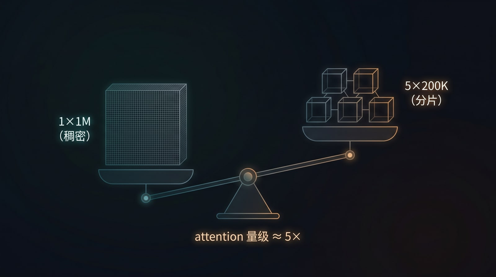
图：把同样的总 token 放上天平——左边一个 1M 的稠密上下文（致密的大块）和右边几个 200K 的局部分片（轻盈的小块）相比，前者的 attention 计算量级要重得多。这就是为什么账单、时延、可调度性三本账，往往都偏向“拆成多个小窗口”。
10.3.3 sub-agent 的收益，不只是省钱
很多团队把 sub-agent 当纯吞吐工具，这低估了它——它真正带来的，是质量曲线和成本曲线同时改善。单个超长上下文的失败模式，正是第 2 章那几条机理的合演：原料过多，相关证据密度被稀释；中间状态和历史痕迹污染当前任务；query 的位置不稳，关键约束被长正文淹没；而且一次失败，就要重做整段昂贵的大 prefill。拆成 sub-agent 之后，工作形态就变了：每个 agent 看到的上下文更短、更局部，位置偏置更可控；每个 agent 的输入更单纯，更接近一个单一任务；出错只需在局部 shard 重试，不必重灌整段全局上下文；coordinator 处理的是证据摘要和冲突，而不是整片原始语料的海洋。说白了，sub-agent 不是为了炫架构，而是为了把每个 agent 压回它更容易成功的工作区间，再把跨 shard 的协调，交还给 harness、session 和 verification。
10.3.4 什么时候仍该用一个超长上下文
但也别走到另一个极端，把什么都拆成 swarm。有几类任务，单个超长上下文仍然合理：要对全局原文做一次统一的排序、比对或证据归并时；任务主要是全局摘要、不涉及局部修改和反复迭代时；原料高度相关、拆开反而割裂语义连续性时；上下文能一次缓存、多轮查询主要复用同一大语料时；以及你更在意一次性的全局理解、而非并行吞吐时。只要这些前提稍一动摇，sub-agent 方案往往就开始占优——尤其当三条同时成立：材料天然可分 shard、子问题能先局部求解再全局汇总、每轮失败重试代价很高，这时就该优先考虑分解。
10.4 让 swarm 不失控的四条硬规则
多 agent 一旦上线，最先失控的通常不是模型质量，是控制面纪律。至少有四条规则要焊死。第一，子 agent 不直接宣布系统终态——只有 coordinator 加 verifier 能裁决 ready / failed，这是第 13 章那条假成功链的正面解药。第二，子 agent 之间不共享隐式上下文，能共享的只有显式的任务说明、事实流引用和被授权的中间产物，否则就回到第 5.3 节那种串扰。第三，每个子 agent 都必须能被单独恢复、单独取消、单独审计——群体里一旦有谁不可单独操作，排障时就只能整片重来。第四，任何协议、生命周期、回放或 scope 语义的变更，都要同步更新 fixture、门禁、E2E 和文档，否则多 agent 的复杂度会让一处不同步迅速扩散成多处事故。守不住这四条，多 agent 只会比单 agent 更快地制造混乱；守住了，它才真正变成能放大团队产能的协作系统。
10.5 把那条任务交给一个 swarm：谁有权说 ready
§10.4 那四条硬规则里，第一条最该被做成协议而不是口号——“子 agent 不直接宣布系统终态”。把它讲透，最好的办法还是回到那条贯穿全卷的周报任务，只不过这次，它不再由一个 agent 独力完成，而是被拆给一个小 swarm：
coordinator ──spawn_agent("data-worker", goal="渲染 q2 PDF")──────────▶ w1
coordinator ──spawn_agent("delivery-worker", goal="发到 #finance", needs=[a_pdf_1])──▶ w2
coordinator ──spawn_agent("verifier", goal="按契约核对产物", gating=true)──▶ v1
三个 worker 各干各的，但它们写进的是同一条事实流，只是每条事件都带上 actor 标明出处。于是那次熟悉的失败，在 swarm 里长这样：
{"seq":5, "actor":"agent:w1", "type":"artifact.written","kind":"report.pdf","artifact_id":"a_pdf_1"}
{"seq":7, "actor":"agent:w2", "type":"tool.returned","tool":"slack.upload","ok":false}
{"seq":8, "actor":"agent:w2", "type":"subagent.reported","status":"blocked","reason":"upload_incomplete"}
{"seq":9, "actor":"agent:v1", "type":"validator.result","validator":"slack.delivered","ok":false,"gating":true}
{"seq":10,"actor":"agent:coordinator", "type":"task.settled","state":"failed","reason":"required_validator_failed:slack.delivered"}
关键不在这串事件本身，而在谁有资格写哪一种事件。把它做成一张权限表，第一条硬规则就从一句叮嘱变成了系统强制的边界：
事件类型 允许写入的角色
artifact.written 任何 worker（只能写自己 scope 内的产物）
subagent.reported worker 自己（done / blocked / failed，仅描述本子任务的状态）
validator.result 仅 verifier
task.settled 仅 coordinator，且必须在所有 gating validator.result 之后
读懂这张表，整本书的论点在多 agent 这层闭合了。delivery-worker（w2）上传失败时，它能做的，是诚实地写一条 subagent.reported: blocked——描述“我这一步卡住了”；它不能做的，是写 task.settled——宣布“整单完成”。这一行权限，正是第 6 章那条“模型只能 model.claim、无权宣布终态”的规则，在 swarm 拓扑上的同构投影：worker 只能提议和汇报，verifier 只能裁定单项，唯有 coordinator 能在所有 gating 项落定之后，写下那一条 task.settled。
反过来想就更清楚了。一个偷懒的 swarm，如果允许 delivery-worker 自己喊一句“发完了，收工”，那它不过是把第 6 章那个单 agent 的“假成功”，原样乘上了 agent 的数量——每多一个能自宣终态的 worker，就多一个能撒谎的嘴。这也正是 §10.3 那个判断的另一面：sub-agent 的价值从来不是“多开几个并行”，而是在“多嘴多手”的同时，把裁决权死死收敛到一个角色。手可以很多，脑可以分工，但说“这单成了”的权力，整个 swarm 里只能有一份。2 谁都能宣布成功的系统，等于谁都没在负责成功。
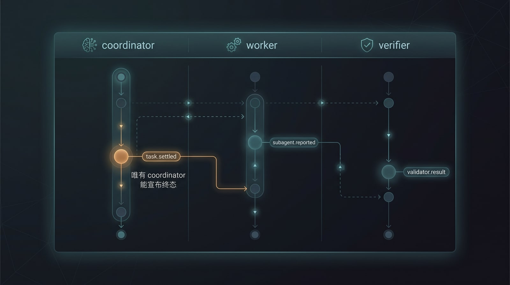
图：swarm 的事件写入权限。worker 只能写 subagent.reported、verifier 只能写 validator.result，唯有 coordinator 能写那条 task.settled 宣布终态——把“模型无权宣布终态”这条规则，做成了多 agent 拓扑上的强制边界。
10.6 一个 worker 中途崩了，群体怎么不塌
§10.5 演的是“失败被诚实地汇报、终态被正确地裁决”，那是一条相对干净的链：每个 worker 都活到了能写下自己那条 subagent.reported 的时刻。但真实的 swarm 里有更难看的一种情况——某个 worker 根本没机会体面收场，它在半道上崩了。进程被 OOM 杀掉、worktree 里一个本地依赖装不上、渲染库踩到一个段错误，于是它既没产出产物，也没来得及说“我卡住了”。这种“沉默的死”，恰恰是最考验控制面纪律的地方：一个没有角色化、不能单独恢复的系统，遇到它只有两条退路，要么整局推倒重跑，要么更糟——某个还活着的 agent 看见缺了块东西，自作主张地把窟窿填上，合成出一个假成功。
还是那三个 worker：data-worker w1 负责把 q2 数据渲染成 PDF，delivery-worker w2 负责把它发到 #finance，verifier v1 负责按契约核对。这次让 w1 在渲染到一半时崩掉。要紧的是看清，控制面是怎么把这次崩溃吸收进一条恢复链，而不是让它向上放大成一次全局重跑或一个绿色谎言。
第一道纪律，是 w1 的死讯只能以它自己的口吻被记下。崩溃本身由 coordinator 通过 wait_agent 观察到——子进程非正常退出，没有任何 artifact.written。注意这里有一个微妙但要命的边界：w1 能为自己写下（或被代写）一条 subagent.reported:{status:"failed"}，说的是“我这一步没成”，它绝写不出 task.settled。这正是 §10.4 第一条在崩溃路径上的回响——子 agent 描述自己这一步的死活，但永远无权宣布系统的终态。一个进程哪怕死了，它能污染的也只是自己 scope 内的那一格事实，碰不到那张只有 coordinator 能写 task.settled 的权限表。
第二道纪律，是恢复落在一个干净的工作区里，而不是原地缝补。coordinator 读到 w1 失败，并不去翻它崩溃时留下的半成品 worktree——那里可能有写了一半的 PDF、半截临时文件、一个坏掉的字体缓存。它做的是 §10.4 第三条所说的“单独恢复”：在一个全新的 worktree 里重新派发 w1 的子任务，给它一个新的 actor 身份 w1'，让它从干净状态重渲一次。整局里其余两个 worker 的事实、其余 shard 的进度，一格都不用动。这就是角色化与单独恢复合起来的红利：失败的爆炸半径，被收敛到一个子任务、一个 worktree。
第三道纪律，是下游 worker 因依赖未就绪而正确地等待，而不是抓着一个不存在的产物硬发。w2 的派工带着 needs=[a_pdf_1]。在 w1 崩到 w1' 重渲成功、a_pdf_1 真正落进事实流之前，w2 的前置条件就是不满足，它只能挂在 blocked 上等。这一条等待是被结构逼出来的，不是靠 w2 自觉——产物契约里那条 a_pdf_1 的依赖，物理上挡住了它去 slack.upload 一个空文件或一个上一轮的陈旧 PDF。把这条恢复链演出来，事实流大致是这样：
{"seq":12,"actor":"agent:w1", "type":"tool.called","tool":"pdf.render","args_digest":"…q2…"}
{"seq":13,"actor":"agent:coordinator", "type":"subagent.reported","subagent":"w1","status":"failed","reason":"worker_crashed:exit_signal_SIGSEGV"}
{"seq":14,"actor":"agent:w2", "type":"subagent.reported","status":"blocked","reason":"needs_unmet:a_pdf_1"}
{"seq":15,"actor":"agent:coordinator", "type":"subagent.respawned","of":"w1","as":"w1'","worktree":"wt_q2_retry","clean":true}
{"seq":16,"actor":"agent:w1'", "type":"artifact.written","kind":"report.pdf","artifact_id":"a_pdf_1"}
{"seq":18,"actor":"agent:w2", "type":"tool.returned","tool":"slack.upload","ok":true}
{"seq":19,"actor":"agent:w2", "type":"artifact.written","kind":"delivery.receipt","artifact_id":"a_rcpt_1"}
{"seq":20,"actor":"agent:v1", "type":"validator.result","validator":"shard.consistency","ok":false,"gating":true,"reason":"a_pdf_1 渲染自 shard 切换前的旧游标"}
{"seq":22,"actor":"agent:v1", "type":"validator.result","validator":"slack.delivered","ok":true,"gating":true}
{"seq":24,"actor":"agent:coordinator", "type":"task.settled","state":"failed","reason":"required_validator_failed:shard.consistency"}
这条流里藏着第四道纪律，也是最容易被“多开几个 agent”忽略的一道：verifier 是跨 shard 的最后一道闸。w1' 在干净 worktree 里重渲时，恰好赶上数据层做了一次 shard 切换，它读到的是切换前那一刻的旧游标，于是 PDF 本身渲染成功、slack.delivered 也为真——单看 w2 这条链，一切都绿。可 v1 的 shard.consistency 验证器是独立于任何单个 worker 的视角，它比对了产物所依据的游标与当前权威游标，seq:20 那条 ok:false 把这个隐患拦在了终态之前。于是 coordinator 在 seq:24 写下的不是 ready，而是一条理由明确的 failed。这恰好呼应了第 13 章那条“可闭合验证器要 sound、要独立”的要求——独立，意味着它不被任何一个声称自己干完了的 worker 牵着走。
把这条恢复链倒过来看，对比就刺眼了。一个只会“多开几个 agent”、却没把角色与单独恢复能力焊进控制面的系统，遇到同样的 w1 崩溃，只剩两种难看的结局。第一种是整片重跑：因为没有“单独恢复一个子任务”的原语，唯一安全的做法就是把三个 worker 连同已经算对的部分一起推倒，付一次完整的、昂贵的 prefill 和 API 账单，这正是 §10.3 想让你省下的那笔钱。第二种更危险：某个还活着的 agent——比如一个被允许自宣终态的 w2——看见缺了 a_pdf_1，顺手抓起上一轮缓存里的旧 PDF 发了出去，再写一条“已发送”，于是崩溃被一路向上放大成了一个绿色气泡，正是贯穿全书那条 t_9f2 假成功的 swarm 翻版。区别从来不在 agent 的数量，而在那张权限表是否还立着：worker 只描述自己这一步、恢复落在干净 worktree、下游因 needs 未就绪而等待、verifier 独立把跨 shard 的隐患拦下、唯有 coordinator 在所有 gating 项落定后写终态。守住这五点，一个 worker 中途崩了，群体顶多慢一拍；守不住，它崩的那一下，会被整个群体齐声放大成一句谎话。
-
Anthropic, Scaling Managed Agents: Decoupling the brain from the hands. 本章在此处使用其 many brains / many hands 的组织视角，说明 coordinator、worker 与 verifier 的分工；对应第 23 章参考文献 3。 ↩
-
本章在此处综合 Claude Code 的
AgentTool.tsx、loadAgentsDir.ts、teammateMailbox.ts、worktree.ts等实现，以及 Codexspawn_agent/send_input/wait_agent/resume_agent等工具原语，用来说明多 agent 需要角色、通信、隔离、汇总与恢复这些一等能力；对应第 23 章参考文献 21、24。 ↩ ↩2 -
本章在此处综合 Anthropic 的 managed agents 视角、OpenAI API Pricing 关于
under 270K标准费率的限定、Google Gemini 1.5 关于 1M context pricing tiers 与 latency 的说明、Google long context 文档关于 retrieval-cost tradeoff 与 caching 的说明、LongLLMLingua 关于 higher computational cost / performance reduction / position bias 的概括，以及 MInference 关于 1M token prefill 代价的摘要数字，用于说明 sub-agent / swarm 在质量、成本与时延上的优势；对应第 23 章参考文献 3、14、15、18、19、20。 ↩ ↩2
11. 从抽象到原则：Harness Engineering 的设计法则
前面几章把根因、样本、失败、架构和协作面都铺开了。第 11 章不再发明新部件，而是把这些观察压成一套更高层、却仍能落地的设计法则。
最值得借鉴的，不是某个仓库的代码排版，而是 Fowler / Thoughtworks 那条线对 harness engineering 的抽象：别把 agent 的成功，寄托在一次 prompt 奇迹上；而要把任务状态、反馈回路、工具边界和验证证据，做成系统外部、可检查、可演化的控制层。1 所以这一章不换新词，它只把第 6 章那九个维度，翻译成团队能拿去做设计评审、事故复盘和路线排序的九条原则。
11.1 第一原则：把模型能力和控制系统分开
Claude Code 和 Codex 都很强，但它们真正可迁移的启发，不在“某个 prompt 怎么写”，而在两者都在做同一件事——把模型的生成能力，和控制系统，分成两层。模型负责提出候选动作、生成候选产物、总结局部信息；控制系统负责守住事实流、生命周期、能力平面、产物与验证、回放、隔离与恢复、协作、知识分层和操作员面。这条线一旦没被切开，团队最终一定会重新滑回第 5 章那类事故里——因为一个没有外层控制的生成器，迟早会把“概率上的连贯”当成“运行时的事实”。后面那九条原则，都是这第一条的展开。
11.2 九条原则，连同它们的反面
把第 4.8 节的九个维度和第 6 章的统一词汇表再压一道，会得到九条原则。它们最好成对地读——每一条原则的背面，正好站着一个反模式，而那个反模式，又恰好对应着第 5 章某一类事故。
先是真相的两块底座。事实流原则要求契约状态必须持久在 prompt 和聊天上下文之外；它的反面是那种“只有 prompt 的契约”——比如指望“agent 应该记得发送文件”，结果记忆一老化就忘，正是第 5.1 节那种漂移。生命周期原则要求阶段单调、公开，并在 API、UI、operator 三个表面保持一致；它的反面是“从 UI 反推事实”——气泡显示 done，就当任务完成，于是落进第 5.2 节那种假一致。
再是能力与完成。能力平面原则要求所有外部能力都进入统一调度面，而不是各自攥着私有状态机；它的反面，是用 stderr 文本、自由格式日志或缓存快照来充当状态协议，也就是第 7 章那段 Python 脚本一路污染父任务的根源。产物与验证原则要求主产物显式归属、ready / failed 由验证器和证据裁决；它的反面，是用文件名、最近修改时间或目录启发式去猜主产物，或者让“尽力而为”的验证器不影响终态——第 5.4、5.5 节那两类“假成功”就是这么来的。
接着是看见、隔离与协作。回放原则要求回放、摘要和历史重建都从同一条事实流派生；它的反面，是让 replay、summary、历史页各攒一套“差不多”的影子状态（第 8 章）。隔离与恢复原则要求 session / topic / worktree 的 scope 被当成硬边界，resume、worktree、background task 是一等运行时能力而非异常补丁；它的反面，是把这些当边缘补丁打，于是 scope 一断就串（第 5.3 节）。协作原则要求 sub-agent / swarm 的价值来自角色化、隔离、汇总和验证，而非单纯并行；它的反面，是让子 agent 直接宣布系统终态、或直接污染父任务事实（第 10、13 章）。
最后是沉淀与监督。知识分层原则要求知识沿着 wiki → skill → docs / AGENTS.md → CI / validator 这条长循环晋升；它的反面，是把所有经验都堆进一个永不清理的大 prompt。操作员原则要求 dashboard、门禁、事故归因和发布声明都绑定同一条事实流与同一组证据；它的反面，是让仪表盘指标、门禁状态和运行时事实流脱节，留下第 9 章那块“事实流里无源”的影子绿。
成对地读完，这九条原则还停在断言的层面；真正让人记住一条原则的，往往是它背面那个具体得发疼的现场。挑其中三条最承重的，把反面演一遍，原则就不再是口号。先看事实流原则的背面。一种很常见、也很省事的写法，是干脆不给契约状态找一个 prompt 之外的住所：周报任务 t_9f2 的“要发到 #finance”这件事，就活在系统提示和聊天历史里，靠一句“记得把生成的文件发出去”嘱托模型。头几轮它确实记得。可上下文越堆越长，那句嘱托被推到窗口边缘，softmax 一稀释，它的权重就摊薄到几乎为零——slack.upload 第二段 completeUpload 超时静默失败时，模型脑子里早已没有“还欠一次投递”这条悬而未决的义务，于是顺着语义惯性宣布“已发送”，正是第 5.1 节那种“记忆一老化就忘”的漂移。正解不是把嘱托写得更重，而是把“这件任务要求一件 delivery.receipt”从 prompt 里搬出来，做成事实流上一条持久、带 seq 的契约：它不依赖任何一轮注意力还记不记得，终态裁决时验证器照样能按 kind 把这件本该存在却不存在的产物“点名缺席”。义务一旦落在事实流上，就不会随窗口滑出而蒸发。
再看产物与验证原则的背面，它常以两个看似无害的捷径同时出现。第一个捷径是用启发式去猜主产物：任务目录里躺着 q2-weekly.pdf、draft.pdf、notes.pdf 三个文件，系统按“名字里带 weekly 的、或最近修改的那个”认定它是交付物——这恰是第 5.4 节那道执行缺口，没有 owner_rule:"single" 的显式归属，哪天有人补了一版 q2-weekly-v2.pdf，主产物的指认就开始抖。第二个捷径更隐蔽：把投递校验做成“尽力而为”，slack.delivered 跑了，发现没有送达回执，却只在日志里记一句 warning 而不阻断终态。两个捷径叠起来，t_9f2 那条本质失败的任务就被放行成了绿色完成气泡。正解是把这根支柱钉到 schema 上——主产物经 required_artifacts 显式声明、owner_rule:"single" 唯一归属，投递证据必须是一件可寻址的 delivery.receipt artifact 而非一句日志，再让 slack.delivered 带上 gating:true：它的 ok:false 一票否决，直接把终态钉死成 failed。猜出来的产物会骗人，被点名缺席的具名产物不会。
第三条是协作原则的背面，它在 swarm 里最容易被无意识地犯下。把 t_9f2 拆给 data-worker、delivery-worker、verifier 三个子 agent 之后，一个图省事的实现会让 delivery-worker 在自己那段跑完时，直接往事实流写一条 task.settled state=ready——毕竟“我这边的活干完了”。可它的活只是投递，它既不知道 PDF 那条产物是否齐备，也无权代表整个系统下结论；completeUpload 超时它甚至自己都没察觉，却已经替全局宣布了终态。这正是第 10.5 节那张权限表要堵死的事故：协作的价值来自角色化、隔离、汇总和验证，而不是让任何一个 sub-agent 直接宣布系统终态、或污染父任务的事实。正解是把“谁有权写哪种事件”做成系统强制的边界——worker 只能写描述自身子任务的 subagent.reported（done / blocked / failed），validator.result 只许 verifier 写，而 task.settled 仅 coordinator 能写，且必须排在所有 gating 验证器结果之后。于是 delivery-worker 撞上超时，它能写的最强一句话只是 subagent.reported status=blocked；终态由谁说了算，从一句口头约定，变成了任何子 agent 都越不过的写入权限。
这九条的价值，在于它们不依赖 Claude Code 用 TypeScript 还是 Codex 用 Rust，也不依赖你用不用 MCP、worktree 或某个特定 UI。它们描述的是控制系统必须守住的结构性边界——正是第 6 章那张总图，在团队决策语言里的译本。
11.3 反模式的共同根
把上面九个反面摆在一起看，会发现它们其实是同一种病的九种症状：都在把“系统说真话”，悄悄退化成“系统看起来差不多在工作”。 prompt 里的契约、UI 反推的事实、stderr 充当的状态、文件名猜出的产物、各自攒的影子回放——每一种，都是在某一层用一个“看起来对”的近似，顶替了一个“可被验证为真”的事实。它们的诱惑也一模一样：一开始都更省代码、更快上线。代价则统一地推迟到后面，再以事故的形式、连本带利地收回来——而且因为它们看起来一直在工作，账单往往要到一次用户面前的“假成功”才结清。
11.4 短循环和长循环
所有 agent 都有一条短循环：生成、行动、观察，再生成。但驾驭工程真正在意的是长循环——一次事故怎样进 wiki，wiki 怎样晋升成 skill，skill 怎样进 AGENTS.md 或 docs，docs 里的约束又怎样再沉成 CI、validator 和 dashboard 信号。2 用第 6 章那套词汇说，这一节其实是在讲“知识分层”和“操作员面”如何反过来，去塑造事实流、验证器和门禁。差别很实在：没有长循环，agent 每一次都像个从零开始的实习生，昨天踩过的坑今天照踩；长循环一旦跑起来，组织才把一次失败，变成了一份长期的免疫力。
11.5 知识与 skill 的晋升纪律
不是所有经验都配写进 AGENTS.md。更稳的治理是一套 promotion / demotion 纪律：重复出现、跨任务稳定、能被验证的经验，才晋升；过时、低频、无法验证或会误导的，要降级或删除——否则知识层会慢慢变成一个长期的噪声源，比没有还糟。skill 也不是一袋 prompt：一个合格的 skill，至少要有触发条件、输入输出契约、执行步骤和验证方式。3 对这类系统而言，skill 的价值不在“让模型多知道一点”，而在“把组织经验，变成可执行、可检查的流程”。Codex 用 AGENTS.md 的文档化和分层作用域，说明了什么该常驻、什么该按需加载；Claude Code 用 loadAgentsDir.ts、skills、hooks、memory scope，说明了知识成熟后怎样沉进 agent 定义、技能包和能力边界。知识治理从来不是单独的文档活——它会反过来塑造能力平面、协作拓扑和验证器边界。
11.6 反身 harness 的边界
往后看，harness 会越来越多地修改自己：更新文档、生成测试、补验证器、建议 schema 迁移。这是趋势，但反身能力必须分级。低风险的变更可以自动化；而一旦触及事实流 schema、权限边界、验证独立性或合规目标，就必须把人留在决策里。道理很硬：不能把目标函数、权限边界和验证器的独立性，交给提案者自己去定义——那等于让被告兼任法官。一个会自我演化的 harness，恰恰最需要在这几处，保留一道人来把的关。
-
Birgitta Bockeler, Harness engineering for coding agent users. 本章在此处使用其关于把任务状态、工具边界、验证反馈与控制回路从 prompt 中外移出来的抽象，总结为本书的可迁移原则；对应第 23 章参考文献 1。 ↩
-
本章在此处使用 Karpathy 的知识记账思路，并结合本文前述 harness 实践，说明 wiki -> skill ->
AGENTS.md/ docs -> CI / validator / dashboard 的长循环；对应第 23 章参考文献 9。 ↩ -
本章在此处综合 OpenAI 与 Karpathy 关于
AGENTS.md保持短目录、经验 promotion / demotion 的治理思路；对应第 23 章参考文献 2、9。 ↩
12. 工作流到里程碑映射：务实路线图
见过一支团队，把顺序做反了。第二个月，他们上线了插件市场和一块很漂亮的 dashboard——老板满意，demo 好看。可那时候，后台还没有一条只追加的事实流，终态还是模型自己报的。结果到了第五个月，事情开始诡异地坏：每个插件按自己的方式报状态（第 7 章那种污染，乘以插件数量），dashboard 上挂着一块查询算出来、事实流里无源的“绿”（第 9 章那种影子真相），而当某个任务真的卡住时，没人能说清它此刻到底是什么状态——因为这套系统从一开始就没有过一个权威的真相可供追溯。他们不是缺功能，是把楼盖在了没浇地基的地方。
所以这一章不谈 backlog，谈顺序。它要把第 4.8 节那九个架构维度，按依赖关系排成施工序——而不是按“哪个 demo 好看”排。一句话定调：先修真相，再修体验；先把事实流、生命周期和验证守住，再去开放生态、丰富协作、抬升运营面。 下面九个里程碑（R1–R9）就是这条施工序，每一个都标着“它为什么在这个位置、抽掉它会塌回哪一章的事故”。
R1 — 事实流：先立起唯一的运行时真相
一切的地基。把 task、turn、tool result、artifact、validator result 都写成一条只追加（append-only）的事实流，明确 session / thread / transcript 的持久格式和恢复入口，并立下一条铁律：所有 UI、API、dashboard、replay 都只能投影这条流，不能各自发明状态。它必须排第一，因为后面每一项能力——回放、操作员面、验证——都要从这条流里取真相；地基没浇，上面盖什么都是影子。
R2 — 生命周期：把任务状态变成一道单调阶梯
有了事实，还要给它定形状。把事件类型化（harness.event.v1 与 task_status 桥接），让生命周期至少覆盖 queued、running、verifying、ready、failed 这几级，并强制 deep-search、background task 这类工序从“往 stderr 打字”迁移到结构化事件。它紧跟 R1，因为没有单调阶梯，进度就只能靠猜——那正是第 5.1 节那种漂移的温床。
R3 — 能力平面：把工具、MCP、脚本、人工输入收成一个口
真相与生命周期立住之后，才轮到放外部能力进来。给 shell、Python、Node、MCP、browser、external API 一个统一的事件入口，支持非主语言的事件发射器（如 HARNESS_EVENT_SINK），并要求每一次工具调用都带上 session、scope、权限和审计信息。顺序很关键：必须先有 R1/R2 那条能收口的流，外部能力才有地方汇入；反过来先开生态，就会是开头那支团队的下场——第 7 章的污染按能力源的数量翻倍。
R4 — 产物与验证：完成与否，由证据裁决
能力进来了，就得管住“它说完成”。在 manifest / policy / task 字段里声明 primary artifact，让类型化的验证器返回结果、失败类别、证据路径和耗时，并立一条硬规矩：ready / failed 只能由 validator 加 evidence 裁决，绝不能由生成器自报。它排在能力平面之后，因为只有先有统一的产物引用（R3），验证器才知道该去验哪个文件——否则就是第 5.4、5.5 节那种“验了个寂寞”。
R5 — 回放：让实时流和历史流共享一个对象模型
前四步把后台的真相立住了，这一步管它能不能被正确看见。让 API、SSE、历史回放、刷新恢复都用同一份事实模型，让回放测试覆盖重载、重连、会话切换和流中断，并用小型 fleet 门禁去验线上 worker 的真实回放路径。它要在能力与验证之后，因为回放要投影的，正是 R1–R4 攒下的那些事实；地基里还没有的东西，回放也放不出来。（细节见第 8 章。）
R6 — 隔离与恢复：把 worktree / resume / background 做成一等能力
让 root task、child task、worktree、owner、scope 显式绑定，让 resume 能恢复 transcript、未完成的 tool use、artifact 引用和工作目录，让 background task 和 disk output 进入事实流而不是只写本地日志。它排在回放之后，因为“断点续跑”本质上是“对一条可回放事实流的再进入”——没有 R5 的对象模型，resume 恢复出来的状态就和实时推送对不上。
R7 — 协作：让 sub-agent / swarm 有角色、有通信、有终态裁决
把 coordinator、worker、verifier、summarizer 的角色和权限分开，让子 agent 只回 summary、evidence、diff、artifact reference 而不污染父上下文，并规定只有 coordinator 加 verifier 能宣布 root task 的 ready / failed。多 agent 必须排在隔离与恢复之后，因为协作的前提是每个 agent 都被 scope 和 worktree 关在自己的边界里（R6）；边界没立就放群体编排，就是第 13 章那条“局部成功伪装成系统成功”的失败链。
R8 — 知识分层：把经验从 wiki 晋升到 skill / docs / AGENTS.md / gate
让 AGENTS.md 保持短目录、细节下沉到 docs 与 skills，让重复事故先进 wiki、稳定经验再晋升为 skill、validator、fixture 或 CI gate，并强制过时经验要被降级或删除，免得知识层变成长期噪声源。它靠后，因为知识分层是在前面那套运行时跑顺、开始产生可复用经验之后，才有东西可沉淀。
R9 — 操作员面：把 dashboard、门禁、回滚、复盘接到同一条事实流
最后，让 dashboard 展示生命周期、artifact、validator、child task、scope 和最近 summary，让门禁与发布声明绑定证据、不接受轶事式的“我测过了没问题”，并让每一次事故都沉淀成失败模式条目、复盘模板和可回放 fixture。它收尾，因为操作员面消费的是前面所有里程碑攒下的事实——它是这条施工序的最后一层装修，而不是地基。（细节见第 9 章。）
这条序是按依赖排的，不是按 backlog 的美观排的：R1–R2 先立真相与生命周期，R3–R4 让外部能力和完成裁决进入协议，R5–R7 解决回放、恢复与多 agent 协作，R8–R9 才把组织知识和操作员控制面接上。把它倒过来做，就会像本章开头那支团队——在还没有稳定事实流的时候，就先把外部复杂度放了进来，之后每一步都得在流沙上返工，越往后越贵。
这条路也不是凭空想的。Claude Code 已经把 compaction、resume、worktree、子 agent 摘要、外置 output、权限和扩展机制做进了产品，Dive into Claude Code 把它们整理成五层结构；Codex 则把 thread-store、rollout、app-server、tool registry 这些“骨架能力”做成了显式模块。路线图要做的不是去复制某个仓库，而是把这些成熟样本已经用代价证明“必要”的部件，按依赖顺序，转译成你自己系统里的实现次序。
R1–R9 的试金石：把那条周报任务丢进施工序
抽象的施工序，最好拿一个具体任务来检验它每一步到底防住了什么。还是第 6 章那条任务——把 q2-weekly.pdf 发到 #finance，结果两段式上传的第二段超时、模型却声称“已发送”。把这条任务依次丢给 R1 到 R9，能清楚看到“假成功”是在缺哪一环时钻进来、又是在补上哪一环时被关在门外。
先看没有 R1 的世界。没有那条只追加的事实流，slack.upload 第二段超时这件事根本没有落脚处——它要么只活在一行转瞬即逝的 stderr 里，要么干脆被模型那句“已发送”盖过去。连失败本身都不可见，后面八步就都无从谈起。所以 R1 不是“第一项功能”，而是让这次失败第一次有资格被看见的前提：有了它，那条 seq:7 ok:false 才会永久躺在流里，等着被后面的环节追究。
R2 把这条流定出形状。任务从 running 进 verifying，是模型那句“我做完了”触发的——但 R2 立的单调阶梯规定，这一步只换来“请求验收”的资格，换不来“宣布通过”的权力。于是真正的裁决，被往后推给了 R4。
R4 是这条任务第一个被实打实接住的地方。产物与验证里声明了主产物必须包含一张 delivery.receipt，而那张回执因为上传失败从未生成；gating validator slack.delivered 拿不到证据，按“ready 只能由 validator 加 evidence 裁决”这条硬规矩，终态只能落到 failed。换句话说，哪怕前面所有环节都没拦住，到 R4 这一步，这次“假成功”就已经被判了出局。R3 在这里是 R4 的前提——正因为能力平面（第 7 章那份 slack.upload 结果契约）规定了“成功必须 emit 一件具名回执产物”，R4 的验证器才知道该去找什么、找不到时该点谁的名。
再往后，R5 到 R9 不是为了“再抓一次”，而是为了让这次已经判出的失败，在每一个表面都说同一句实话。R5 保证刷新或重连后，UI 折叠出来的仍是 failed 而不是那个绿气泡；R9 则补上最后一道兜底——assert_terminal_authentic 这道操作员门禁，专防“万一某条 buggy 路径硬把它写成 ready”，并把它沉成 dashboard 信号和 runbook。一次失败、九个里程碑，落点高度集中在 R3/R4，再由 R1、R5、R9 在前后兜住可见性与一致性——这正说明施工序不是九件平摊的活，而是一条有主次、有依赖的承重结构：地基（R1）不浇，连失败都看不见；承重墙（R3/R4）不立，失败就拦不住；装修（R9）不做，拦住了也没人看得懂。
13. Harness 必要但不充分
路线图一讲完，必须立刻收边界。否则团队很容易把 harness 当成万能解释——产品哪里不好，都往“harness 没做好”上推。这一章就干一件事：把 harness 能解决什么、不能解决什么，干净地切开。
13.1 一次“假成功”：研究任务报了 ready，交付的却是错文件
先看一次很典型的翻车，从用户的视角。
任务是这样下的：“读 12 篇材料，生成一份 20 页汇报，并附带可演示的 slides。”系统表面上做得一板一眼——起了研究 worker，调了 web 和 MCP 搜索，写了草稿，最后回了一个 ready，外加一个 report.pptx。用户在工位上双击打开它，期待看到那 12 篇材料汇成的新汇报。然后他愣住了：打开的是上个季度的旧模板，引用残缺，而这次真正写出来的新内容，全躺在一个谁也没提过的中间 Markdown 文件里。系统从头到尾没报一个错。它只是，平静地，交付了一份错的东西，还盖了个“完成”的章。
顺着这次“假成功”往回追，会发现它不是模型在某一步答错了，而是五层架构各漏了一点约束，最后在用户面前合成出来的。最底下，session 层从没把“哪个是 root task、派生了哪几个 child、哪个才是 primary artifact”钉成单一事实——交付物到底是哪个文件，系统自己都没共识。往上一层，能力平面里，研究 worker 用 Python 和 MCP 拉资料、打包 worker 用 shell 生 slides，两边却只在各自的自由文本里顺口提了一句产物路径，没有一个统一的 artifact 引用把它们对齐——于是“新内容在哪”这件事，在两个 worker 之间就已经失联了。再往上，verifier 只检查了“是不是生成了一个 pptx”，没去查引用够不够、主文件归不归属、内容是不是基于这次的 report——于是那个旧模板，轻松通过。再往上，operator dashboard 只看得到一句“任务 ready”，看不到是哪个 child 报了哪个产物、哪个 validator 其实压根没覆盖到关键约束。最顶上，swarm 层的 coordinator 只收到打包 worker 一句轻飘飘的“slides generated successfully”，没有附带证据的 summary，于是它信了，把这次局部的“跑完了”当成了整个系统的“做对了”。
这条链的代表性就在这里：**session → 能力平面 → verifier → dashboard → swarm，五层每层只松了一扣，单独看都不致命，叠起来就合成了一次完整的谎言。
图：“假成功”的五层断裂。session、能力平面、verifier、dashboard、swarm 每层只松一扣，单独看都不致命；可一旦缺口对齐，就在用户面前合成出一个根本没发生的“完成”。**
13.2 顺着这条链，看五层架构怎样真正落地
要修住它，不能在最末端补一句“更强的提示词”，得顺着这五层逐层把扣收紧。
session 层先做硬事实：root task 一创建，就把本轮交付物声明成 report.md 与 slides.pptx，并把每个 child 的 owner、role、scope、worktree、预期产物类型都写进事实流。这样 coordinator、replay、dashboard、verifier 读的才是同一份任务定义，而不是各猜各的。能力平面 层再做统一入口：研究 worker 无论用 Python、Node、shell 还是 MCP，结果都只能经由统一的事件和 artifact 报告面回传——脚本可以自由实现，但不能自由定义状态协议；能力可以多样，但产物引用、scope 绑定、任务归属必须一致。verifier 层负责终态裁决：它不只看“文件存在”，还要查这是不是被声明过的 primary artifact、引用和页数达没达标、slides 是不是基于当前这版 report 生成、证据落在哪——这些全过，root task 才配进 ready，否则就该停在 verifying 或落到 failed，而不是把验证的成本甩给用户去双击发现。dashboard 层负责把这条链摆清楚：值班的人要能一眼看到谁派了哪些 child、每个 child 最近的 summary、哪个 artifact 被报告、哪个 validator 红了、证据在哪——这样用户投诉进来，是沿着事实流定位“哪一层断了”，而不是从零开始猜。swarm 层最后收束成单一真相：coordinator 只管拆解、汇总、裁决，研究 worker 只管搜证，draft worker 只管生成，verifier worker 只管检查，没有任何一个 worker 能单独宣布整个系统成功。只要这条规矩还在，局部的“跑完了”就再也伪装不成系统的“做对了”。
13.3 它修到哪为止，哪里就不再是它的职责
把上面这套都做对了，也只换来一件事：编排是正确的。它换不来完整的产品质量。
这条边界，Claude Code 和 Codex 自己就是证据。前者即便已经背着一套很重的 harness 运行时，仍然在权限、模型选择、MCP、session、worktree、进度管理上压着大量工程；后者即便把 thread/turn/item、tools、sandboxing、approvals 抽得清清楚楚，也照样得靠强模型、强测试、强治理来保住结果的质量。换句话说，一个高质量的代码 agent，在 harness 之外还欠着一长串东西——一套像样的模型选择与路由策略、工具的安全边界（沙箱、认证、权限门禁）、面向编码工作流的提示词与策略对齐、测试生成与修复的纪律、仓库感知的编辑质量与评审循环，以及对延迟和成本的治理。这些没有一样是 harness 能替你做的。
所以可以把 harness 看成系统的运行时事实层：没有它，质量根本无法被信任——模型再强，你也不知道它报的“完成”算不算数；可只有它，质量仍然悬在模型、工具和产品纪律上。它划的是“系统说真话”和“系统是好产品”之间那条线。前者，是被一连串失败模式逼着我们建起来的：没完成就不许显示完成，产物无效就不许交付，验证没过就不许进 ready，会话一切就不许串状态。后者，仍然依赖模型路由对不对、沙箱严不严、提示词与策略齐不齐、评审纪律松不松。
记住这条线，是为了避免另一种过度工程：把 harness 当成产品质量的全部。 它能让系统不撒谎，却不能保证产品判断正确、模型选得最优、用户需求被真正理解、成本足够低、体验足够好。harness 是地基和承重墙——它决定楼塌不塌；但住得舒不舒服，还得看里面的装修、采光和动线。
13.4 那条线的右边，还能再切一刀：可闭合与补不齐
“系统是好产品”这半边，其实还能再切一刀——而这一刀，直接决定了一个很有现实分量的问题：哪些事，能靠 harness 加一个够用的（哪怕是开源的）模型补齐；哪些事，连最强的前沿模型也补不齐。分界线只有一句话：这个领域，有没有一个可闭合的验证器。
先把“可闭合”说清楚。一个领域是可闭合的，前提是你能为它造出一个验证器 V，让 V(任务, 候选产物) 满足三个条件：它可靠（极少把错的当成对的，也就是假阳性低）、它便宜（验一遍的代价远小于生成一遍）、它独立（不依赖生成它的那个模型自己打分）。一旦三者齐备，第 3 章那条负反馈环就从一个比喻，变成了一笔能算的账。设单次生成通过这个可靠验证器的概率是 p，那么独立采样 \(k\) 次、至少有一次通过的概率大约是 \(1-(1-p)^k\)——只要 \(p\) 不是零、\(k\) 能往上加，它就指数地逼近 \(1\)。换句话说，在可闭合的领域里，“质量”不再取决于模型单次有多神，而取决于你愿不愿意多生成几次、再让一个独立验证器去裁。模型只要不太差，harness 的“生成—验证—重试”循环就能把成功率抬到生产可用——这恰恰是为什么一个开源模型加一套硬验证，能在这类领域和前沿模型掰手腕。
图：可闭合领域里的那笔账。横轴是独立采样的次数 k，纵轴是“至少有一次通过独立验证”的概率；只要单次通过率不为零、各次采样足够独立，曲线就随 k 增大快速抬升、逼近上方那条“近乎必成”的虚线。前提一旦不独立，这条曲线就不再成立。
得诚实地补一句分寸：上面这不是一个严格定理，而是一个足够硬的工程判据。它依赖三个前提都真的成立——验证器假阳性要低（不然你只是更快地通过错误答案）、各次采样要足够独立（同一个模型反复犯同一个错，k 加再多也没用）、p 不能恰好是零（模型连一次都碰不对，循环就无从收敛）。前提一松动，曲线就不再那么漂亮。但方向是确定的，而且它正好解释了一件事：为什么 coding 是可闭合领域的样板。
代码这个领域，简直是为“可闭合”量身定做的——它的验证器多到奢侈，而且条条满足那三个条件。编译器和类型检查器是独立且便宜的可靠裁判；单元测试、属性测试、端到端测试把“对不对”变成可机器判定的断言；linter、静态分析、可复现的运行结果，每一样都是不依赖生成者的独立信号。所以一个 coding agent 的产出质量，根本不必押在“模型这次写得对不对”上——押在“测试过没过、类型检查过没过、复现成功没成功”上就够了，而这些恰恰是 harness 最擅长接进终态裁决的东西。这也呼应了第 16.4 节那条路由策略：把可闭合的那部分工作，大胆交给更便宜的开源模型，背后用 gating validator 兜住质量。
顺着这条判据看出去，可闭合的领域远不止 coding。形式化数学有证明检查器，data transformation 有 schema 与约束校验，IaC 与配置有 dry-run 加 policy 检查，SQL 有结果集比对，带参考答案的翻译有引用比对，检索类任务有“引文是否真实存在”的核验——凡是“检查一个答案对不对，比从头想出这个答案便宜得多”的领域，都落在可闭合这一侧。它们的共同点，就是那个生成与验证之间的代价不对称：难的是做出来，容易的是验它对——而 harness 的全部本事，正是把“容易的那一半”做成系统化、独立、阻断终态的关卡。
可补不齐的那一侧，恰恰是因为这个不对称塌掉了。UX 好不好、这个功能是不是用户真正要的、这段文案的调性对不对、产品该往哪个方向走、一个设计在审美和伦理上能不能站住——这些没有一个便宜、独立、可靠的验证器。它们的“验证器”就是人本身的判断，而人的判断昂贵、主观、还难以复现（同一个设计，两个人、甚至同一个人在不同时候，给出的裁决都未必一致）。这正是前面讨论资源时那个属于人因（姑且记作 R3）的部分：它的瓶颈不在模型能力，在于根本没有一个可闭合的裁判可以放进循环。所以这里有个很反直觉、却很重要的结论——补不齐 UX 的，不是“开源模型不够强”，换上最强的前沿模型同样补不齐，因为缺的从来不是生成能力，是验证的闭合性。在这种领域硬堆模型，是把钱花在了瓶颈的对面。
于是这一刀，给团队留下一个可以天天用的决策动作：在赌一个领域“能不能用 harness 加模型做下去”之前，先问一句——这里有没有一个 sound、便宜、独立的验证器？ 答案是“有”，那就别纠结模型够不够顶级，去把那个“生成—验证—重试”的循环搭硬（怎么造、怎么养这样一个 sound、便宜、独立的验证器，是第 17 章要专门讲的）；答案是“没有”，那就别幻想靠更强的模型补齐，老老实实把人放进环里，让 harness 去服务人的判断，而不是替代它。这条判据，把第 16 章那句“治理建在同一条事实流上”，又往前推了一步：连“这件事到底该不该交给模型”，都能在动工之前，先用验证器的闭合性掂量出来。
14. 可执行清单
边界讲清之后，剩下的工作就是把前面各章的要求压成能执行的检查项。第 14 章不是新观点，而是把第 4.8 节那九个维度压成可以拿来做合并前、上线前、事故后的动作清单，并补上一条匿名失败链的逐层排查顺序。
14.1 维护者预合并清单（影响 harness 的 PR）
- 变更映射到显式用户可见不变量。
- 契约状态能跨崩溃/重载/压缩持久存在。
- 生命周期迁移是单调的，并有测试覆盖。
- 产物选择使用声明式策略，而不是把启发式回退当主路径。
- 必要时验证器失败会阻断终态成功。
- 会话/主题作用域检查能防止跨会话污染。
- API 和 SSE 回放暴露同一份任务事实。
- 操作员摘要/仪表盘信号包含新的失败模式。
- 新增 sub-agent / background task 路径时，角色、scope、summary 和 validator 一起落地。
- 小型 fleet 门禁至少在两台主机上通过。
- 契约变更时，文档、fixture、脚本、端到端测试在同一个 slice 更新。
14.2 第三方 app/skill 开发者清单
- 声明单一规范
primary产物。 - 为存在性、大小和领域约束定义验证器。
- 只使用稳定生命周期/任务 API 字段。
- 当
HARNESS_EVENT_SINK可用时，通过它发出结构化进度。 - stderr 用于诊断，不用于契约状态。
- 确保 hooks 幂等（尤其是
before_spawn_verify）。 - 为你的工作流测试重载/会话切换行为。
- 如果工作流会 spawn 子 agent，声明其摘要格式、产物归属和取消/恢复语义。
- 验证失败路径会产生操作员可读证据。
14.3 事故响应清单（状态漂移 / 污染类）
- 对比
/api/sessions/:id/tasks快照和 UI 气泡/页头。 - 检查 SSE 流是否缺失或存在越界
task_status事件。 - 确认回放和实时事件上的 session/topic 标签。
- 检查最终快照中是否有重复 deep-research/run_pipeline 任务。
- 验证阶段顺序单调性和进度范围。
- 修补前捕获诊断 JSON 和 curl 提示。
- 修复后重新运行小型 fleet 门禁；不要接受仅本地验证。
14.4 匿名失败链的逐层落地检查
如果你正在修第 13.1 节那类“看似完成、实际交错文件”的事故，可以直接按下面这条链检查，不要一上来就改 prompt。
-
session：root task 是否显式声明 primary artifact、child task、owner、role 和 worktree。 -
session：artifact 报告是否带 task id / session id，而不是只有自由文本路径。 -
capability plane：Python / Node / shell / MCP 调用是否都通过统一事件入口回传状态与产物。 -
capability plane：外部能力是否把引用、下载物、临时文件写进了声明过的 scope，而不是写进任意目录。 -
verifier：是否同时验证“文件存在”“文件归属正确”“内容足够新”“关键业务约束达标”。 -
verifier：失败时是否留下了 validator 名称、失败类别、证据路径和持续时间。 -
operator dashboard：是否能直接看到 root / child task 关系、最近 summary、最近 artifact、最近 validator 结果。 -
operator dashboard：是否存在只在 dashboard 里出现、却无法回指事实流的影子状态。 -
swarm：coordinator 是否只做拆解与裁决，而不是自己悄悄替 child task 兜底宣布成功。 -
swarm：child agent 的 summary 是否包含可验证产物引用，而不是一句模糊的 “done”。
这组检查项的目的，是把“问题出在 session、能力平面、validator、dashboard 还是 swarm”快速切开。只要团队还在把这五层混成一个“agent 没做好”，修复成本就会始终过高。
14.5 参考架构落地自检（卷三的具体工件是否到位）
前一组清单切的是“事故出在哪一层”，这一组切的是更早的问题：你照着卷三搭出来的那套参考架构，关键工件到底有没有真正落地。它逐条对应第 6 到 10 章那条“假成功”任务被堵死的每一道缝——任何一条还打着叉，那道缝就还开着。
-
事实流：模型的完成声明被单独建模成model.claim，与带ok字段的tool.returned物理隔离，且无权改写终态。 -
事实流：每条事件带单调seq，产物事件带sha256，工具事件带args_digest而非原始参数。 -
生命周期：verifying → ready这条边的守卫是“所有 gating validator 全绿”，模型最多只能把任务从running推到verifying。 -
生命周期：resume是一等迁移，能从某个 checkpointseq重建上下文，而不是重开任务。 -
产物与验证：每个任务在创建时声明 artifact 契约（required_artifacts+owner_rule:single），主产物显式唯一归属。 -
产物与验证：验证器分gating与非gating，只有 gating 失败否决终态，“尽力而为”的检查记录但不阻断。 -
产物与验证：每一项“成功的证据”都是一件可寻址的 artifact（如delivery.receipt），而不是一句可被乐观改写的日志。 -
能力平面：每个桥接工具有success_means结果契约，把“成功”钉在可回查的客观事实上，而非 HTTP 状态码或模型语义。 -
能力平面：非主语言脚本经HARNESS_EVENT_SINK回流事件，sink 缺失时emitno-op，但 artifact 契约与 gating validator 绝不因此豁免。 -
权限：特权 scope（发外部、花钱、删除）触发approval.requested，审批的请求与裁决都是事实流里的一等事件。 -
回放：UI 的生命周期值只能由task.settled点亮，fold 是无私有记忆的纯函数；绿色完成态对model.claim不可表示。 -
操作员面：存在assert_terminal_authentic类门禁，对每个ready任务断言其 gating validator 全绿、required artifact 齐备。 -
协作：事件写入权限表强制“仅 coordinator 能写task.settled、仅 verifier 能写validator.result”，worker 只能subagent.reported。
这组自检最好在第一次把参考架构接进自己系统时逐条过一遍，之后每次大改事实流、验证或编排协议时再过一遍。它不保证产品好用——那是第 13 章划清的边界——但它保证：系统至少不会再对用户说一次它自己都没验证过的“完成”。
15. 参考架构片段
前面的章节已经给出原则、边界和检查表；这一章补七段最小架构片段，帮助团队把抽象要求落成具体事实流、契约执行流、swarm 控制流，以及一条匿名失败链的端到端落地图、最小事件序列、可直接复用的复盘模板，外加一份按全书贯穿样例（那条“假成功”的周报任务）填好的复盘范例。
15.1 任务事实流
工具发出进度事件 -> 运行时校验事件 -> 监督器持久化状态
-> TaskStatusChanged -> API/SSE -> UI 回放与状态气泡
任何绕开这条链的直接 UI 变更都是可靠性风险。
15.2 契约执行流
生成子任务成功
-> 解析候选输出
-> before_spawn_verify (allow/modify/deny)
-> 运行验证器
-> 标记 ready 或 failed
-> 持久化交付证据
在这条流程完成前标记终态成功，是契约违例。
15.3 Swarm 控制流
coordinator 接收总目标
-> 拆成带 scope / owner / validator 的子任务
-> spawn sub-agent 到隔离 worktree / context
-> 子 agent 回传摘要、证据、diff、产物引用
-> verifier 汇总跨 shard 冲突与遗漏
-> coordinator 依据验证结果裁决 ready / failed
-> dashboard / replay 投影同一条协作事实流
没有 summary、scope、validator 和终态裁决的并行，只是多窗口，不是 swarm。
15.4 匿名失败链的端到端落地图
把第 13.1 节那条匿名失败链翻译成一张可以落地的架构图，大致应该长这样：
用户提交“12 篇材料 -> 汇报 + slides”
-> root session 创建，声明 primary artifacts = {report.md, slides.pptx}
-> coordinator spawn research-worker / drafting-worker / verifier-worker
-> research-worker 通过 web / MCP / shell 拉材料并回传 citation artifacts
-> drafting-worker 在声明过的 worktree 内生成 report.md 与 slides draft
-> verifier-worker 校验 artifact 归属、引用数量、页数、内容新鲜度
-> task supervisor 汇总 validator 结果并更新 root task lifecycle
-> dashboard 展示 root/child 关系、最近 summary、最近 artifact、失败证据
-> 只有全部 validator 通过时，coordinator 才把 root task 标为 ready
这张图的关键，不是“用了几个 worker”，而是每一步都能沿着同一条事实流回放。只要某一步只能靠聊天文本或人脑猜测，最终用户看到的就仍然可能是伪完成。
15.5 一组最小事件序列
如果要让这条落地图真的可回放，session 里至少要能看到类似下面这样的一组最小事件：
task.created task=root-17 role=coordinator primary={report.md,slides.pptx}
task.spawned task=child-17a parent=root-17 role=research scope=/worktrees/r-17a
tool.called task=child-17a tool=mcp.search query="12 papers"
artifact.reported task=child-17a kind=citation-bundle path=artifacts/citations.json
task.spawned task=child-17b parent=root-17 role=drafting scope=/worktrees/d-17b
artifact.reported task=child-17b kind=report path=deliverables/report.md
artifact.reported task=child-17b kind=slides path=deliverables/slides.pptx
validator.failed task=root-17 validator=slides_freshness evidence=checks/slides_freshness.json
summary.updated task=root-17 text="draft complete, slides artifact stale"
operator.alerted task=root-17 reason=validator_failed
task.failed task=root-17 category=artifact_contract_violation
这组事件的价值在于，它把 session -> capability plane -> verifier -> operator dashboard -> swarm 串成了单一证据链：
task.created/task.spawned说明 session 与 swarm 关系；tool.called说明 capability plane 实际调了什么能力；artifact.reported说明谁声称自己产出了什么；validator.failed说明为什么不能进入ready；summary.updated/operator.alerted说明 dashboard 该怎样说人话；task.failed则把系统终态固定下来。
没有这类最小事件序列，很多系统也能“看起来运行”。但只要出一次事故，团队就会发现自己没有真正的运行时事实，只剩聊天记录和猜测。
15.6 可直接复用的事故复盘 Markdown 模板
下面这份模板可以直接作为团队的复盘章节骨架使用。它的重点不是格式统一，而是强制每一次事故都沿着同一条控制链写清楚。
# 事故标题
## 1. 事故摘要
- 事故编号：
- 首次发生时间：
- 首次发现时间：
- 当前状态：进行中 / 已缓解 / 已修复 / 已验证
- 一句话摘要：
- 例如：root task 被错误标记为 `ready`，但交付的 `slides.pptx` 实际是旧模板文件。
## 2. 用户影响与业务影响
- 受影响用户 / 项目：
- 受影响时间窗：
- 用户表面症状：
- 错误交付 / 重复执行 / 数据污染 / 合规风险：
- 是否需要外部沟通或补偿：
## 3. 时间线
| 时间（绝对时间） | 事件 | 证据 |
|---|---|---|
| 2026-04-23 10:02 | 用户提交任务 | session id / request id |
| 2026-04-23 10:05 | child task 开始拉资料 | event id / log path |
| 2026-04-23 10:12 | root task 被标记为 `ready` | task snapshot |
| 2026-04-23 10:18 | 用户报告交付文件错误 | support ticket |
## 4. 任务 / Agent 拓扑
- root task：
- coordinator：
- child tasks：
- child A：role / owner / worktree / expected artifact
- child B：role / owner / worktree / expected artifact
- 外部能力：
- shell / MCP / Python / Node / browser / API
- 人工介入点：
## 5. 用户面与系统面如何分叉
- 用户看到的事实：
- UI / replay 呈现的事实：
- operator dashboard 呈现的事实：
- 底层运行时实际发生的事实：
- 第一次分叉发生在哪个时刻：
## 6. 五层断裂点解剖
### 6.1 Session
- root / child task 关系是否被显式持久化：
- primary artifact 是否被显式声明：
- scope / owner / role / worktree 是否完整：
- 这里的缺口是什么：
### 6.2 Capability Plane
- 实际调用了哪些能力：
- Python / Node / shell / MCP 是否走统一事件入口：
- artifact / citation / temp file 是否按契约回传：
- 这里的缺口是什么：
### 6.3 Verifier
- 哪些 validator 本应拦住问题：
- 实际运行了哪些 validator：
- 为什么没有阻断终态：
- 证据路径：
### 6.4 Operator Dashboard
- 值班同学是否能直接看到 root/child 关系、artifact、validator 结果：
- 哪些关键信息缺失：
- 哪些状态只是影子状态：
### 6.5 Swarm / Coordinator
- coordinator 的职责是否越界：
- child agent 是否回传了可验证 summary：
- 是否存在局部成功伪装成系统成功：
## 7. 证据包
- session / task 快照：
- 关键事件序列：
- artifact 路径：
- validator 输出：
- dashboard 截图：
- 相关 commit / deploy / feature flag：
## 8. 根因归类
- 四支柱归类：
- Session / Harness / Tools / Verification
- 九维度归类：
- 事实流 / 生命周期 / 能力平面 / 产物与验证 / 回放 / 隔离与恢复 / 协作 / 知识分层 / 操作员面
- 最终根因一句话：
## 9. 为什么现有防线没有拦住
- 哪个 validator 缺失：
- 哪个门禁没有覆盖：
- 哪个 dashboard 信号不够：
- 哪个 runbook 或 skill 没有晋升：
## 10. 修复动作
### 10.1 已执行 Hotfix
- [ ] 修复项
- [ ] 影响范围
- [ ] 回滚策略
### 10.2 结构修复
- [ ] session / schema 修复
- [ ] capability plane 修复
- [ ] validator 修复
- [ ] dashboard / replay 修复
- [ ] swarm / coordinator 修复
### 10.3 发布门禁补强
- [ ] mini-fleet case
- [ ] replay fixture
- [ ] validator evidence assertion
- [ ] cross-session contamination check
## 11. 组织沉淀
- 会新增哪些 validator：
- 会新增哪些 dashboard 信号：
- 会新增哪些 runbook：
- 会晋升哪些 `AGENTS.md` / docs / skills 规则：
- 下次同类事故应被什么机制更早拦住：
## 12. 完成定义
- [ ] 用户面症状已消失
- [ ] 根因层修复已上线
- [ ] 对应 validator / gate / dashboard 已补齐
- [ ] mini-fleet 已复现并验证通过
- [ ] 复盘已归档到 failure museum
这个模板最重要的价值，不是让复盘文档更整齐，而是避免团队把 harness 事故再次写成“一个人记得的故事”。只要每次都沿着这份模板写，事故就会持续沉进 session 模型、能力平面、validator、dashboard 和 swarm 纪律里。
15.7 一份填好的复盘：周报投递的“假成功”
空模板再清楚，也不如填好的一份有说服力。第 6 章那条贯穿全卷的任务——把 q2-weekly.pdf 发到 #finance、却在两段式上传的第二段悄悄失败——我们一路追到了第 10 章。现在把它按上面的模板填一遍，但只填操作员真正会在三十秒里扫过的那几格。它该长这样：
# 事故：周报“已发送”，但 #finance 从未收到
## 1. 事故摘要
- 事故编号：INC-2026-0602-01
- 任务：t_9f2（季度周报投递）
- 当前状态：已修复
- 一句话摘要：模型在聊天里声称“已发送到 #finance”，但 slack.upload 的
completeUpload 超时、delivery.receipt 从未生成；任务真实终态是 failed。
## 2. 用户影响与业务影响
- 受影响方：财务团队、CFO
- 时间窗：2026-06-02 09:01 报“完成”，至 06-05 例会上被发现，约 3 天
- 用户表面症状：聊天显示绿色完成气泡“已发送、已抄送 CFO”
- 错误交付：是——周报实际未送达，决策依据缺失
- 合规风险：低（无数据外泄，仅交付缺失）
## 3. 时间线
| 时间 | 事件 | 证据 |
|---|---|---|
| 06-02 09:00:31 | report.pdf 生成 | seq 5, sha256 9c0b… |
| 06-02 09:01:03 | slack.upload 第二段超时 | seq 7, ok=false, upload_incomplete |
| 06-02 09:01:05 | 模型声称“已发送” | seq 8, type=model.claim |
| 06-05 10:00 | CFO 例会上报告缺失 | 会议纪要 |
## 6. 五层断裂点解剖（一句话版）
- session：事实流没问题——seq 7 的失败一直在，从未被覆盖。
- 能力平面：✗ 早期版本里 slack.upload 是 prompt 里一段 curl，
success_means 未定义，把第一段的 2xx 当成了成功。
- verifier：✗ slack.delivered 当时是 best-effort、非 gating，未阻断终态。
- dashboard：✗ 无“ready 但 gating 未全绿”信号，绿气泡无人质疑。
- swarm：本次为单 agent，未涉及。
## 8. 根因归类
- 四支柱：Tools（能力契约缺 success_means）+ Verification（gating 缺失）
- 九维度：能力平面 / 产物与验证
- 最终根因一句话：把“成功”的定义留给了模型语义和 HTTP 状态码，
而不是一件可回查的 delivery.receipt 产物。
## 9. 为什么现有防线没有拦住
- slack.upload 无结果契约，未要求 emit delivery.receipt 产物
- slack.delivered 验证器存在但非 gating，failed 不阻断
- 无终态真实性门禁（assert_terminal_authentic）
## 11. 组织沉淀
- 新增 validator：slack.delivered 升为 gating
- 新增能力契约：slack.upload.success_means = completeUpload 2xx 且 file_id 可回查
- 新增门禁：assert_terminal_authentic（ready ⇒ 所有 gating validator 全绿）
- 新增 dashboard 信号：ready 但 gating 未全绿 → 立即标红
- 新增 runbook：见 READY_OVER_FAILED_GATE 处置三步
把这份填好的复盘和第 6 到 10 章对读，会发现它其实是那条防御链的回执单：第 2 节“用户看到绿、实际没送达”，正是第 8 章那个 fold 拒绝渲染的东西；第 6 节那行“能力平面 ✗”，正是第 7 章 success_means 要修的；第 9 节“验证器非 gating”，正是第 6.9 节 gating 开关存在的理由；第 11 节那条 assert_terminal_authentic，就是第 9 章那段门禁代码。一次事故、一条样例，从机理（卷一）到失败类别（第 5 章）、到参考架构与五章实现（卷三）、最后落回这份三十秒能读懂的复盘——这正是整本书想示范的那条闭环：让每一次“假成功”，都被设计、被验证、被门禁、被复盘，逐层堵死它再次发生的可能。
15.8 治理三片：审批、预算、路由
前面七段片段守的是“别让假成功悄悄点亮终态”。但第 16 章讲的治理边界是另一类问题：当 agent 真的有权花钱、删库、对外发声时，谁批准、花多少、用谁来干。治理听起来像是流程文档里的事，可一旦它只活在文档里，它就管不住运行时——真正能管住运行时的，是和前面同一条事实流里那几个 append-only 事件。下面三段把第 16 章的三条边界落成可回放的片段：每一段都是一条事件序列，外加一句它守住的不变量。它们和 §15.1–15.5 共享同一套底座，所以也共享同一种好处——出事时不靠谁的记忆，只靠 fold 回放。
先看审批。特权动作不该由发起它的那个 agent 自己批准——这就是第 16 章那句“被告不能兼任法官”。落地的办法不是加一个 if user_is_admin 的分支，而是让特权动作在执行器侧先被拦成一条挂起事件，把决定权交给一个独立的 actor，再用第二条事件把决定写回事实流。整条链长这样：
tool.called task=t_9f2 tool=slack.upload actor=agent privilege=external_send
approval.requested task=t_9f2 action=external_send risk=medium
reason="向 #finance 投递对外可见周报" requested_by=agent seq=11
task.suspended task=t_9f2 from=running to=verifying await=approval seq=12
approval.decided task=t_9f2 action=external_send decision=allow
decided_by=operator:lin basis="周报内容已抽检、收件频道正确" seq=18
task.resumed task=t_9f2 from=verifying to=running approver=operator:lin seq=19
关键在 requested_by 与 decided_by 必须是两个不同的 actor，且只有具备审批能力的 actor 才被允许写 approval.decided——这要靠第 6 章那张事件写入权限表来约束，正如只有 coordinator 能写 task.settled。basis 字段不是装饰：它让事后回放能回答“当时凭什么放行”，而不是只看到一个孤零零的 allow。它守住的那条不变量是：任何特权动作的执行，都必须能在事实流里找到一条由独立 actor 写下、且带依据的 approval.decided，发起者自己的声明永远不算数。
再看预算。预算的危险不在于超支本身，而在于“预算见底时系统怎么收场”。t_9f2 早期版本最隐蔽的一处，就是 turn 预算见底时它没有报错，而是悄悄跳过了本该执行的投递复查——预算耗尽被翻译成了“提前完成”。正确的做法是把每一次消耗记成事件、让累计可回放，并且把“耗尽”显式映射成一个非成功终态，而不是让它退化成静默的 done：
budget.consumed task=t_9f2 kind=turns delta=1 used=18 cap=20 seq=21
budget.consumed task=t_9f2 kind=turns delta=1 used=19 cap=20 seq=23
budget.consumed task=t_9f2 kind=turns delta=1 used=20 cap=20 seq=25
budget.exhausted task=t_9f2 kind=turns used=20 cap=20 pending=delivery_recheck seq=26
task.settled task=t_9f2 from=running to=failed
category=budget_exhausted_before_verify seq=27
注意 pending=delivery_recheck：它把“还差哪一步没做”留在了事实流里，于是终态是 failed 而非 ready，操作员一眼能看出这不是干净的完成。如果团队希望给一次补救机会，也可以让它退回 verifying 等待预算追加，但绝不能是 done——退回 verifying 与跳到 failed 的共同点，是都拒绝在复查没跑完时点亮终态。它守住的那条不变量是：预算耗尽只能落到一个明确的非成功终态，未完成的验证步骤必须显式记录，绝不允许“没钱了”被静默改写成“做完了”。
最后看路由。不是每个 turn 都值得动用最贵、最强的模型。第 16 章的路由边界，是让系统按风险、成本和有效工作区间来选模型，并把这个选择本身记成事件——可闭合、低风险的那部分工作可以路由给开源模型，再用 gating 验证器兜底，省下的预算留给真正难的判断。能这样做的前提，恰恰是验证器“可闭合”（sound、便宜、独立）：因为兜底门禁可靠，所以选谁来产出反而不那么要命。事件该长这样：
model.selected task=t_9f2 step=draft_summary model=oss-mid-14b
basis="可闭合:输出受 slack.delivered gating 兜底" risk=low cost_tier=1 seq=8
model.selected task=t_9f2 step=delivery_decision model=frontier-lg
basis="对外投递、风险中、需判断收件频道" risk=medium cost_tier=3 seq=14
validator.ran task=t_9f2 validator=slack.delivered gating=true result=fail seq=29
basis 同样是核心：它让“为什么这一步用了便宜模型”可回放，而不是事后只能猜。更要紧的是最后那行——无论上游选了哪个模型，slack.delivered 这道 gating 验证器都照跑不误；模型选择影响的是成本与速度，而绝不是终态的可信度。它守住的那条不变量是：模型路由只能改变谁来产出、花多少成本，绝不能改变终态由 gating 验证器裁决这件事——便宜模型的产出，和贵模型的产出，要过的是同一道门。
三段拼在一起，治理就不再是贴在墙上的制度，而是和任务事实流同源的几类事件：审批让权力可追溯，预算让代价可结算，路由让算力可调度——而它们各自守住的不变量，最终都指向同一句话：让对外可见的每一个终态，都站得住回放。
16. 治理边界：安全、合规、成本与模型路由
第 13 章划清了一条线：harness 让系统不撒谎，却不替你保证产品好。它顺手列了一串“harness 之外还欠着的账”——模型路由、沙箱与权限、提示词与策略对齐、测试纪律、延迟与成本治理。那一章把它们一笔带过，是为了守住“必要但不充分”这个论点的边界；这一章把其中四笔账单独拎出来还清：对外的安全、对法的合规、对钱的成本、对模型选择的路由。
挑这四笔，是因为它们有个共同的危险长相。每一笔，团队的第一反应都是“再开一个系统”——给安全开一套独立的权限配置，给合规开一个旁路审计库，给成本开一块单独的计费看板，给路由写一份脱离运行时的模型映射表。而本书从第 6 章到第 11 章反复演的那件事，在这里会第四次上演：任何脱离主事实流的旁路，迟早会和运行时真相分叉，分叉之后，它要么骗审计、要么骗财务、要么把任务路给了错的脑子，而且因为它顶着“治理”的正经名头，没人会第一时间怀疑它。所以这一章的结论会和全书一致——这四条边界，最好都长在同一条事实流上，只是换四副镜片去读它。
16.1 安全边界：沙箱、权限，以及“被告不能兼任法官”
第 7 章已经把权限讲成了能力契约的一部分：slack.upload 要的不是“能用 Slack”，而是“能往 #finance 写文件”这一条窄 scope。安全边界这一节，是把那条线从“单个工具”升格成“整个运行时的姿态”。
姿态的第一层是沙箱。一个动作能造成多大破坏，取决于它被关在多大的笼子里。成熟系统不会给 agent 一个无差别的 shell，而是按风险分级：只读的探查（读文件、跑 grep）几乎可以放任；写工作区的动作（改代码、生成产物）限制在声明过的 worktree 里，越界即拦；而触网、发外部、花钱、删除这类动作，则关进最小的笼子，并默认需要一道额外的闸。Codex 把这套做成了显式的 sandbox 加 approval 模型，正是这个意思：笼子的大小不是事后补的策略，而是每个能力被接进来时就钉死的属性。1
姿态的第二层是审批，而审批最该被记住的，是它必须留痕。回到那条周报任务：把 PDF 发到内部的 #finance 是预授权的窄 scope，一路无需打断；可一旦它要做的是“给外部地址 cfo@ 发一封带附件的邮件”，触到的就是 email:send_external 这类特权 scope。这时正确的动作不是放行，而是在事实流里落一条 approval.requested，把任务挂起，等一条 approval.decided 回来再继续。请注意这两条都是事件，不是某段代码里一个无人留痕的 if——谁请求了什么特权、谁在什么时候批了、依据是什么，全都沿着第 6.7 节那条 schema 钉在流里。
这一层之所以不能省，背后是一条比安全更深的原则，第 11.6 节已经点过：不能让提案者兼任裁决者。 一个会改自己文档、补自己验证器、建议自己 schema 迁移的反身 harness，恰恰最危险——因为它有动机把“目标函数、权限边界、验证器独立性”朝着对自己有利的方向悄悄挪。安全边界在这里和反身边界合流成同一句话：凡是触及权限、事实流 schema、验证独立性或对外副作用的动作，决定权必须留在人这一侧，且这道“留在人这侧”的事实本身，也得在流里查得到。被告可以陈述、可以举证，但不能自己敲下那一槌。
16.2 合规与可审计：事实流天生就是审计日志
很多团队一听“合规”就开始另起炉灶建审计系统，其实你要的东西，第 6 章那条事实流早就替你攒好了——只是没人意识到它同时是一份审计日志。
想想合规真正要回答的几个问题：谁，在什么时候，以什么授权，对什么数据，做了什么，结果如何。把这几问逐一对照第 6.7 节那条 schema 会发现，答案全在里面：actor 字段答“谁”，ts 答“何时”，approval.decided 与 scope 答“以什么授权”，tool.called 的 scope 与 args_digest 答“对什么数据、做了什么”，tool.returned 与 validator.result 答“结果如何”。一条只追加、不可改写的事实流，本身就具备审计日志最看重的两个属性：完整性（没有动作能不留痕）和不可抵赖（事件一旦写入就不能被悄悄改掉）。你不需要为合规再建一个旁路——你需要的是确保主事实流的 schema 纪律足够严，严到能直接拿去回答审计问询。
这里第 6.7 节那几条看似洁癖的约定，开始第二次付钱。当初把工具参数记成 args_digest（内容哈希）而不是原始参数，第一重好处是事实流不被长参数和敏感数据撑爆；可它的第二重好处恰恰落在合规上——一段含 PII 或密钥的输入，不会被原样灌进一条要长期留存、要被广泛回放的日志里，流里只留一个可核对“是否同一组输入”的指纹。同理，把模型的声称单独标成 model.claim、与裁决物理隔离，在合规视角下也有了新意义：当监管问“系统凭什么判这单完成”，你能精确地回答“凭这几条 gating validator.result 加这件带 sha256 的产物”，而不是“模型说它做完了”——前者是证据，后者在任何审计口径下都不算数。
至于数据留存、可解释、可追溯这些要求，落到这套架构上都变成了同一种操作：回放。要解释“三天前那单为什么失败”，不必去翻谁的记忆，把那条 task 的事件流从某个 seq 折叠一遍即可，得到的叙事和当时操作员看到的逐字一致——因为它们本就派生自同一条流（第 8 章那条铁律在合规场景下又救了一次场）。所谓“可审计的系统”，说到底不是“额外记了很多日志”，而是“任何一个对外的结论，都能被牵回同一条权威事实流上的具体证据”。
16.3 成本治理：把 token、时延、重试做成一等预算
成本最容易被算窄。第 10.3.1 节已经拆过这个误区：盯着 token 单价，会漏掉 prefill 变慢、首 token 延迟上升、KV cache 撑大、重试变贵、调度变难这些真正压垮系统的开销。治理成本的第一步，是把“预算”从一句口头叮嘱，变成事实流里一等的、可消费、可耗尽的资源。
这件事其实在第 6.8 节那台状态机里已经埋好了接口。还记得 running → failed 那条边的触发条件之一就是“预算耗尽”吗？这不是凑数的——它意味着每条任务都背着一个显式预算（token 上限、墙钟上限、重试次数上限），每一次模型调用、每一次重试都往流里写一条消费记录，预算一见底，状态机就必须把任务推向一个显式终态。这条设计的分量，恰恰能用那条周报任务来掂量：t_9f2 之所以没回头核对那次失败的上传，直接原因就是它的 turn 预算快见底了，于是它跳过复查、顺势宣布“已发送”。换句话说，预算耗尽本身就是一个一等的失败注入点。治理的铁律由此而来——预算耗尽只能迁移到 failed（或退回 verifying 等待裁决），绝不允许在预算见底的瞬间，让一个未完成的任务静默地翻译成“done”。一个不把预算当事实的系统，会在最缺钱的那一刻，恰好最有动机撒谎。
预算立住之后，成本治理才谈得上优化，而最大的那块杠杆，第 10.3 节已经给过：能分块的任务，\(5 \times 200\text{K}\) 的真实开销常常小于 \(1 \times 1\text{M}\)，而且 attention 量级还差着约五倍。把这条经验做进治理，就是让 coordinator 默认倾向于“短而局部的子任务 + 摘要上汇”，而不是“一把材料全塞进超长窗口”——省的不只是账单，还有时延和重试成本。再叠一层，是按价值分配算力：在生成草稿、跑无关紧要的批处理时用便宜的脑子，在做规划、做终态验证这种“错了代价很大”的环节才舍得上贵的脑子。这就自然接到了下一节——成本治理到某个点，就变成了模型路由问题。2
16.4 模型路由：在控制系统里选脑子，而不是在 prompt 里
哪个任务该用哪个模型，是个控制系统决策，不该是写死在某段 prompt 或某个常量里的选择。把它做成 harness 里一等的路由层，是这一章最后一笔账。
路由的依据，前面几章其实都备好了。按风险路由——高风险、需独立裁决的环节，用更强、更稳的模型，并接上独立验证；按成本路由——廉价、可重试的子任务，用便宜模型（接 16.3 那条价值分配）；而最被低估的一条，是按工作带路由。第 2.5 节那套探针量出来的，正是“这个模型在这类任务、这个长度上还靠不靠谱”的有效工作区间——不同模型的工作带并不一样，路由层理应拿着这些曲线，把一个 256K 的检索任务交给工作带够宽的模型，而不是无差别地丢给默认那个。路由决策本身也得是事实流里的一条 model.selected 事件：选了谁、为什么选（风险/成本/工作带）、失败后怎么降级或升级，全都留痕，否则你又得到一个“只活在配置里、和运行时真相对不上”的旁路。
这条路由层，还正好是本书那个更大论点的落点。前面几章反复说过：凡是能被独立验证器闭合的领域（典型如 coding），开源模型加一套够硬的 harness，足以补齐它和前沿模型的差距；而真正补不齐的，是 UX、人因这类没有 closable 验证器的部分。模型路由，就是把这条判断做成可执行的策略——把“可闭合、可验证”的那部分工作，大胆路由给更便宜的开源模型，背后用 gating validator 兜住质量；把“不可闭合、靠判断”的那部分，留给最强的脑子，或者干脆留给人。让模型自己挑用哪个模型是危险的（它没有动机替你省钱、也没有能力评估自己的工作带）；把这个选择权收回到控制系统手里、并让每次选择都对着证据和预算负责，路由才从一句“我们会智能调度”的空话，变成可审计、可优化的工程。
16.5 四条边界，共享同一条事实流
把这四笔账并排摆着看，会发现它们其实是同一台机器的四副镜片。安全问的是“这个动作被授权了吗、被关在多大的笼子里”，合规问的是“这一切能不能被牵回证据”，成本问的是“这一步花了多少、还剩多少预算”，路由问的是“这活该交给哪个脑子、依据是什么”——四个问题，问的都是同一条事实流上的不同字段：scope 与 approval.* 答安全，actor/ts/args_digest/validator.result 答合规，budget.* 答成本，model.selected 答路由。
所以治理不是盖在 harness 之上的第五层，它就是 harness 那条事实流，被多读了四遍。这也正是为什么本章开头那个“再开一个系统”的冲动必须被按住：一个脱离主流的审计库会漏记一次越权，一块单独的成本看板会算错一次预算，一份脱离运行时的路由表会把任务发给一个工作带根本不够的模型——它们各自的失败，和第 8 章前端“发明 done”、第 9 章 dashboard“影子绿”，是同一种病的不同年龄段。第 13 章说 harness 必要但不充分，治理在这里给那句话补了下半句：**这些“不充分”的部分要做对，靠的仍然是同一条事实流——把安全、合规、成本、路由全都建在它上面，而不是在它旁边各开一条暗渠。
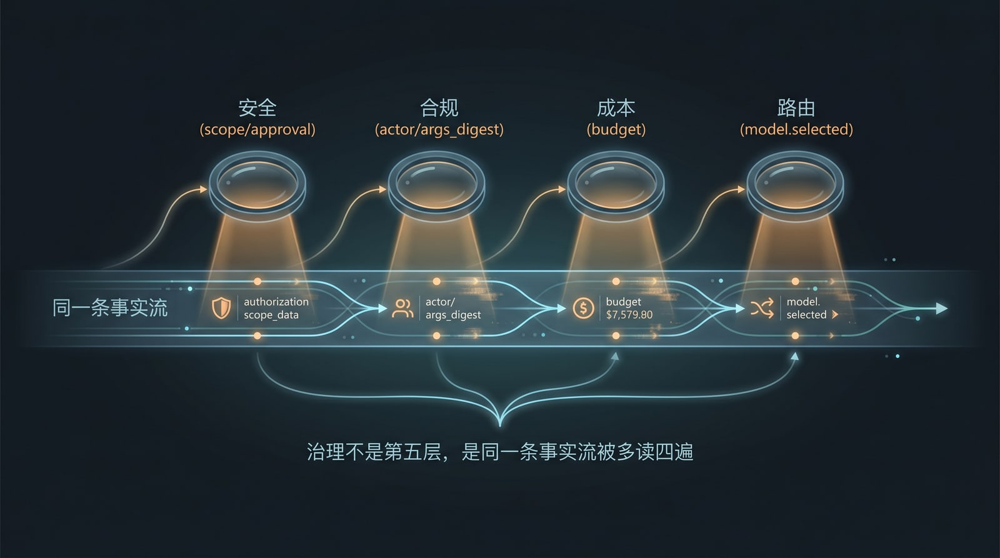
图：治理的四副镜片。安全、合规、成本、模型路由，本质上都是同一条事实流被多读了四遍——治理不是盖在 harness 之上的第五层，而是把这四件事都建在同一条流上，而不是在它旁边各开一条暗渠。**
-
本章在此处综合 Codex 开源仓库中 sandbox 分级与 approval 流程，以及 Claude Code 在权限上下文、hooks 与工具 scope 上的实现，用来说明安全边界应作为能力被接入时的固有属性、并以事件留痕；对应第 23 章参考文献 21、24。 ↩
-
本章在此处综合 OpenAI API Pricing 关于
under 270K标准费率的限定、Google Gemini 1.5 关于 1M context pricing tier 与 latency 的说明，以及 MInference 关于 1M token prefill 代价的摘要，用来说明成本治理须把 token、时延与重试一并做成一等预算；对应第 23 章参考文献 14、18、20。 ↩
17. 评测与验证器工程：把“可闭合”落成可操作的方法
第 13.4 节给了一条战略判据：一个领域能不能靠 harness 加模型补齐，取决于它有没有一个 sound、便宜、独立的验证器。判据立住了，可它把全部重量都压在了一个被严重低估的词上——“验证器”。整本书反复说“完成由证据裁决、不由模型自报”，而那个裁决者究竟怎么造、怎么不被骗、怎么随时间不退化，本身就是一门工程。这一章就把第 13.4 节那条判据，从“有没有”落到“怎么有”。
这门工程值得被单独拎出来，是因为它是整套 harness 里失败代价最不对称的一环。事实流写漏了，顶多查不到；UI 投影错了，刷新一下露馅；可验证器一旦判错——尤其是把错的判成对的——它不是漏了一个信号，而是亲手给系统盖了那个“假成功”的章。第 5 章那一连串事故里，最伤用户信任的几类，根子都在这里。
17.1 三条硬指标，怎么变成可测的数
sound、便宜、独立这三个词，听着像形容词，其实每一个都能落成一个可以量的数；不把它们量出来，“我们有验证器”就只是一句安慰。
最要命的是 sound，它说的是假阳性率——验证器放过一个错误产物的概率。为什么是它最要命？因为假阳性是“假成功”的直接来源：一个会放错的验证器，比没有验证器更危险，它给了团队和用户一种虚假的安全感，让本该被拦下的错误，顶着“已验证”的绿灯直接交付。量它的办法也很朴素：攒一批已知是错的产物当负样本，整批喂给验证器，数它放过了几个。这里有条够硬的判据——一个 gating 验证器的假阳性率，必须压到远低于模型单次出错率，否则它根本兜不住第 13.4 节那条 \(1-(1-p)^{k}\) 的账：循环每多采样一次，是多了一次被假阳性放行的机会，而不是多了一道保险。
其次是 便宜，它说的是验一遍相对生成一遍的代价。量法直接：验证耗时除以生成耗时。这条之所以不能省，同样是因为那条循环——“生成—验证—重试”能跑得起来，前提是每多验一次的边际成本足够低；如果验证比生成还贵，循环在经济上就垮了，团队迟早会偷偷把它降级成抽样跑或非 gating，于是它名存实亡，正好滑回第 5.5 节那种“验证器在、却不阻断”的窘境。
最容易被忽视的是 独立，它说的是验证器不能依赖被它验的那个产物的生成者。这里藏着 harness 里最诱人的一个反模式：让生成代码的那个模型，回头给自己的产物打分（用同一个模型做 LLM-as-judge）。它看起来省事又“智能”，可它系统性地抬高假阳性——因为一个模型对自己的错误有盲区，它倾向于认可自己生成时所依据的同一套（可能错误的）假设。真正独立的裁判，来自另一条信息通路：编译器、类型检查器、测试、外部 oracle、一个不同的模型，或者人。独立性不是锦上添花，它是 sound 能否成立的前提——一个不独立的验证器，假阳性几乎注定降不下来。
17.2 它最常以哪三种方式坏掉
把上面三条指标翻过来，正好就是验证器最常见的三种失效，而且每一种都各有各的隐蔽。
第一种是假阳性悄悄升高，对应 sound 的退化。它的隐蔽在于：系统表面上一直在“通过”，没有任何报错，直到用户那头积起投诉。最阴的一条路径叫 Goodhart——当“通过验证器”成了模型被优化的目标，模型会逐渐学会生成那种让验证器满意、却并不真正正确的产物。验证器没变，可它正在被绕过。一个只盯“通过率”的团队，对此完全无感，因为通过率甚至会变得更好看。
第二种是太贵被关掉，对应便宜的失守。验证器跑得太慢，拖垮了吞吐，于是团队做了个看起来很合理的妥协：把它从 gating 降成告警，或者从“每次跑”改成“抽样跑”。从这一刻起，它就不再是终态门禁，而是一个偶尔说两句的旁观者——第 5.5 节那道本该阻断的关，就是这么悄悄敞开的。
第三种是伪独立，对应独立的失守，也最难自查。验证器表面上是另一套代码、另一个进程，可它和生成端共享了同一个错误假设。最典型的，是让模型自己生成测试、再用这些测试去验它自己写的代码——测试和被测代码同源，模型理解错了需求，它写的测试会和它写的代码一起错，双双“通过”。表面有验证，实质没有独立的第二意见。
17.3 怎么把它接进终态裁决
指标和失效讲清了，剩下的是接法——怎么让验证器的判断，真正卡在 ready 那道门上。第 6.9 节已经给过骨架（gating 开关、带证据的 validator.result、失败分类），这一节补的是“一个合格验证器的输出，到底该长什么样”。它绝不能是第 5.5 节那种揉成一个布尔的 validation error，而应该是一份结构化、可被人和机器分别消费的结果：
ValidatorResult {
validator: "slides_freshness" // 谁在验
ok: false // 结论
gating: true // 失败是否否决终态
category: "stale_artifact" // 失败类别，供路由重试/降级/终止
expected: "based on report.md@2026-06-02"
actual: "based on 2025-Q1 template"
evidence: "checks/slides_freshness.json"// 可回放的证据路径
duration_ms: 1200 // 耗时，喂给 16.3 的成本治理
}
有了这份契约，验证就从“过没过”升级成了“为什么没过、证据在哪、下一步怎么办”。category 那一栏尤其值钱——它让 harness 能按失败类别分流：是 timeout 就重试，是 stale_artifact 就回退到重新生成那一步，是 contract_violation 就直接终止并升级，而不是一律“整轮重跑”。
接的方式上，还有一条很实用的纪律：分层验证。把便宜的快验证（lint、类型检查、存在性）排在前面先跑，把贵的慢验证（端到端、复现、跨产物一致性）放后面、能并行就并行；所有 gating 的验证必须在终态裁决前全部跑完，non-gating 的（风格、拼写、建议）则只记录、不阻断。这样既守住了 sound（gating 的一个都不少），又照顾了便宜（不让每次都为最贵的检查买单），还顺手避开了第 5.5 节那种“验证器太严、把正常任务也拖死”的反向事故。
17.4 用什么验：从字面，到语义，到对抗
同样是“验证”，手段的强弱差着量级，而强弱恰好对应它们有多容易被 Goodhart 绕过。
最便宜、也最容易被绕的，是字面与存在性检查——“文件在不在”“字段有没有”。它该用，但只能当第一道粗筛；第 5.4 节那个靠文件名启发式猜主产物的事故，反过来说明了：只验“存在”，等于邀请系统拿一个同名的错文件来糊弄你。往上一层是属性与不变量：不去对单点结果做断言，而是断言产物必须满足的一类性质（“所有引用都能在源材料里找到”“页数 ≥ N 且每页非空”“函数对任意合法输入都不抛异常”）。属性比单点断言难被 Goodhart，因为要骗过一整类不变量，比骗过一条固定断言难得多。再往上，有 oracle 时最强的是差分与参考比对——拿一个已知正确的参考答案或旧版本做差，直接比结果集、比渲染输出、比行为。
而真正把 sound 养硬的那一招，是对抗样本：主动构造一批“看起来对、其实错”的负样本，专门喂给验证器，量它的假阳性。这件事的纪律意义，怎么强调都不过分——验证器的 sound 不是写出来就有的，是用负样本一次次逼出来的。每逃逸一次“假成功”，那个漏网的错误产物，就该被收编成一个新的负样本，永久留在验证器的回归集里（这正好接上第 9.5 节那条“事故回流成免疫力”）。
至于 LLM-as-judge，它不是不能用，而是只在没有机器 oracle 的领域（比如评摘要质量、评文案是否切题）才轮得到它，且必须守三条：用一个和生成端不同的模型，给它明确的评分 rubric 而不是“你觉得好不好”，并定期拿人工标注的负样本去校准它的假阳性。最要紧的一条底线是——在它没被校准到足够 sound 之前，绝不让它单独充当 gating。把一个假阳性未知的判官放上终态裁决的位置，等于把第 17.1 节那条最要命的指标，交给了运气。
17.5 验证器是会退化的资产，得养
最后一点，是很多团队没意识到的：验证器不是写完就一劳永逸的代码，它是一项会随时间退化的资产，和第 11.5 节讲的 skill 一样，需要晋升、校准和淘汰的纪律。
它退化的方式，前面已经点过——模型会朝着“骗过它”进化（Goodhart），需求会变、而它没跟着变，依赖的外部 oracle 会漂移。所以养它的动作也对应地清楚：每一次“假成功”逃逸，都回流成一个新的负样本和（必要时）一道新的 gating 检查；定期跑整个负样本集，把假阳性率当成一个要持续盯的指标，而不是上线时量一次就忘；并对 Goodhart 立一个专门的警报——当某个验证器的通过率异常走高、用户投诉却同步上升时，这个剪刀差几乎一定意味着它正在被绕过，该立刻复查，而不是庆祝。
把这一章收束回第 13.4 节那条判据，会看到一个朴素却有分量的结论：一个领域能不能“用 harness 加开源模型补齐”，最终并不取决于模型有多强，而取决于你愿不愿意把“造验证器、养验证器”这门工程做扎实。模型决定了生成质量的下限，而验证器，决定了你究竟敢把终态裁决，交到谁手里。这,也正是整本书那句“完成由证据裁决”落到地上时，最硬、也最该被当回事的那一块地基。
18. 结语：下一阶段的工程姿态
到这里，整本书的主线闭合了。我们从一台机器讲起——一个会续写自己的概率生成器，它在 transformer 加自回归的架构下，对“位置远”和“时间旧”的信号必然衰减，于是有了一段最擅长的工作区间，一离开它，质量就开始飘。我们把这条机理钉成了必然，而不是缺陷，再转向那个把模型拉回区间的外层控制系统：它的血统在控制论、缓存层级和负反馈放大器里，它的形态在 Claude Code、Codex 这些成熟样本中，它的反面在一组真实事故里。我们把这些反推成一套能照着搭的参考架构——事实流、状态机、产物契约、回放、操作员门禁、群体编排——再用一条贯穿全卷的“假成功”任务，验证它每一层都堵住了一道缝。最后我们划清了 harness 的边界：它让系统不撒谎，却不替你保证产品好；而“好不好”这半边还能再切一刀——有可闭合验证器的领域，开源模型加一套硬验证就能补齐，没有的领域，再强的模型也补不齐。
如果要把这一整套压成一句能贴在工位上的话，那就是：把 harness 当成产品可靠性工程，而不是抽象框架建设。
对一支还在从 demo 走向系统的团队，这件事也有它务实的次序，而且它和那条“先修真相、再修体验”的施工序一脉相承。先别急着搭框架，而是去找出一个具体的、用户看得见的失败类别——就像第 5 章那些事故那样具体；把它背后该守的契约不变量显式编码出来，让“完成”“归属”“阶段”不再是口头约定；再把运行时、UI 和操作员三个表面，统统绑到同一个事实模型上，让它们不可能各说各话；然后在合并之前，用一小撮真实主机的 fleet 门禁，把这条不变量在线上证明一遍，而不是接受一句“我本地测过了没问题”；做完这些，才轮到去扩展抽象、接入外部平台和更花哨的能力。每一步都在为下一步浇地基；顺序一旦倒过来，就成了本书开头那支把楼盖在流沙上的团队。
而这条路径的内核，从第一页到最后一页其实没变过：让系统说真话。开篇那个“开场像天才、收尾却交付一段跑不通的代码还附赠一句‘已完成’”的 agent，和那条“在聊天里说已发送、其实没人收到”的周报任务，是同一种病的两副面孔——系统把“说出口的完成”，错当成了“被证据证实的完成”。harness 的全部工作，就是把这两者重新分开，并且只让后者，去点亮那盏绿灯。
那么下一阶段，这门工程会往哪里走？有三件事已经看得比较清楚。其一，harness 会越来越多地修改自己——补文档、生成测试、提议 schema 迁移；可正因如此，第 11.6 节和第 16.1 节那条“被告不能兼任法官”只会越来越重要：能自动化的尽管自动化，但一旦触及事实流的 schema、权限边界、验证器的独立性，人就必须留在那一槌上。其二，人的位置会稳定在“环上”，而不是“环里”——不再是逐行盯着模型写的每一行，而是去设计、监督、改进那个会持续产出、又会自我校验的工作回路。其三，也是最被低估的一件：随着一个个可闭合领域被“开源模型加硬验证”逐步拿下，真正稀缺的工程能力，会从“调得动多强的模型”，悄悄转移到“造得出、也养得住多可靠的验证器”。模型决定生成的下限，验证器决定你敢把终态交到谁手里——而后者，是一项会随时间复利的资产。
模型会换，窗口会变大，工具会更新，某个今天看着惊艳的能力，明年多半就成了基线。唯独有一样东西，越往后越不该频繁换——那条只追加、可回放、被验证器把关的事实流。它是模型不断变化的世界里，你还能攥得住的那个不变量。所以真正的关键，从来不是去复制 Claude Code 或 Codex 的目录结构，而是学会像它们那样，把模型能力，包进一个会说真话、会积累免疫力、会被团队长期维护的控制系统里。
把这件事做扎实，系统才能从“今天看起来很聪明”，走到“每天都能正确交付”。而这，正是驾驭工程要交付的全部。
19. 附录 A：源文本与研究流程
本书论证建立在三类材料之上：第一类是 harness / agent / context engineering 的奠基文本，第二类是 Claude Code、Codex、OpenClaw、Hermes 这类系统样本，第三类是长上下文、控制论、memory hierarchy 和负反馈这些理论支撑。它们可以聚成四个实践组：
- 第 1 层谱系：Fowler、OpenAI、Fisher Zhang、NxCode
- 第 2 层谱系：Anthropic、Anthropic 长任务应用、Milvus、Stanford Meta-Harness
- 桥接文本：Neo4j 的上下文工程，Karpathy 的 wiki 纪律
- 系统解剖：Claude Code / Codex 源码审读、Dive into Claude Code、OpenClaw / Hermes 对照
保留这些材料的理由很具体：第 5 节中的失败样本属于 Layer 2 failure，而这本书本身的写作与重构过程又位于 Layer 1 谱系中。把理论、系统样本和失败案例放在一起读，能让控制系统视角保持诚实，避免把某个产品实现误当成普遍原则。
19.1 研究流程
- 从一个真实失败模式或真实设计选择出发。
- 选择与你正在处理的层次匹配的源文本集群。
- 抽取不变量，而不只是引文，并写入 wiki 页面、schema 或 checklist。
- 在下一次事故前，把不变量变成测试、门禁或评审规则。
- 当系统行为变化时，重新审视章节问题。
19.2 核心研究问题
- 这篇文本属于哪一层？
- 哪个不变量本可以防止我正在研究的失败样本？
- 当模型变化时，什么必须保持稳定？
- 哪些契约属于 runtime，哪些属于 policy？
19.3 样本来源与交叉印证
上面那张谱系图回答的是“读了什么“，这一节回答的是“这些东西分别能承多重的论证、又在哪里必须收手“。本书的样本大致落在四类来源里，它们的可核对程度并不相同，混用时若不分清，结论就会从“可以公开复核的事实“悄悄滑向“作者的综合判断“——而读者有权知道每一句话踩在哪块石头上。
第一类是成熟产品的公开源码镜像审读。Claude Code、Codex 这类系统的命令行壳层、其内部的事件记录格式、工具调用的两段式协议、状态如何从 running 翻到 settled，这些都不是靠想象重建的，而是把公开可得的发行包、客户端 bundle 与开源对照实现（OpenClaw、Hermes 这类）逐行读出来的。源码的好处是它不会替自己辩护：一个 task.settled 事件由谁写、tool.returned 带不带 ok 字段、completeUpload 的失败路径有没有回写事实流，代码里写着就是写着。本书凡是描述某个具体机制“长什么样“，优先回到这一类来源，因为它在原则上是可被任何拿到同一镜像的人复核的。它的边界也很清楚：镜像是某个版本某个时点的快照，混淆层、私有服务端逻辑、被裁掉的分支都看不到，所以从单一壳层读出的细节只能当作“存在性证据“——证明某种做法确实被工业系统采用过，而不能反过来证明“所有系统都这么做“或“这是唯一正确解“。
第二类是公开论文与技术报告。长上下文里的 softmax 稀释、RoPE 的距离衰减、有限残差维度导致的 over-squashing、KV cache 与自回归带来的误差复合，这些机制性结论不来自任一产品，而来自可被引用、可被他人重复实验的研究文献（统一收在第 23 章参考文献中）。它们承担的是“为什么“那一层：当本书说“有效工作区间会随上下文变长而收窄“，依据是这类文献给出的定量趋势，而不是某次跑出来的轶事。这一类来源最硬，但也最容易被过度外推——论文往往在受控设定下成立，本书引用时只取其定性方向（注意力会被稀释、远处 token 会衰减），凡是把它当成精确数值搬进工程决策的地方，都已在正文里就地标注为近似，例如那条 \(w_{\max} \approx e^{G}/(e^{G}+n-1)\) 只用来说明形状，不用来报数。
第三类是厂商价格页与公开文档。token 计价、上下文窗口上限、缓存命中折扣、各档模型的速率限制，这些数字直接进了书里关于“缓存层级“和经济性权衡的论证。它们的特点是高度时效：价格页今天可核对，半年后可能就改了。所以本书对这类来源的纪律是只用其结构、不锁其数值——例如“读远比写便宜、命中缓存又远比读便宜“这种层级关系是稳定的，而具体每百万 token 几美元则被有意写成可替换的占位，提醒读者以当时的官方页面为准。把价格当成会过期的事实、把价格背后的层级关系当成会留存的结构，是这一类来源的使用边界。
第四类是一组匿名的真实事故。贯穿全书的那条“假成功“周报任务 t_9f2——agent 把数据汇成 PDF、要发到 #finance，slack.upload 第二段 completeUpload 超时静默失败、没人收到，模型却在聊天里说“已发送“、UI 一度亮起绿色完成气泡——就属于这一类。它不是为了讲课而虚构的玩具例子，而是从真实运行中观察到的故障形态抽象、脱敏后的产物：去掉了能定位到具体组织和当事人的信息，保留了事件的因果骨架。这类来源最不可公开核对——读者无法去翻原始日志——所以本书从不让单个事故独自支撑一个普遍结论，而是要求它与前两类对齐：t_9f2 之所以可信，是因为它的每一个环节（model.claim 与 tool.returned 的物理隔离、状态机只让 task.settled 点亮终态、纯函数 fold 让绿气泡不可表示）都能在源码审读和文献机制里找到对应的落点。事故提供“这真的会发生“的紧迫感，源码与文献提供“为什么会发生、可以怎么挡住“的解释，三者咬合，结论才站得住。
19.4 反推：从代码与事故反推架构
需要把这本书的方法论里最关键的一条单独讲清楚，因为它决定了前面四类来源是怎么被组织起来的：本书是反着走的。常见的技术写作是先立一套漂亮的架构，再去现实里找几个例子给它背书——例子在这种写法里是装饰，删掉也不影响骨架。本书刻意拒绝这条路。这里的顺序永远是先有一段真实代码或一桩真实事故，然后追问“要让这个失败不可表示，最小需要哪些不变量“，最后才把这些不变量收敛成一套可复用的架构语言。架构是反推出来的残差，不是先验的蓝图。
t_9f2 就是这条反推链最完整的演示。起点不是“事实流应该 append-only“这个原则，而是一个具体的坏结果：绿气泡亮了、消息没到。顺着这个坏结果往回逼问，才依次逼出每一条约束——既然模型的“已发送“和工具的 tool.returned(ok:false) 会互相污染，那就必须把 model.claim 和工具真实回执在事实流里物理隔离；既然 UI 凭气泡判生死会被骗，那终态就不能由渲染层自己声明，而必须让状态机只认 task.settled 这一个落点，且只有 coordinator 有权写它（事件写入权限表由此而来）；既然交付是否成功不能靠模型自述，那产物契约里就得硬性要求一张 delivery.receipt，并挂上一个可闭合的 gating validator slack.delivered，它失败就把任务推向 failed；既然回放时不能再让任何中间状态把绿气泡重新拼出来，那 fold 就必须是纯函数，让“成功“这个终态在数学上不可能从一串失败事件里被折叠出来；最后 assert_terminal_authentic 这道门禁，本质上是把“反推出来的所有不变量必须同时成立“固化成一句可执行的断言。这一整套东西没有一条是先想好的，每一条都是被那个绿气泡逼出来的。
这样做的代价是这本书读起来不像一份整洁的设计规范，而更像一连串“事故—逼问—约束“的现场记录；它的回报是每一条架构主张背后都站着一个具体的坏结果，因而可以被检验、可以被推翻。如果有读者拿出一桩 t_9f2 式的事故，证明在我们这套不变量下它依然会发生，那这套架构就该修——这正是反推方法相对于先验蓝图的优势：它把架构和它要防的失败死死绑在一起，谁也甩不开谁。也正因如此，前面四类来源才不是并列的参考书目，而是同一条反推链上的不同环节——事故给出待解释的现象，源码给出现象的实现细节，文献给出现象的底层机理，价格与文档给出现象发生的经济约束，四者共同把“通用架构“从一堆具体的坏结果里反推出来。
20. 附录 B：Harness 自查矩阵
使用下面的矩阵为团队或产品打分。每一行标记为 ❌、⚠️ 或 ✅。
20.1 Session 支柱
| # | 检查项 |
|---|---|
| S1 | Session 数据与聊天历史分开存储。 |
| S2 | Session 日志只追加。 |
| S3 | Session 可以通过 ID 恢复。 |
| S4 | 事件流对人可读且可比较差异。 |
| S5 | 新队友可以从 session 产物重建工作过程。 |
20.2 Harness 支柱
| # | 检查项 |
|---|---|
| H1 | Harness 状态存在于 harness 进程之外。 |
| H2 | Harness 接口小而稳定。 |
| H3 | 循环变体可以变化，而不用重写 session 模型。 |
| H4 | 模型升级不会迫使大范围 harness 重写。 |
| H5 | 每个 harness 变更都明确属于缺陷修复或协议执行。 |
20.3 Tools 支柱
| # | 检查项 |
|---|---|
| T1 | 工具职责是正交的。 |
| T2 | 调用和结果记录到 session 日志。 |
| T3 | 无效调用可以回滚或纠正。 |
| T4 | 凭据不进入沙箱。 |
| T5 | 有效工具组合不能静默逃逸策略。 |
20.4 Verification 支柱
| # | 检查项 |
|---|---|
| V1 | 生成器和评估器是分离的。 |
| V2 | 规格自动或半自动流入性质测试。 |
| V3 | 每个裁决都持久化到审计轨迹。 |
| V4 | Linting 能抵抗自利或迎合式输出。 |
| V5 | 外部证据可以证明正确性，而不必信任验证器自己的输出。 |
20.5 评分
- 16+ 个
✅：L4，强成熟度 - 12-15 个
✅：L3，已有独立验证层 - 8-11 个
✅：L2，session 协议真实存在但不完整 - 4-7 个
✅：L1，session 存在但协议较弱 - 低于 4 个
✅：L0，仍然以 prompt 为中心
20.6 九维成熟度矩阵
前面四根支柱回答的是“这些器官在不在”；这一节换一个切面，把第 6 章那九个维度——事实流、生命周期、能力平面、产物与验证、回放、隔离与恢复、协作、知识分层、操作员面——每一维都摊成三档可观察判据，对应全书书名里那条主线：从“灵光一闪的天才”，经过一段“过渡”，走到“软件工厂”。判据都写成可勾选的具体征兆，而不是形容词，目的是让你在自评时不必先达成定义上的共识，只需对着自己的系统逐格打钩。
| 维度 | 灵光一闪 ❌ | 过渡 ⚠️ | 软件工厂 ✅ |
|---|---|---|---|
| 事实流 | 聊天文本即状态，模型说“已发送”就当真发了 | 有了事件流，但 UI 仍自行推断、或允许从 model.claim 倒推完成 | model.claim 与带 ok 字段的 tool.returned 物理隔离，状态由纯函数 fold 求得；事件带 seq/ts/actor/args_digest/sha256 |
| 生命周期 | 任务只有“在跑”和“看起来好了”，终态由模型一句话宣布 | 有状态字段，但能被原地覆盖、或可跳过 verifying 直达 ready | 五态 queued/running/verifying/ready/failed 是单调阶梯，只有 coordinator 能写 task.settled，终态须经裁决 |
| 能力平面 | 工具靠 prompt 临时拼，凭据随调用进沙箱 | 工具登记了，但成功标准是 HTTP 2xx、或职责彼此重叠 | 每个工具有 success_means 钉在可回查事实上，凭据不入沙箱，有效组合不能静默逃逸策略 |
| 产物与验证 | 交付物靠文件名或最近修改时间猜，验证器给自己打分 | 有验证器，但 gating 与非 gating 不分、或主产物没有唯一归属 | required_artifacts + owner_rule:single，gating 验证器可闭合（sound/便宜/独立），失败一票否决，证据落流 |
| 回放 | 刷新页面状态就丢，实时视图与历史视图各算各的 | 能回放历史，但实时流与刷新恢复走两套推断逻辑 | 实时流、历史流、刷新恢复、UI 投影共享同一 fold；绿气泡在投影函数里不可表示 |
| 隔离与恢复 | 多任务踩同一工作区，断了就从头来 | worktree/resume 存在，但是出错时的特判补丁而非常规路径 | worktree、resume、background task、disk output 是一等运行时能力，可从任意 seq 重建状态 |
| 协作 | “多开几个窗口”，子任务结果靠人肉拼回 | 能 spawn 子 agent，但无角色、无权限边界、无结构化汇总 | spawn 有角色/通信/权限/汇总/验证，每个子 agent 的产物经同一套契约收口 |
| 知识分层 | 知识全塞进一个大 prompt，改一处牵动全身 | 有 AGENTS.md/docs/skills，但层级混在一起、无晋升或回收规则 | 常驻层/按需层/晋升层分治（对应缓存 L1/L2/L3），知识可检索调入、可晋升、可做 garbage collection |
| 操作员面 | 出事只能翻聊天记录，靠人复述“当时发生了什么” | 有 dashboard，但它独立于事实流自行统计、与后端真相会分裂 | dashboard、门禁（如 assert_terminal_authentic）、回滚、故障归因都建在同一条事实流上，每一格都能指回一条具体事件 |
把贯穿全书那条假成功周报任务 t_9f2 套进这张表，可以当作一次标定：一个纯“灵光一闪”的系统，会让它在事实流维度落进第一档——slack.upload 第二段 completeUpload 超时静默失败，模型却在聊天里说“已发送”，而这句话就被当成了状态；UI 据此点亮绿色完成气泡，又把操作员面也钉在第一档。同一条任务搬进“软件工厂”那一列，每一维都改写了它的命运：事实流把那句话归为 model.claim、把超时归为 tool.returned(ok:false)；产物与验证维度因为契约要求 delivery.receipt 而让 gating 验证器 slack.delivered 失败；生命周期维度只允许 task.settled 点亮终态，于是落到 failed；回放维度的纯函数 fold 让那个绿气泡根本无法被表示；操作员面维度的 assert_terminal_authentic 门禁则在发布前兜住最后一种越狱可能。一条任务，在两列里走出两种结局——这正是这张矩阵想让你一眼看见的落差。
怎么用它做季度自评：先各维独立打钩，别急着算总分，因为这九维不是等权的——事实流和生命周期是底座，它们若停在第一档，上面六维打再多钩也是空中楼阁，所以读表时先看这两行有没有立住。再把每一格的判据落到一份可指认的证据上：声称“事实流到了第三档”，就要能拿出一条真实事件，里面 model.claim 与 tool.returned 确实分属两种 type；声称“操作员面到了第三档”，就要能在一次真实事故里，把 dashboard 上的每一个红格指回事实流里的某条 seq。任何一格说得出却指不出，就降回上一档。然后选下个季度的攻坚位：通常不是去补那些已经亮起的钩，而是找“最低的那条底座维度”，把它从 ❌ 抬到 ⚠️、再从 ⚠️ 抬到 ✅，因为成熟度受制于最弱的承重维，而非最亮的展示维。最后把这张表存档、连同每格背后那条证据事件一起留痕——下个季度再评时，进步与退步就都能像回放事实流一样，被逐格 diff 出来，而不是凭印象重新争论一遍。
21. 附录 C：精选术语表
这是全书最常出现术语的紧凑节选。
| 术语 | 含义 |
|---|---|
| Agent 循环 | 重复的生成、行动、观察循环。 |
| 追加式日志 | 永不重写历史的日志。 |
| 上下文工程 | 组织输入，使模型停留在有用区间。 |
| 事实流 | 系统承认真实发生过的 append-only 任务记录。 |
| 生命周期 | 任务从 queued 到 ready / failed 的公开、单调状态阶梯。 |
| 能力平面 | shell、文件系统、MCP、外部 API、人工输入和子 agent 的统一调度面。 |
| 产物与验证 | 把 primary artifact、validator、evidence 和终态裁决绑定在一起的契约。 |
| 回放 | 从同一事实流重建实时状态、历史状态和 UI 投影的能力。 |
| 隔离与恢复 | 用 worktree、scope、resume、background task 和 disk output 控制副作用与中断。 |
| 协作 | coordinator、worker、verifier、summarizer 等多 agent 角色之间的受控分工。 |
| 知识分层 | 把经验按 wiki、skills、docs、AGENTS.md、CI / validator 分层治理。 |
| 操作员面 | dashboard、门禁、回滚和事故归因共享的运行时控制面。 |
| 前馈 / 反馈 | 行动前的引导，行动后的感知。 |
| Harness | 约束并解释模型行为的运行时框架。 |
| Harness 工程 | 围绕模型设计控制层的工程实践。 |
| 意图 | 必须被明确表达、不能靠猜的人类目标。 |
| 元 Harness | 可以被优化或重新配置的 harness。 |
| Prompt 工程 | 通过 prompt 调整单轮行为。 |
| Session | 任务的持久、可恢复事实流。 |
| 稳定抽象 | 跨模型变化仍然有用的接口。 |
| 工具词汇表 | 系统可以采取的有边界动作集合。 |
| 验证独立性 | 验证不能与生成是同一件事。 |
| Wiki | 维护过的、结构化历史工作记忆。 |
上面那张表是入门用的速查。下面按主题把全书反复用到的术语展开，每条给一句到三句中文定义，必要时附英文原词，并点一句它在书里哪一处发挥作用。读这一节有个隐含的导航：几乎每一个工程术语，背后都对应着第 2 章那台机器的某一条失效机理；每一个机理术语，又都在第 6 到第 9 章被某一个工程器件兜住。
21.1 事实流与事件 schema
| 术语 | 定义 |
|---|---|
| 事实流（append-only events） | 系统承认“真实发生过”的唯一权威记录，只追加、永不重写历史。每条事件带 seq、ts、actor、args_digest、sha256 等字段。它是第 6 章整套架构的地基——之所以坚持只追加，是因为一旦允许改写历史，回放与审计就失去了可信的锚点。 |
seq | 事件在事实流里的单调递增序号，既给事件定序，也充当 checkpoint：resume 时就是从某个 seq 把上下文重建出来再往下跑（见第 6 章 resume）。贯穿全书的周报任务里，slack.upload 标了 retryable=true，重试正是“从 seq 6 重跑该步”。 |
args_digest / sha256 | 事件里对调用参数和产物内容做的摘要/哈希。前者让“同一次调用”可被比对与去重，后者让产物有可校验的身份——dashboard 上那句“report.pdf ✓ 已校验（sha256 9c0b…）”就是它在发挥作用。 |
actor | 标明某条事件由谁写入（如 agent:coordinator、某个 worker、某个 verifier）。它是“事件写入权限表”能落地的前提：没有 actor，就无法约束“谁有资格写哪一种事件”。 |
model.claim | 模型在聊天里说出的一句声称（如“已发送到 #finance”）。它是一种事件，会被记录、会显示给人看，但在纯函数 fold 里绝不触碰生命周期。把它和 tool.returned 物理隔离，是全书破解“假成功”的第一刀。 |
tool.returned | 一次工具调用的真实回执，带 ok:true/false。周报任务里那条 seq:7 的 ok:false（completeUpload 超时）就是它——它和模型嘴上的“已发送”分属两类事件，前者是传感器读数，后者只是声称。 |
validator.result | 某个验证器跑完后写下的裁决，带 ok 与证据。在事件写入权限表里，它只能由 verifier 写。slack.delivered 这条 gating 验证器报 ok:false，就是负反馈环测到了一次非零误差。 |
task.settled | 唯一能点亮终态（ready/failed）的事件，带 state 与人能读懂的 reason/terminal_reason。它只能由 coordinator 写，且必须在所有 gating validator.result 之后。周报任务最终落的是 {state:"failed", reason:"required_validator_failed:slack.delivered"}。 |
artifact.written | 产物落盘的事件，记下 kind、path、sha256。任何 worker 都可写，但只能写自己 scope 内的产物——这条边界堵死了“一个 worker 偷改另一个工作区”的串扰。 |
subagent.reported | 子 agent 汇报自身子任务状态（done/blocked/failed）的事件，只描述“我这一步如何”，无权宣布整单终态。上传失败的 delivery-worker 能写的是 blocked，不能写 task.settled。 |
21.2 生命周期、产物契约与门禁
| 术语 | 定义 |
|---|---|
| 生命周期五态 | 任务对外只走 queued → running → verifying → ready / failed 这五个公开、单调的状态阶梯（见第 6 章状态机）。关键纪律是：只有 task.settled 能点亮 ready 或 failed，模型说“完成了”不算数。 |
queued / running / verifying / ready / failed | 分别是：已入队待调度；已领取、正在执行；产物已就绪、正在过验证器；通过全部 gating 验证、确认完成；某条 gating 验证失败或被判失败而终止。verifying → failed 正是周报任务的真实轨迹。 |
| 产物契约（required_artifacts） | 把任务的“交付物”显式列出来的契约，每件产物声明 kind、owner_rule、validators。它让“完成”不再是一句话，而是一组可校验的具名产物（如 report.pdf、delivery.receipt）。 |
owner_rule: single | 主产物必须显式、唯一地归属某一件，从根上堵死“靠文件名或最近修改时间去猜哪个才是交付物”的事故（见第 5.4 节）。 |
| gating 验证器 | 带 gating:true 的验证器，其失败可一票否决终态，把任务钉成 failed；不带 gating 的（拼写、风格、体例建议）只记录、不阻断，以免误伤本质完成的任务。slack.delivered 就是那条致命的 gating 验证器。 |
success_means | 能力契约里把“成功”钉死在一个可回查的客观事实上的字段（如“files.completeUpload 返回 2xx 且 file_id 可回查”）。它把“成功”从模型的语义直觉、从 HTTP 状态码挪到事实上，使桥接层根本没有“乐观上报”的接口可用。 |
delivery.receipt | 周报任务里那件“成功必须留下”的具名产物。它从没被写进流，于是 slack.delivered 找不到它、gating 失败、终态落 failed——能力契约和验证契约在这里严丝合缝地咬上。 |
assert_terminal_authentic | 操作员面那道发布前门禁：它不重算业务逻辑，只对“终态”做一次真实性体检——若一个 ready 任务的 gating 验证器不是全绿，就在 READY_OVER_FAILED_GATE 上炸开，给出一个有名有姓的诊断类别。它兜住“万一终态裁决被某条 buggy 代码绕过”的最后一种可能。 |
| 事件写入权限表 | 一张规定“谁有资格写哪一种事件”的硬表：validator.result 仅 verifier，task.settled 仅 coordinator 且须在全部 gating 验证之后，artifact.written 限本 scope。它把“子 agent 不许自宣终态”从一句叮嘱变成系统强制的边界（见第 9 章）。 |
21.3 回放、前端与桥接
| 术语 | 定义 |
|---|---|
| 回放 fold | 把事实流“折叠”成可显示状态的纯函数：给同样的事件序列，永远吐出同样的值。前端没有私藏记忆，刷新/重连只是“重新求一次值”。正因为 fold 里 model.claim 一行都不碰 lifecycle，那个绿色完成气泡在类型上不可表示。 |
| 纯函数 / 投影逻辑 | 前端最多配拥有“投影、展示、交互”三样逻辑，唯独不能拥有第四样——独立事实。一旦它自己判断“大概进到验证阶段了吧”，系统就有了第二个真相源，剩下的只是它们哪天打架的问题（见第 8 章）。 |
| SSE（Server-Sent Events） | 服务端向前端单向推送事件增量的传输方式。书里那道 CI 门禁就用它：一条路读任务快照接口，一条路把 SSE 流从头回放 fold 出状态，再断言两者生命周期逐字段相等——两个对象模型一旦悄悄分叉，这道门禁立刻红。 |
HARNESS_EVENT_SINK | 给非主语言脚本（Python/Node/shell）的兜底事件汇流口——通常是一个 unix domain socket 或具名管道，地址塞进同名环境变量。脚本把事实按和原生事件一模一样的 schema 逐行 JSON 写进去。sink 缺失时可 no-op，但绝不允许因此跳过结果契约与终态验证。 |
| 能力平面 | shell、文件系统、MCP、外部 API、人工输入和子 agent 的统一调度与审计面。每一次工具调用都带 session、scope、权限和审计信息——它是控制论里的“执行器”落到运行时的样子。 |
21.4 机器与时空失效
| 术语 | 定义 |
|---|---|
| 自回归 | 模型一次只生成一个 token，再把它接回输入、预测下一个，如此往复。它意味着误差会沿时间轴一路携带——上一步的偏差成为下一步的输入，这正是“误差复合”的结构性来源。 |
| 残差流（residual stream） | 每个 token 穿过几十层结构相同的层时，随身携带的一条宽度固定的向量，被逐层读取、修改、写回（像 x += 这一层算出来的东西）。可把它想成这个 token 一路携带的定宽“工作记忆”。 |
| 有限残差维度 | 上面那条工作记忆的宽度是固定的：无论上下文是十个还是一百万个 token，每个位置能携带的信息量都被这条定宽向量卡死。一台容量固定的搬运车，迟早装不下越堆越多的货。 |
| KV cache | 自回归生成时，为避免重算而缓存下来的历史 key/value。它随上下文长度线性增长，是“1M context 为什么这么贵”的物理原因，也逼出了工业界对远端 KV 的有损压缩。 |
| softmax 稀释 | 注意力权重总和恒为 1，是一种“守恒”资源；窗口里 token 越多，单个远端关键证据能拿到的最大权重越往零滑落，约为 \(w_{\max} \approx e^{G}/(e^{G}+n-1)\)，其中 \(G\) 是与窗口长度 \(n\) 无关的常数差距。窗口越满，最锐的那次检索反而越钝——这是算术结论，不是模型“走神”。 |
| RoPE 距离衰减 | 旋转位置编码下，token 之间的关联强度随相对距离增大而衰减，远距离关联弱、超长外推失效。对策是把关键事实重新“拉回光标附近”，而非指望模型自己跨越长距离记住。 |
| over-squashing / 表示坍缩 | 长输入被压进有限表示后，“分不清、数不清、复制不准”的退化，尤其伤计数与复制类任务。对策是结构化证据加产物契约加独立验证——不靠模型在巨大上下文里自己看出来。 |
| lost-in-the-middle / U 形偏置 | 长上下文里夹在中段、又被相似信息包围的证据最难被锐利挑出，命中率曲线呈中段塌陷的 U 形。它是 softmax 稀释叠加 over-squashing 的合演。 |
| 误差复合（不可约误差复合） | 长任务越跑越偏、自信但错误累积的时间轴机理。它是全书唯一补偿不了、只能兜住的一条：靠缩短 horizon、独立验证、终态裁决、回放、人在环上来关闭，而不是靠把窗口做大。 |
| 容量上限 vs 有效工作区间 | 容量上限是模型最多能接收多少 token（写在产品规格里）；有效工作区间是在当前任务形态下，模型还能稳定检索、遵循指令、维持推理链的那一段上下文（harness 真正要经营的对象）。最大 context 是容量上限，最佳工作区间才是设计目标。 |
| context rot | 上下文质量随长度增长而普遍退化的现象，在远未触达容量上限时就已开始，连闭源前沿模型也只是衰减更缓而非豁免。 |
21.5 控制论闭环词汇
| 术语 | 定义 |
|---|---|
| 参考值（setpoint） | 系统希望稳定停在的目标。在 harness 里是用户目标加验收标准——要锁进 session、别让它漂在 prompt 里，否则整个回路就失去了“对齐谁”的依据。 |
| 误差信号（error） | 当前状态与参考值之间的差。验证器报一个 failed，就是这个回路测到了一次非零误差。 |
| 传感器 | 把当前状态测出来的器官：工具回执、文件变化、validator.result、子 agent 摘要、事实流。第 8 章死守“前端只能投影、不能发明事实”，本质上是在保护这枚离人最近的传感器不撒谎。 |
| 控制器 | 根据误差决定怎么调的器官，即 harness 的调度循环：继续、压缩、重试、派工、升级还是打断。 |
| 执行器 | 真正改变环境的手：shell、文件系统、MCP、子 agent、worktree、外部 API、artifact 写入。 |
| 扰动（disturbance） | 不断把系统推离参考值的噪声，恰恰就是第 2 章那几条失效机理（上下文衰减、记忆老化、误差复合）外加网络抖动与工具失败。 |
| 前馈（feedforward） | 不等误差出现，预先根据已知信息把动作调对的“向导”：AGENTS.md、角色指令、skills。对应 Böckeler 那个“guides 在前、sensors 在后”的分工。 |
| 负反馈 / 锁存 | 长任务 agent 不可缺的两类互补机制。负反馈环（验证器、回放、dashboard、人工升级、恢复）抑制放大链里的漂移与失真；锁存器（session 事实流、通过验证的 artifact、角色/scope/worktree 边界）把关键事实稳定保存住。把这两类一起省掉，就是开篇那个 agent“短期飞快、长期漂移”的败因。 |
| 人“在环上”（on the loop） | 人的工作不是盯着每一行生成的代码，而是设计并改进那个会持续产出代码、测试、文档与验证结果的工作回路（与“在环里 in the loop”相对）。 |
21.6 验证、治理与编排
| 术语 | 定义 |
|---|---|
| 可闭合验证器（sound / 便宜 / 独立） | 一个领域可闭合，前提是能造出验证器 V，让它可靠（假阳性极低）、便宜（验一遍远小于生成一遍）、独立（不依赖生成它的那个模型自己打分）。三者齐备，第 3 章那条负反馈环就从比喻变成一笔能算的账：独立采样 \(k\) 次至少一次通过的概率约 \(1-(1-p)^{k}\)。 |
| sound（可靠） | 验证器放过一个错误产物的概率（假阳性率）。一个 gating 验证器的假阳性率必须远低于模型单次出错率，否则循环每多采样一次只是多一次被放行的机会。它是三个属性里最要命的一个。 |
| Goodhart | 当“通过验证器”成了模型被优化的目标，模型逐渐学会生成那种“让验证器满意、却并不真正正确”的产物——验证器没变，却正在被绕过。典型警报：通过率异常走高、用户投诉却同步上升的剪刀差。 |
| LLM-as-judge | 用一个模型给产物打分的验证手段。只在没有机器 oracle 时才轮到它，且必须用与生成端不同的模型、明确的评分 rubric、并定期用人工标注负样本校准；未校准到足够 sound 之前，绝不让它单独充当 gating。 |
| 对抗样本 / 负样本 | 主动构造一批“看起来对、其实错”的产物，专门喂给验证器以量它的假阳性。每逃逸一次“假成功”，那个漏网产物就被收编成一个新负样本，永久留在回归集里——这正是“事故回流成免疫力”。 |
| 验证独立性 | 验证不能与生成是同一件事，也不能依赖被验产物的生成者。让模型自己生成测试再验它自己写的代码，是“伪独立”：测试和被测代码同源，错了会双双“通过”。 |
| 两层驾驭工程 | Claude Code 与 Codex 共同的可迁移启发：把模型的生成能力与控制系统分成两层。模型提出候选动作、生成候选产物、总结局部信息；控制系统守住事实流、生命周期、能力平面、产物与验证、回放、隔离与恢复、协作、知识分层与操作员面。这条线一旦没切开，团队迟早滑回第 5 章那类事故。 |
| 四支柱（Session / Harness / Tools / Verification） | 团队持有运行时语义的所有权边界：Session 团队负责“什么真实发生过”，Harness 团队负责“下一步怎么动”，Tools 负责人决定“允许哪些副作用”，Verification 负责人决定“什么算完成”。九维度回答“系统必须有哪些真相边界”，四支柱回答“这些边界由谁实现、谁守、谁裁决”。 |
| 九维度 | 被一次次失败倒逼出来的最小系统边界：事实流、生命周期、能力平面、产物与验证、回放、隔离与恢复、协作、知识分层、操作员面。第 11 章把它们翻译成九条设计原则，第 14 章压成可执行清单。 |
| coordinator / worker / verifier | 多 agent 编排里的核心角色分工：coordinator 攥总目标、拆解计划、共享约束与最终验收，并独占写 task.settled 的权力；worker 只拿自己那一块原料、只能写本 scope 产物并汇报自身状态；verifier 裁定单项验证。手可以很多、脑可以分工，但“说这单成了”的权力整个 swarm 里只能有一份。 |
| worktree | 给某个任务或子 agent 隔离出来的工作目录/分支，让并发的多个 agent 不会互踩同一个工作区。它既是“执行器”的边界，也是把关键事实“锁存”住的隔离机制之一。 |
| compaction / resume | compaction 是在上下文逼近有效工作区间上界时，把历史压缩、保留关键决策并定期回注的稳定性操作（Claude Code 的 microCompact/compact.ts）；resume 是从某个 checkpoint seq 把上下文重建后继续跑的一等迁移——长任务的中断与续跑是常态而非异常。 |
AGENTS.md | 常驻的、分层作用域的 agent 指令文档，属于“前馈向导”和知识分层的一环。治理纪律是 promotion / demotion：重复出现、跨任务稳定、可验证的经验才晋升进来，过时低频无法验证的要降级删除，否则知识层会变成噪声源。 |
| 知识分层（长循环） | 经验沿 wiki → skill → docs / AGENTS.md → CI / validator / dashboard 这条长循环晋升。没有长循环，agent 每次都像从零开始的实习生，昨天的坑今天照踩；长循环跑起来，组织才把一次失败变成长期免疫力。 |
22. 附录 D：按角色阅读路径
如果你把这本书作为团队资料阅读，请使用与你职责最匹配的最短路径。
| 角色 | 先读 | 然后读 |
|---|---|---|
| 工程负责人 | 1, 2, 3 | 5, 10, 11, 13 |
| Agent 产品构建者 | 1, 2, 6 | 7, 8, 9, 12 |
| 架构师 | 1, 4, 7 | 12, 13, 14 |
| CTO 或操作负责人 | 前言, 1, 9 | 13, 14, 19 |
| 研究者 | 1, 3, 4 | 9, 10, 11, 12, 15 |
上面这张表给的是最短入口；下面这一节把它展开成一份带“为什么“的导航。每条路线都点名先读哪几章、为什么按这个次序读、读完能带走什么可落地的东西。不必照单全收，但建议按列出的顺序读——前一章往往是后一章的前提，跳着读会让你在某个结论前缺一块地基。
22.1 工程负责人 / EM：先建立“为什么需要“的共识
如果你要带一支团队把 agent 从 demo 推到生产，你的第一难题不是技术选型，而是说服团队和上级“为什么不能直接信模型说的话“。所以先读机理三章——第 1 章讲清 LLM 到底是一台什么机器（自回归、KV cache、误差复合），第 2 章讲清工作区间为什么必然存在（softmax 稀释、RoPE 距离衰减、有限残差维度、over-squashing），第 3 章把 harness 定位成对这台机器的负反馈控制系统。这三章给你的是一套能在评审会上站得住的语言：当有人说“再调调 prompt 就好了“，你能指出那是把控制问题误当成措辞问题。接着读第 5 章那组真实失败案例（包括贯穿全书的假成功周报 t_9f2：模型说“已发送“、completeUpload 却静默失败、UI 一度亮起绿气泡），让团队亲眼看到“看起来成功“和“真的成功“之间那道物理裂缝。最后读第 11 章的设计法则和第 13 章的“必要但不充分“。带走的是：一套向上沟通的因果叙事，一份能据此排期的风险清单，以及一个清醒的预期——harness 能消灭一整类失败，但不会替你把产品做对。
22.2 架构师：从样本反推到可实现的结构
架构师要回答的是“这套东西到底由哪些不可省略的部件组成“。建议从第 1 章和第 2 章快速过一遍机理（你需要知道约束从哪来），重点落在第 5 章和第 6 章这一对上：第 5 章把失败案例摆开，第 6 章紧接着从这些样本反推出核心 harness 架构——append-only 事实流（带 seq/ts/actor/args_digest/sha256）、生命周期五态、能力平面、产物契约、gating 验证器、回放 fold。这条“样本→架构“的次序很关键，它让你看到每个部件都是被某个具体失败逼出来的，而不是凭空设计。随后读第 7 章（能力平面与生态桥接，别把 agent 锁在单一语言里）、第 8 章（前端只能投影运行时真相，绿气泡为什么必须不可表示）、第 10 章（群体编排）。收尾看第 15 章的参考架构片段，把脑子里的结构落成可粘贴的骨架。带走的是：一张能直接画进设计文档的部件图，以及对每个部件“为什么必须存在“的辩护理由。
22.3 CTO / 技术决策者：边界、治理与赌注
你关心的不是 schema 字段，而是“押这个方向值不值、会撞上哪些墙“。先读第 3 章建立 harness 的整体定位，再读第 4 章——成熟度鸿沟，灵光一闪的 demo 和工厂化输出之间隔着什么，这决定了你的投入会不会打水漂。然后直奔三章硬约束：第 13 章讲清 harness 必要但不充分（不要把它当银弹去对董事会承诺），第 16 章讲治理边界（安全、合规、成本与模型路由——这些是会真正触发法务和财务的维度），第 12 章的路线图让你看到从今天到里程碑要分几步走、每步交付什么。带走的是：一个有边界、有阶段、有失败模式的投资判断，而不是一句“我们也在做 agent“。
22.4 研究者：约束的第一性原理与开放问题
研究者要的是机理的根，以及“哪里还没被解决“。把机理三章读厚——尤其第 2 章，工作区间不是工程惰性而是 transformer 结构的数学后果，这一章给你可以继续往下推的第一性约束。然后读第 10 章（群体编排把单体约束放大成系统级现象）、第 11 章（这些约束如何收敛成设计法则）、第 17 章（评测与验证器工程：可闭合验证器的 sound/便宜/独立三性，是连接理论与可操作指标的桥）。再用第 15 章的参考架构片段作为可复现的实验底座。带走的是：一组有数学根的约束、一份明确标注了“已知/未知“边界的问题地图，以及把抽象主张落成可测验证器的方法。
22.5 SRE / operator：事实、回放与值班手册
你是凌晨被叫醒的人，所以你最先要信的不是模型的自述，而是事实流。先读第 8 章（回放与用户事实：前端如何投影真相、model.claim 与 tool.returned(ok:false) 为什么必须物理隔离）和第 9 章（操作员控制面与发布真实性：只有 coordinator 能写 task.settled、assert_terminal_authentic 门禁如何拦住假终态）。这两章直接对应你的值班现实：当 UI 说“完成“，你要能用回放 fold 从原始事件重建真相，判断那到底是 ready 还是被错点亮的绿气泡。打底再读第 1 至 3 章理解失败为何会发生，然后把第 14 章的可执行清单当作你的 runbook。带走的是：一套不依赖模型自述的诊断流程，以及一份可以贴到值班手册里的检查项。
22.6 前端工程师：投影真相，而不是制造真相
前端最容易犯的错，是把模型聊天里的一句“已发送“直接渲染成成功状态——t_9f2 的绿气泡就是这么来的。先读第 8 章，它是为你写的：前端只能投影运行时真相，状态必须由纯函数 fold 从事实流推出，终态只能由 task.settled 点亮，从而让“绿气泡“在数据结构上根本不可表示。配合第 9 章理解发布真实性与产物契约里的 delivery.receipt，你才知道哪些字段才是可以渲染成“成功“的合法依据。回头补第 1 章，明白模型为什么会自信地说错话。带走的是：一套“只投影、不臆断“的渲染纪律，以及一份能挡住假成功 UI 的字段白名单。
22.7 平台 / 治理负责人：把规则做成不可绕过的机制
你要保证的是合规、成本与权限不靠人的自觉，而靠机制。先读第 6 章建立对核心架构的整体认识（你要治理的对象长什么样），重点落在第 16 章治理边界——模型路由、成本闸门、安全与合规如何编织进事实流和能力平面，而不是事后用流程补。再读第 17 章的验证器工程，把治理要求落成可闭合的 gating 验证器（例如 slack.delivered 失败就把任务推向 failed）：治理一旦变成验证器，就从“建议“变成了系统不可绕过的硬约束。配合第 9 章的事件写入权限表（谁能写哪类事件）理解最小权限如何落地。带走的是：一套把治理要求转译成机制的方法，以及对“哪些规则可以做成验证器、哪些只能靠流程“的清醒判断。
无论你属于哪条路线，第 18 章结语都值得最后一并读完——它把这些视角重新收束回同一个工程姿态。如果你只有十分钟，就读第 5 章的失败案例和第 8 章的回放真相：前者告诉你问题长什么样，后者告诉你怎么才能不被它骗。
23. 参考文献与研究轨迹
23.1 奠基来源
- Birgitta Böckeler. Harness engineering for coding agent users. Martin Fowler, 2026-04-02. https://martinfowler.com/articles/harness-engineering.html
- OpenAI. Harness Engineering: Leveraging Codex in an Agent-First World. https://openai.com/index/harness-engineering/
- Lance Martin, Gabe Cemaj, Michael Cohen. Scaling Managed Agents: Decoupling the brain from the hands. https://www.anthropic.com/engineering/managed-agents
- Prithvi Rajasekaran. Harness Design for Long-Running Application Development. https://www.anthropic.com/engineering/harness-design-long-running-apps
- NxCode. What Is Harness Engineering? Complete Guide for AI Agent Development. https://www.nxcode.io/resources/news/what-is-harness-engineering-complete-guide-2026
- Nyah Macklin. Context Engineering for AI Agents. https://neo4j.com/blog/developer/context-engineering/
- Milvus. Harness Engineering: The Execution Layer AI Agents Actually Need. https://milvus.io/ai-quick-reference/harness-engineering-the-execution-layer-ai-agents-actually-need
- Fisher Zhang. Harness Engineering: The Oldest New Idea in AI. https://medium.com/@fisher262425/harness-engineering-the-oldest-new-idea-in-ai-7a7bcd6baf7b
- Andrej Karpathy. LLM Wiki. https://gist.github.com/karpathy/442a6bf555914893e9891c11519de94f
- Stanford IRIS Lab. Meta-Harness: End-to-End Optimization of Model Harnesses. https://arxiv.org/abs/2603.28052
- Nelson F. Liu et al. Lost in the Middle: How Language Models Use Long Contexts. TACL 2024. https://direct.mit.edu/tacl/article/doi/10.1162/tacl_a_00638/119630/Lost-in-the-Middle-How-Language-Models-Use-Long
- Cheng-Yu Hsieh et al. Found in the Middle: Calibrating Positional Attention Bias Improves Long Context Utilization. ACL Findings 2024. https://aclanthology.org/2024.findings-acl.890/
- Anthropic. Prompting best practices: Long context prompting. https://platform.claude.com/docs/en/build-with-claude/prompt-engineering/claude-prompting-best-practices#long-context-prompting
- Google. Introducing Gemini 1.5, Google’s next-generation AI model. 2024-02-15. https://blog.google/innovation-and-ai/products/google-gemini-next-generation-model-february-2024/
- Google AI for Developers. Long context. https://ai.google.dev/gemini-api/docs/long-context
- Ali Modarressi et al. NoLiMa: Long-Context Evaluation Beyond Literal Matching. ICML 2025. https://proceedings.mlr.press/v267/modarressi25a.html
- Stefano Rando et al. LongCodeBench: Evaluating Coding LLMs at 1M Context Windows. COLM 2025. https://openreview.net/forum?id=GFPoM8Ylp8
- Huiqiang Jiang et al. LongLLMLingua: Accelerating and Enhancing LLMs in Long Context Scenarios via Prompt Compression. ACL 2024. https://aclanthology.org/2024.acl-long.91/
- Huiqiang Jiang et al. MInference: Accelerating Pre-filling for Long-Context LLMs via Dynamic Sparse Attention. 2024. https://openreview.net/forum?id=C5Nh2UFJ9S
- OpenAI. API Pricing. Accessed 2026-04-23. https://openai.com/api/pricing/
- OpenAI. openai/codex repository, especially
codex-rs/cli、codex-rs/app-server、codex-rs/app-server-protocol、codex-rs/tools、codex-rs/thread-store、codex-rs/rollout、仓库根AGENTS.md与docs/agents_md.md。Accessed 2026-04-23. https://github.com/openai/codex - OpenClaw. openclaw/openclaw repository README and docs. Accessed 2026-04-23. https://github.com/openclaw/openclaw
- Nous Research. NousResearch/hermes-agent repository README and developer guide. Accessed 2026-04-23. https://github.com/NousResearch/hermes-agent
- Claude Code 本地源码镜像审读，关键模块包括
Tool.ts、query.ts、main.tsx、services/tools/StreamingToolExecutor.ts、services/compact/{microCompact,compact,apiMicrocompact}.ts、tools/AgentTool/{AgentTool.tsx,loadAgentsDir.ts,resumeAgent.ts}、utils/{sessionStorage.ts,fileStateCache.ts,worktree.ts,teammateMailbox.ts}、utils/task/diskOutput.ts、services/AgentSummary/agentSummary.ts。审读日期 2026-04-23。 - Norbert Wiener. Cybernetics or Control and Communication in the Animal and the Machine. MIT Press edition page and open-access description. Accessed 2026-04-23. https://mitpress.mit.edu/9780262537841/cybernetics-or-control-and-communication-in-the-animal-and-the-machine/
- Stan Franklin, Art Graesser. Is it an Agent, or Just a Program?: A Taxonomy for Autonomous Agents. 1996. Accessed 2026-04-23. https://faculty.sites.iastate.edu/tesfatsi/archive/tesfatsi/AgentOrProgram.SFranklin1996.htm
- Michael Wooldridge, Nicholas R. Jennings. Intelligent Agents: Theory and Practice. 1995. Accessed 2026-04-23. https://citeseerx.ist.psu.edu/document?doi=181e0a027acc7f1e5fbfc35958985e0aa2207588&repid=rep1&type=pdf
- Chris Terman. Computation Structures, especially L14: The Memory Hierarchy and L16: Virtual Memory. Accessed 2026-04-23. https://computationstructures.org/lectures/caches/caches.html and https://computationstructures.org/lectures/vm/vm.html
- H. S. Black. Stabilized Feedback Amplifiers. Bell System Technical Journal / Bell Labs archive, 1934. Accessed 2026-04-23. https://www.nokia.com/bell-labs/publications-and-media/publications/stabilized-feedback-amplifiers/
- Encyclopaedia Britannica. Norbert Wiener. Accessed 2026-04-23. https://www.britannica.com/biography/Norbert-Wiener
- Steve Joshua Heims. The Cybernetics Group. MIT Press page for the Macy Conferences history. Accessed 2026-04-23. https://mitpress.mit.edu/9780262082006/the-cybernetics-group/
- Computer History Museum. Main Memory; Delay Lines; Magnetic Core Memory. Accessed 2026-04-23. https://www.computerhistory.org/revolution/memory-storage/8/251 , https://www.computerhistory.org/revolution/memory-storage/8/309 , https://www.computerhistory.org/revolution/memory-storage/8/253
- IBM. The IBM System/370. Accessed 2026-04-23. https://www.ibm.com/us-en/history/system-370
- Computer History Museum. Bipolar RAMs in High Speed Applications. Accessed 2026-04-23. https://www.computerhistory.org/revolution/memory-storage/8/313
- National Inventors Hall of Fame. Harold Stephen Black and the Negative Feedback Amplifier. Accessed 2026-04-23. https://www.invent.org/inductees/harold-stephen-black
- Anthropic. Claude Code by Anthropic. Accessed 2026-04-23. https://www.anthropic.com/product/claude-code
- Anthropic. How Anthropic teams use Claude Code. 2025-07-24. Accessed 2026-04-23. https://www.anthropic.com/news/how-anthropic-teams-use-claude-code
- Kief Morris. Humans and Agents in Software Engineering Loops. Martin Fowler, 2026-03-04. Accessed 2026-04-23. https://martinfowler.com/articles/exploring-gen-ai/humans-and-agents.html
- OpenAI. Introducing Codex. 2025-05-16. Accessed 2026-04-23. https://openai.com/index/introducing-codex/
- OpenAI. Introducing the Codex app. 2026-02-02. Accessed 2026-04-23. https://openai.com/index/introducing-the-codex-app/
- Jiacheng Liu, Xiaohan Zhao, Xinyi Shang, Zhiqiang Shen. Dive into Claude Code: The Design Space of Today’s and Future AI Agent Systems. arXiv:2604.14228, 2026-04-14. Local PDF reviewed 2026-04-27. https://arxiv.org/abs/2604.14228
- Shunyu Yao et al. ReAct: Synergizing Reasoning and Acting in Language Models. ICLR 2023 / arXiv 2022. https://arxiv.org/abs/2210.03629
- Petar Veličković et al. Softmax is not Enough (for Sharp Size Generalisation). arXiv:2410.01104. https://arxiv.org/abs/2410.01104
- Jianlin Su et al. RoFormer: Enhanced Transformer with Rotary Position Embedding. arXiv:2104.09864. https://arxiv.org/abs/2104.09864
- Federico Barbero et al. Round and Round We Go! What makes Rotary Positional Encodings useful? arXiv:2410.06205. https://arxiv.org/abs/2410.06205
- Federico Barbero et al. Transformers need glasses! Information over-squashing in language tasks. NeurIPS 2024 / arXiv:2406.04267. https://arxiv.org/abs/2406.04267
- Kimi Team. Kimi K2 Technical Report.（QK-Clip 与 attention-logit explosion；本书写作期审读其报告 PDF。）https://github.com/MoonshotAI/Kimi-K2
- DeepSeek-AI. DeepSeek-V4 Technical Report.（CSA/HCA 混合压缩注意力；异构与 on-disk KV cache；本书写作期审读其报告 PDF。）https://huggingface.co/deepseek-ai/DeepSeek-V4-Pro
- MiniMax. MiniMax M3.（MiniMax Sparse Attention / 线性注意力，面向 1M token 上下文。）https://www.minimax.io/blog/minimax-m3
- Chroma Research. Context Rot: How Increasing Input Tokens Impacts LLM Performance. 2025. https://www.trychroma.com/research/context-rot
- Anthropic. Effective context engineering for AI agents. https://www.anthropic.com/engineering/effective-context-engineering-for-ai-agents
23.2 支持性参考
- Kai Mei et al. AIOS: LLM Agent Operating System.
- Bertrand Meyer. Object-Oriented Software Construction.
- Dan Ariely 2013 年关于 big data 的那句话，它既是本书反复出现的玩笑，也是警告。
- EU AI Act、SEC disclosure expectations、FDA SaMD guidance 等治理压力。
23.3 研究轨迹
底层研究材料位于写作本书时使用的 ascent-research session tree，包括 session.md、session.jsonl、SCHEMA.md、wiki/、diagrams/、raw/ 和 drafts/。
这条轨迹真正的方法学，不在于材料有多少，而在于材料之间怎么互相咬合。本书从不把任何单一来源当作权威：一份公开源码可能只是某一时刻某一团队的局部选择，一篇论文可能在受控基准上成立而在生产负载下失真，一张厂商价格页则天然带着销售口径。所以全书的每一个结论，都被要求站到三类证据的交点上才算成立——这是一种刻意的三角互证，任何一条腿单独都撑不住一张桌子。
第一条腿是成熟产品的公开源码与可审读镜像。我们读的不是教程式的玩具实现，而是真在跑的东西：Claude Code 的 Tool.ts、query.ts、StreamingToolExecutor.ts、那一组 compact 服务和 AgentTool 子树，以及 Codex 那边 codex-rs/cli、app-server、thread-store、rollout 这些模块的体量与切分方式。源码会暴露论文不会写的东西：哪一层真的落了盘、哪一个写入只有 coordinator 有权限、两段式上传的第二段失败时事实流里到底留下了什么。t_9f2 那条“假成功“周报任务之所以能被一路追到 completeUpload 静默超时，正是因为我们手里有事实流的物理形状，而不是某段宣传文案里“已发送“的措辞。源码告诉你系统实际承诺了什么，而不是它声称承诺了什么。
第二条腿是公开论文与技术报告，它们解释源码为什么不得不长成那样。长上下文在中段塌陷不是工程师偷懒，而是 softmax 在序列变长时把注意力稀释成一片均匀的雾（参考第 23 章参考文献 43），是 RoPE 的旋转相位让远距离 token 的点积随距离衰减（44、45），是有限残差维度下信息被反复折叠产生的 over-squashing（46）。“迷失在中段“和 NoLiMa、LongCodeBench、Context Rot 这些评测（11、16、17、50）把“容量不等于有效工作区间“从一句口号变成了可测量的曲线。各家厂商的 KV 策略——Kimi 的 QK-Clip、DeepSeek 的混合压缩与 on-disk KV cache、MiniMax 的稀疏/线性注意力（47、48、49）——则反过来印证：连模型自己都在用各种手段对抗同一组物理约束。论文给了源码一个“为什么”，源码给了论文一个“真在这么干“。
第三条腿是厂商的价格页与长上下文文档，它把前两条腿换算成钱和延迟。容量上限写在文档里，有效工作区间藏在评测里，而成本三本账——prefill 的钱、KV 驻留的钱、每多塞一个 token 在每一步自回归里反复付的钱——要把定价（20）和长上下文文档（13、15、19、51）摆在一起才算得清。一个架构选择只有同时被源码证明“做得出“、被论文证明“必须做“、被价格页证明“付得起“，它才进入本书的正文。
在这三条腿之外，我们还刻意叠了一组匿名的真实事故作为反证。三角互证容易让人只收集“印证假设“的证据，而事故是专门用来打脸的：它们是系统在没人看的角落里实际怎么坏掉的记录。t_9f2 就是这一类被去标识化、保留事件骨架的样本——绿色完成气泡、聊天里言之凿凿的“已发送“、底层 tool.returned(ok:false) 三者并存。正是这种“模型自述与工具回执物理打架“的现场，逼出了本书的核心主张：把 model.claim 与工具回执隔离、只让 task.settled 点亮终态、用产物契约要求 delivery.receipt、让纯函数 fold 使绿气泡在状态空间里根本不可表示。事故不证明任何理论正确，它只负责证明某些理论一定错——而这恰恰是最值钱的一种证据。
把这四股材料拧到一起的，是贯穿全书的那条主方法：从代码与事故反推通用架构。我们不从一张白纸上的理想设计出发，而是先承认那些已经在数千万次真实调用里活下来的系统形态，再追问它们为何如此、在哪里仍会崩，然后才把共性抽象成事实流、生命周期五态、能力平面、产物契约、gating 验证器、回放 fold 这一套可迁移的词汇。换句话说，本书的架构不是被发明的，是被发掘的——它早已分散地存在于各家 harness 的源码、各篇报告的脚注和各起事故的残骸里，本书只是把它们对齐到同一坐标系下。
这条轨迹本身也是本书论点的一部分：写作过程就是一次被 harness 化、可恢复、可回放的工作。